| 英雄教室 6 | |
| 新木伸 | |
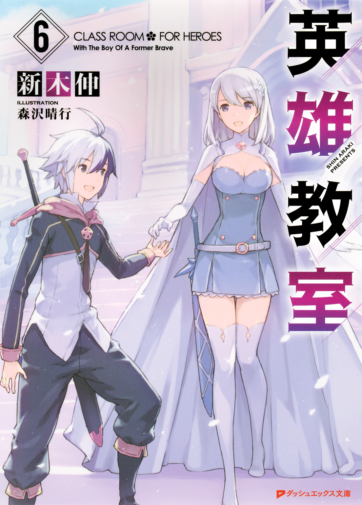
この本は縦書きでレイアウトされています。
また、ご覧になる機種により、表示の差が認められることがあります。
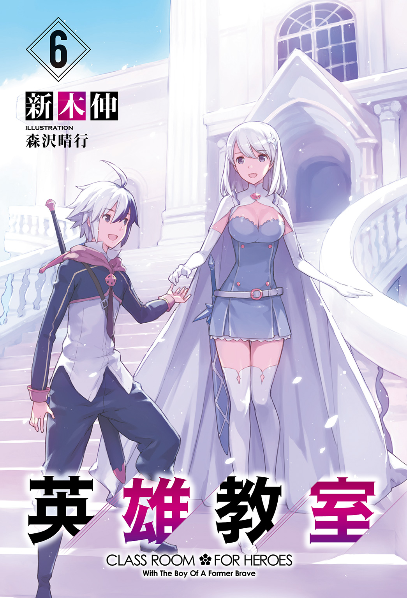
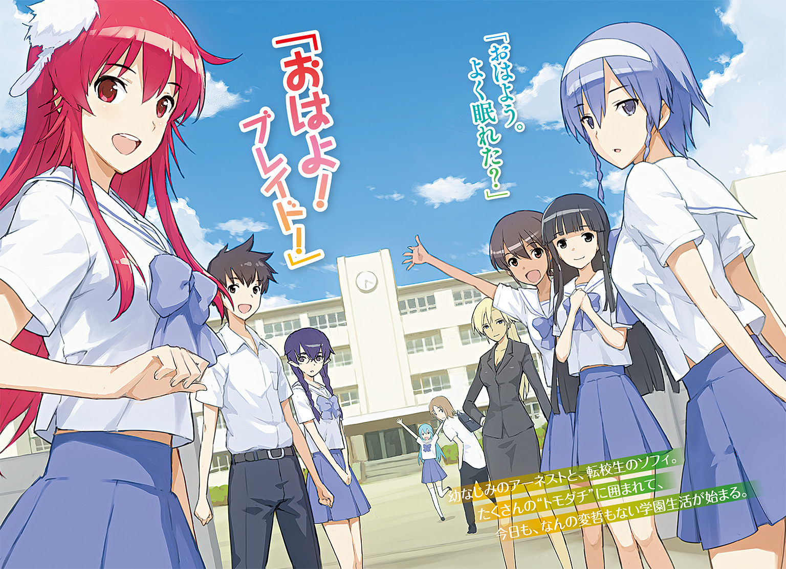
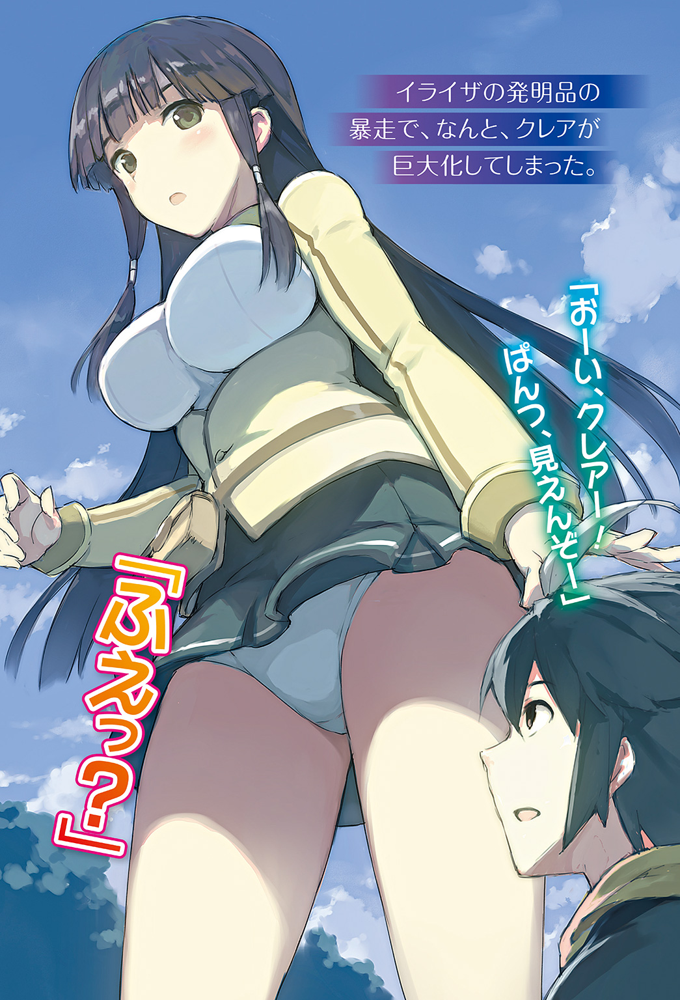
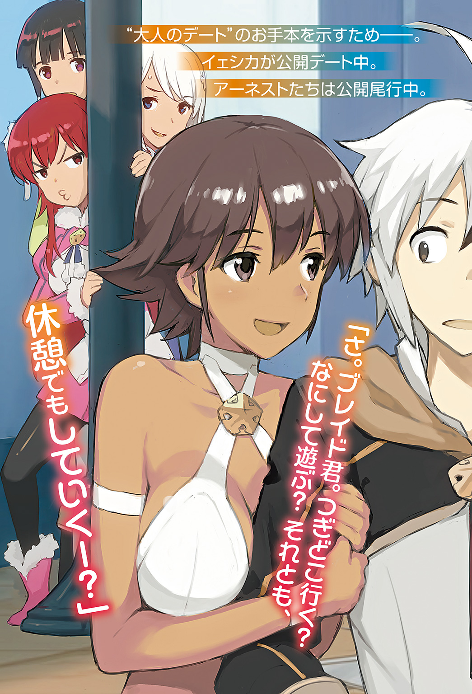
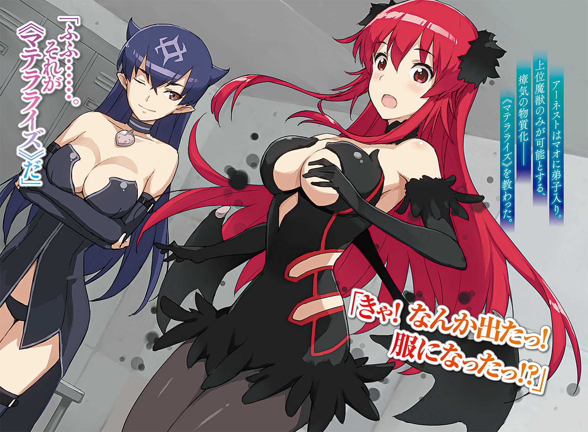
 ダッシュエックス文庫DIGITAL
ダッシュエックス文庫DIGITAL
英雄教室６
新木 伸
第一話「バレてる？」
○ＳＣＥＮＥ・Ⅰ「イライザの研究室」
「はい。じゃあここに、ばしゅーって、火属性の〝精霊力〟をお願いします」
「ん」
ブレイドは言われるままに――。ぶぅんぶぅんと、うなりを上げて、明滅している謎の球体に、掌を押しあて――火属性の精霊力を注ぎこんだ。
「じゃあつぎに、こっちには〝気〟をお願いします。あとで分離するのが面倒くさいんで、闘気だの魔力だの精霊力だの混ぜないで、気だけ、純度九九パーセント以上で頼みますよ」
「ん」
ブレイドはまた言われるまま、球体に〝気〟を注ぎこんだ。
純度九九というのも、べつに難しいことではなくて――。やろうと思えば九九・九九九まで純度を上げることができる。まあそこまで純度を引き上げると、〝氣〟と呼ばれる、別種のものに変化してしまうのだが――。
「ああほらっ。アイスが垂れますって」
「ん」
片手で持ってたアイスが垂れそうだ。ブレイドは、アイスをぺろーりとやった。
「精霊力。なんに使うんだ？」
「もちろん研究に使うんですよ。動力源として。メガワット級の動力は作るのもメンテするのも面倒ですから。その点、気や精霊力は便利ですねー。協力してくれる人がいれば――ですけども」
ブレイドが聞くと、イライザは答えた。
なるほど。電池みたいなものか。俺は電池がわりか。まあいいか。
「しかし......、大丈夫なんですか？」
「なにが？」
こんどはイライザから聞かれたので、ブレイドは聞き返した。
「普通、これだけの量を絞り出したら、からからのミイラみたいに干上がっちゃうものなんですが」
「ああ。コツがあるんだ」
ブレイドは軽く言った。
気や魔力といった力の源は、本人の生命エネルギーだ。その生命エネルギーを単純変換していたなら、イライザの言うように、この量を絞り出すことは不可能だろう。どんな体力の持ち主でも干からびてしまう。
だがコツがあるのだ。〝元手〟はたしかに自分自身の生命力だが、単純変換するのではなくて、周囲のエネルギーを巻き込んで、何倍、何十倍にも増幅する方法やら、あるいは永久循環させる方法なども......。
勇者業界では常識となっている手法だ。それがでなければ、大技を次々とぶっ放したりすることなどできない。
でも、ひょっとして......？ 世間一般では常識ではなかったりするのだろうか？
なんとなく、そんな気がしてきたが......。まあいいか。
イライザに対しては、自分が〝元勇者〟であることを隠す必要はない。もうとっくにバレている。
いつバレたのかと聞いてみたことがある。前々から怪しいと疑っていたようだが、決定的にバレたのは、〝勇者の鎧〟の修復作業のときだったそうだ。着用者であるブレイドの身体スペックを精査して、勇者以外ありえないという結論に至ったそうである。
しかし......。イライザにはバレているので、いいとして......。
あと何人くらいに、バレてんだろ？
いや。バレたらまずいということは、もうそんなにないのだが......。
「なーなー？ 何人くらいにバレてると思う？」
「はい？ なんの話です？」
「だから。俺が、元勇......げふんげふん、......だってことを、知ってるのは、おまえのほかに、あと誰がいるかな、って話なんだけど」
「なんだ。そのことですか。いくら私が天才だったとしても、言わなきゃわかんないですよ。テレパシーが使える機械なんて作ってないですし」
「――で。何人？ 誰とだれ？」
「さあ？ 直接、そのことを話題に出したことはないですし。私が、はっきり把握しているのは、しょっちゅう言い間違えてるディオーネ将軍と、あと、イオナですかね？ 昔からイオナのところには通っていたわけでしょう？」
「それはわかってる」
ブレイドは言った。
生徒たちのあいだでは、このイライザのほか、イオナと魔王には、とっくにバレている。ソフィには自分から告白した。ほかの大人たちのほうは、昔からの顔馴染みは全員だ。
だが残りの面々はどうなのか？
特にクレイとかカシムとか、クレアとかイェシカとか。
「なーなー......？ みんなにバレてると思う？ バレてないと思う？」
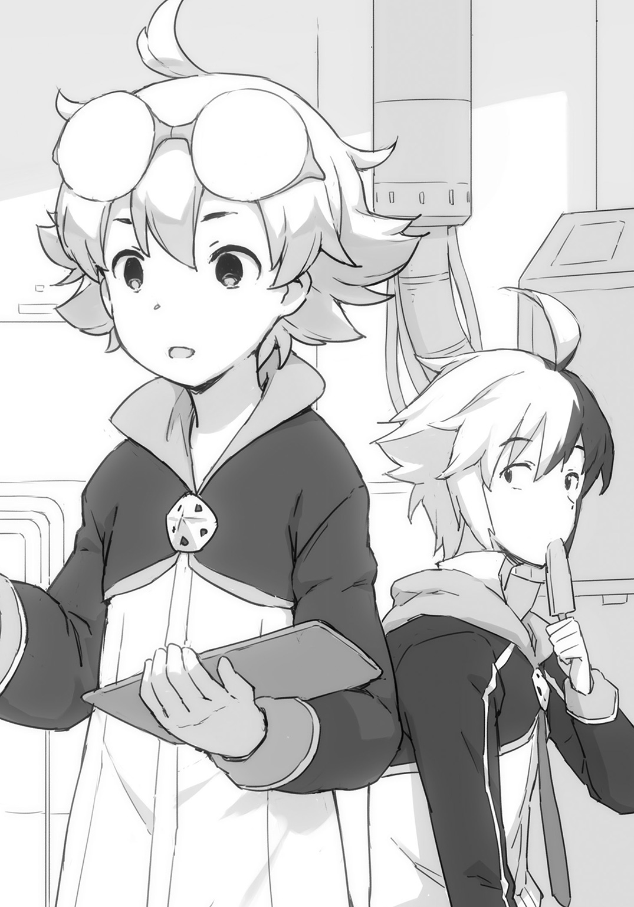
「なんで、そゆこと、私に聞きますか？」
イライザはちょっと唇を尖らせて、言ってきた。
「だって。おまえぐらいしか、相談できるやつ、いねーもん」
「そ、そんなこと言ったって......、な、なにも出ませんからねっ」
「いや情報を出してくれよ」
「私はそーゆーのっ――、空気読むのとかっ――、苦手なんですよっ！ 雰囲気を察するなんて芸当ができるなら、一人で引きこもって研究なんてしてないですよ！」
「一人じゃないじゃん。最近、もう一人いるじゃん」
――と、ブレイドは顎をしゃくった。
研究室の片隅で、機械のように正確に、繰り返し作業を続けている人物がいる。
ジェームズだ。最近入った、イライザの〝助手〟だ。
なにか街で悪さをしていたのを、とっちめられて――助手という名の奴隷をやる条件で、許してもらったらしい。
すごく真面目な男だ。命じられた単調な作業を淡々とこなしている。たまにブチキレて反抗することもあるが、イライザが〝ホムンクルスツクッテアゲテモイインダケドナー〟という呪文を唱えると、猛烈な勢いで、また仕事にもどる。
いったいどんな悪さをしていたのか。その呪文にどんな意味があるのか。ブレイドには、まったくわからない。
「あんなの置物みたいなもんですよ。実験器具の一種ですね。――絶対に、どう控えめにみたところで、異性と認識するどころか、そもそも人間と思うことさえ、甚だ困難を伴いますね！」
イライザは顔を赤くさせて、なにか反論している。
ん？ なんで〝異性〟が関係してくんの？ なんか変な話になってきていないか？ まあいいか。
「と、とにかく......！ 気になるんだったら、直接、本人たちに聞いてみればいいんじゃないですか？」
「え？ 〝俺元勇者だってこと知ってる？〟――とか、聞くのか？ それはマズいんじゃないか......？」
それを聞いちゃったら、バレていなかった相手でも、アウトになっちゃうんじゃないかと思う。あまり自信はないが......。
「馬鹿ですか？ それとなく聞きだすんですよ」
「それとなく......って？ どうやって？」
「そのくらい自分で考えてください。私は忙しいんです。さあ――行った！ 行った！」
追い出されてしまった。
コーヒーカップやビーカーが飛んでこないうちに、ブレイドは、とっとと退散した。
○ＳＣＥＮＥ・Ⅱ「クレイに聞く」
「まあゆっくりしていってくれ」
部屋を訪れると、イケメン色男は、気前よくブレイドを迎え入れてくれた。
「おまえが遊びに来るなんて、めずらしいじゃないか」
「そうだっけ？」
クレイたちの部屋には、わりと遊びにきている気がする。男子たちのなかでいちばん気の合うのがクレイとカシムの二人だ。
「あれ？ カシムは......」
「ああ、あいつは......、まあ......、この時間だと......、いつものアレだよ......」
「アレか」
「アレだよ」
アレというのは、なんだかわからなかったが、まあ、訓練でもしているのだろう。
クレイはお茶とお菓子を出してくれた。
女子会みたいに、香りのいい紅茶やら、何種類ものお菓子が豪華に並ぶようなことはないが、ポットに入った一種類のお茶と、量だけはある一種類のお菓子が出てくる。
お菓子をいくつかつまみ、お茶で流しこんで......、ブレイドは要件を切り出した。
「なあ、クレイ......。勇者って、いるじゃん？」
イライザの言う「それとなく切り出す」を、自分なりに、どうすればいいのか、考えてみた結果だった。
「いきなりだな」
クレイはちょっと面食らったような顔をしている。
だめだったー！ ぜんぜん！ 〝それとなく〟になっていなかったー!?
いきなり最初の一歩目から、ブレイドはつまずいていた。自分に絶望していた。
「勇者様か......」
クレイはどこか遠くを見るような目で、つぶやいた。
「ん？」
「ああ。このあいだ、いらしてくださったっけな......。たくさん教えていただいたよな......」
「ん？ ん？」
クレイの顔の前で、ブレイドは手を振ってみた。
目がぜんぜん、遠くを見ちゃっている。焦点が遠くに合っちゃっている。
「また......、稽古をつけに来てくれるかな......、勇者様......」
「いやー、ないだろ」
ブレイドは、思わず、そう言った。
あれは一回こっきりの特別サービス。国王のやつが、泣いてハナミズ垂らして頼んでくるので、仕方なく――あいつの土下座なんか見たくもなかったので、本当に、特別の特別の特別の――特別大サービスにて、一回こっきりで、やってやっただけなのだ。
「えー？ もう一回くらい、ないかなー......？」
「ないな」
ブレイドはきっぱりと言った。
「絶対ないか？」
「絶対だな」
確信を込めて、そう言った。
「そうかー......」
クレイは見るからにしょんぼりとなった。
「こんど教わる機会が、もしあったら......。破竜系の二の太刀、破竜饕餮を教わりたかったんだけどなー......」
このあいだクレイは〝勇者様〟から、破竜系の技を教わっていた。最も初心者向けである、一の太刀――破竜穿孔を、不完全な形で、なんとか発動させられるようにはなった。
ちなみに二の太刀が、ブレイドのよく使う技である。破竜饕餮くらいから、ようやく実用に耐える威力を持つ。
連発可能で、気の消費も少なく、牽制技としてちょうどいい――のは勇者業界の話であって――。世間一般レベルだと、破竜饕餮は〝攻城級〟の技に分類されてしまうようであるが......。
「俺、一の太刀を完全に使いこなせているんだ。勇者様にも見てもらいたいよ。そして、そろそろ、二の太刀を覚えてもいい頃だと思うんだ......」
わるいが。ぜんぜんだ。
二の太刀を教わるまえに、半端な感じの一の太刀――破竜穿孔を〝完全版〟にするほうが先だと思う。
いまの暴発ぎみにチビっちゃってる現状から、しっかりと溜めきってぶっ放せるようになれば、威力が数倍に引き上げられるのだが......。
ぶっちゃけ、いまの状況では、技で消費する〝気〟がもったいない。
「お？ ......ブレイド。......どこいくん？ 勇者様の話、するんじゃないのか？」
ブレイドはクレイに手を振って、部屋をあとにした。
もう用事は済んだ。
クレイは......、〝シロ〟だな。
○ＳＣＥＮＥ・Ⅲ「ソフィに聞く」
カシムを探して、あちこちを回った。
クレイの話では、カシムは「アレ」だという話だったが......。なにか自主訓練でもやっているのだろうと思ったが、試練場には見あたらなかった。「アレ」というのを、もっとよく聞いておけばよかった。
「あっ。おーい。ソフィ。カシムしらないかー？」
ちょうどソフィが見つかったので、ブレイドは聞いてみた。ソフィには聞く必要はない。当然「知っている」側だからだ。
ソフィは、小首を傾げて、ブレイドのことをじっと見つめてきた。
「......カシム？」
「そう。カシム」
「カシムだったら、この時間は、アレだと思うわ」
「アレかー」
また「アレ」とやらがでてきた。いったいどこでなんの修練をやっているのやら。
「......」
ソフィは壁に顔を向けていた。壁を見ているのではなくて、壁の向こう――ずっとずっと遠くの気配に意識を向けているのだと、ブレイドにはわかった。
細かな気配を探ることにかけては、ソフィは誰よりも鋭い感覚を持っている。元勇者でもちょっと敵わないくらいの、天賦の才が、ソフィにはある。
「......いるわ。いつものところに」
遠くを見ていたソフィが、ごく小さなつぶやきで、そう言った。
「そっか」
ブレイドは言った。
〝いつものところ〟というのは、やっぱり、よくわからないままだったが......。
ソフィに手を振って、とりあえず、そちらの方向に向けて歩き出した。
○ＳＣＥＮＥ・Ⅳ「カシムに聞く」
「こっちには風呂しかないんだがなー」
ソフィに示された方向に、まっすぐ向かってゆくと、すぐに風呂にぶつかってしまった。
敷地の一角に掘られた巨大露天風呂は、皆の憩いの場となっている。特にこの、放課後と夕飯の間の時刻は、汗を流す男子女子で賑わっていて――。
風呂の外周に沿って、茂みの合間を歩いていると――。
あ。いた。
カシムの姿を、ついに発見する。
茂みに頭から体を突っこんで――、低い位置に横たわっている。
さらには、肩や背中といった場所に、枝や葉っぱをくっつけていて――。
まるでなにかの〝迷彩〟でも施しているようだ。
いったいなんの〝訓練〟なのだろうか。偵察行動でもやっているみたいな感じだが。
なにをやっているにせよ、邪魔をしては悪いので、ブレイドも気配を殺して、カシムの背後から近付いていった。
「おい、カシム――」
至近距離まで近付いていって、声を掛けると――。
カシムは死ぬほどビックリしたようで――。器用なことに、地面に伏せたまま、すくなくとも、数センチは飛び上がった。
「な......、なんだ、ブレイド......。脅かすなよ......」
「わるいわるい。ちょっと聞きたいことがあって」
「なんだ？ おまえも覗きか？」
「ん？ なんだ？ 〝ノゾキ〟って？」
カシムが日課としてやっている〝アレ〟というのは、どうも〝ノゾキ〟というものらしい。
どんな種類の訓練なのかは、さっぱりなのだが......。
「いや、俺は――」
「いや、わかるわかる。皆まで言うな。――おまえも、超生物であるまえに、一人の男だったということだなっ。――わかるぞっ！ 男のロマンだよなっ！」
わかられてしまった。なにやら......〝男のロマン〟であるらしい。
「さあ見ろ。一緒に見ようぜ。ここは特等席なんだ。オレだけのヒミツのスポットだが、おまえには教えてやる。――みんなにはヒミツだぜ？」
ブレイドはこくこくとうなずいた。なにか〝ヒミツ〟を共有できたみたいで、ちょっと、うれしい。
しかし――、この場所が、なんだというのだろう？
風呂しか見えないのだが。
湯気をあげる湯面が、遠くまで続いている。湖のような広さをもつ、広大な湯面だ。
女の子たちが、腿のあたりで湯をかきわけながら、何人も通り過ぎてゆく。
カシムはその様子を、繁みに潜んで、じーっと見ている。
いったいなにを見ているのか。どこを見ているのか。まったくわけがわからない。
仮に――。たとえば――。女の子の〝ハダカ〟なるものに興味があるのだとしても、普通に、風呂に入って、堂々と見ればいいのではなかろうか？
ブレイドには、〝ハダカ〟を見たがる心境というのは、まったく、わけがわからないのだが――。
「なーなー」
「しっ......、いまいいところなんだ」
カシムは集中している。
向こうから、ざぶざぶとお湯を割って、歩いてくるのは――あれはルナリアか。
カシムは、じーと見てる。
最近、このローズウッド学園に通うようになったルナリアのハダカは、特にレアなハダカなのか――すごい集中力でもって、ガン見している。
「......」
ブレイドはしばらくカシムの隣に並んで、ルナリアのハダカを眺めていた。
彼女のカラダは、うちの学園の女の子たちの中で、いちばん凹凸がついている気がする。
起伏と凹凸。特に〝凸〟の部分にカシムは超集中しているようだが......。同じ部分をじいっと見ていても、カシムみたいに〝ハァハァ〟にならないのは、なんでだろう。もしかして自分に欠陥があるのだろうか。
ふと、本題を思いだした。
「なー。カシム」
「なんだよ。見つかったら大変だろ。静かに覗けよ」
いやべつにそれはどうでもいいのだが......。
「なー。勇者って。いるじゃん」
「ああ？ 勇者様？ このあいだ来たじゃん」
「クレイが、また教えに来てくれるかなー、って。――カシム。おまえは、どう思う？」
およそ完璧な判定テストだと、自分で、そう思った。
「さあなー。無理なんじゃねーの？」
「どうしてそう思うんだ？」
「だって、おまえ......」
カシムの返事に、ブレイドはじっと聞き耳を立てた。
「勇者様っていったら......、忙しいはずだろ。俺たちガキなんかに、付きあってるヒマ、あるわけないだろ」
いやー。勇者もじつはこんな年齢でー。年相応のガキなんだけどー。
「前のときのあれは、国王のやつが土下座でもして、それで無理言って来てもらっただけだろ。一回こっきりの特別サービスだろ」
惜しい。土下座はなかった。させなかった。
土下座をしちゃいそうになって、そんなの見たくなかったから、引き受けることにしたのだ。
――ということで、カシムもシロとわかった。
あの質問をしたときに、普通のリアクションで返してきたなら〝シロ〟――。
実用的で、画期的な判定法を編み出して、ブレイドは意気揚々と、カシムの元を離れた。
カシムは〝シロ〟だった。
では、つぎに確認するのは――。
ああ――。
ちょうど。イェシカとクレアがそこにいた。
ブレイドは、繁みを歩き出ると、ざぶざぶと、風呂に入っていった。
○ＳＣＥＮＥ・Ⅴ「イェシカに聞く」
「うえっ!? ブレイド君っ!? ――と!! カシムっ!?」
ざばっと湯の中から全裸で立ちあがったイェシカが、びしっと指先を突きつける。指先が狙うのは、ブレイドの体を貫通して、繁みに隠れるカシムであった。
「あんたまた〝覗き〟やって――！」
イェシカの上げている大声に、女の子が、大勢、集まってきた。
女子一同は、腰に手をあてて仁王立ち。繁みに伏せてるカシムを、ぎぬろ、とばかりに見下ろしている。
「い、いや――、ちがうんだ――、これは、ちがうんだ――」
カシムは必死になって言いわけをしている。
なにが違うのだろう。〝ノゾキ〟とやらをやっていたのは、間違いないわけで――。
「言いわけ無用」
女子たち一同は、カンカンだ。
皆、臨戦態勢。闘気と魔力と精霊力と、怒りのオーラが物質的現象を伴って、天高く噴き上がっている。
しかし、こっちも、なんで怒っているのか、よくわからない。
普通のわかる男、ブレイドの〝仮説〟によると、どうも、ハダカを見られたことで怒っているようであるのだが......。
しかし、皆でいつも風呂に入っているわけで、そのときにはハダカだって見せあっているわけで......。なんで〝ノゾキ〟だとだめなのだろう？ うーむ......。深淵だ。
「――で、辞世の句はある？」
「ひぃっ」
女子が凄む。カシムが怯える。カシムの人生はあと数秒くらいでおしまいかもしれない。
「成敗ーっ！ 星までとんでけー！」
もんのすごい一撃。
カシムは、ぴゅーっと、空高く飛んでいった。
「おー......。今回は、高いなー、遠くまでいきそうだなー」
ブレイドは額に手をあてて、カシムが見えなくなるまで見送った。あの方向だと、試練場の屋根あたりまで飛んでいったかな。
「――で。なに？ ブレイド君も覗き？」
全裸のイェシカが、よくくびれた腰に手をあてて、ブレイドをねめつけている。
「いや。俺はカシムに話があっただけ」
ブレイドはズボンを脱いだ。服のまま膝まで湯に浸かり、すっかり濡れそぼったズボンを、上着と一緒に、そこらの岩の上に、ぺちりと置いた。上着も下着も全部脱いで、素っ裸になる。
風呂はハダカで浸かるものである。常識マスターであるブレイドは、当然、知っている。
「......よし」
イェシカは鼻息とともに、うなずいた。
ちゃぷんと、湯の中に裸身を沈めたイェシカの隣にいって、ブレイドも、よいしょ、と座りこんだ。
「まったく。カシムのやつ。バカよね。バカ。見たいんなら普通に入ってくりゃいいのに、なに考えているのかしらね？」
「男のロマン、というものらしいぞー」
「ロマン？ なにそれ？ わかるの、ブレイド君？」
「いいや。わからん。俺は普通の男だから、わからないとならないんだが......」
「ブレイド君は普通じゃないから、わかんなくていいと思うわよ」
「俺は普通だよ。極めて普通だよ。健全な男子だよ」
「じゃあ、カシムは普通じゃないから、見習っちゃだめじゃないの？」
「え？ そうなの？」
「そうでしょ。エロでバカでお調子モノで、いーかげんで、あれが普通っていったら、全男子が、ちょっと可哀想でしょ？」
「そうなのか」
知らなかった。自分以外のすべては〝普通〟だと思っていた。一般人にも〝普通〟とそうでないのがいるわけだ。カシムはあっち側か。
「カシムとつるんでると、バカとエロが感染っちゃうわよー」
ブレイドは、ぷるぷると顎を横に振った。
エロとバカが〝普通〟なら、感染るのは、むしろウェルカムだが。そうではないようなので、ごめんこうむる。
「そういえば、イェシカにも聞きたいことがあってさー」
ブレイドは湯の中でイェシカにちょっとだけ近付いた。内密の話ができるように、すこしだけ距離を詰める。
「な、なに？」
イェシカは、ブレイドが詰めたのと同じぶんだけ、お尻でにじって、距離を取る。
また同じぶんだけブレイドが距離を詰めてゆくと、こんどは観念したのか、逃げずにブレイドの顔を、まっすぐ見つめてきた。
「な、なに？ 覗きはしないけど、堂々と、ち、痴漢行為とかっ？ だからそういうところは、見習わなくていいってば......。それとも、マジなの？」
「ん？ チカン行為って、なに？ それ普通なん？ ――だったら、俺、全力で学ぶけど？」
「学ばなくていいの。あたしの勘違いだから。あー、びっくりした」
イェシカは、なにかびっくりしている。ぱたぱたと掌で首筋を扇いでいる。
「なーなー。勇者って。いるじゃん」
「あー、うん？ 勇者様ね？ それがどうしたの？」
「クレイが、また教えに来てくれるかなー、って。――イェシカは、どう思う？」
自身の編み出した完璧な〝判定法〟を、ブレイドはイェシカにぶつけてみた。
「それはァ......、勇者様次第なんじゃないかしらーっ？」
なにやら、じとーっとした視線を向けられる。自分のほかに、近くに誰かいるのではないかと、ブレイドは首を巡らせて周囲を見たが......。誰もいない。
やはりこの、じとーっとした視線は、自分に向けられているようである。
「カシムが言うには、無理なんじゃないかって。勇者は忙しいからって」
「ううん、そうかもしれないわねー。勇者様、色々と、お忙しそうだしねー」
「なにに忙しいのかな？」
「そうねー。たとえば〝青春〟するのに忙しかったり？」
「青春かー」
ブレイドは空を見上げた。赤くなりつつある空を、二羽の鳥が旋回している。アインとツヴァイだ。鳴いている声は、あれは、「おうちかえろー」の意味。二羽は親鳥とともに王宮の尖塔にある巣に住んでいる。
「......青春って、どんなんだろ？」
「たとえば。そうね......。女の子と、仲良くやったり、とか？」
イェシカがすっと身を寄せてきた。もとより並んで湯の中に座っていたが、もっとずっと、密着するほど近くにやってきた。
片腕を取り、ぎゅっと胸を押しあててくる。もう片方の手は、ブレイドの腿のあたりをくすぐってくる。
ブレイドは、眉をひそめた。
なんでこんなくっついてくんの？
「チカン行為？」
念のため、そう聞いてみる。イェシカのさっき言ってたアレだろうか？
ブレイドの類まれなる〝普通力〟が察するところ――。〝チカン行為〟というものは、身体接触を行うことである。
だとすれば――。腿のあたりをまさぐってくるイェシカの手は、つまり、チカン行為なのではあるまいか？
「痴漢っていうのは、嫌がっているのを無理やりすることよ」
「そっか」
ならこれはチカンじゃないな。べつにヤじゃないし。
「で。なんなのこれ？」
「んー、色仕掛け的な......、ナニカ？」
弾力のある胸を、ぐー、っと押しつけてきながら、イェシカは言う。
みんないろいろ感触が違うけど。弾力はイェシカが一番だな。
そんなことを思いながらブレイドは、吐息がかかるほど近くにあるイェシカの顔を見つめた。
「色仕掛けってのは、チカンと、どうちがうの？」
「やっぱ。だめかー」
「だめって、なにが？」
「なんであたし、探りを入れられているのかっていうことを、探ろうとしているわけなんだけど？」
「あー、いやー、えーと......」
すっかりバレてた。
やっぱりイェシカは勘が良い。諜報員志望は伊達ではない。
「いやー、あのー、そのー......」
ブレイドは、しどろもどろになった。
イェシカが〝シロ〟なのか〝クロ〟なのか、じぇんじぇん、わからない。
クレイやカシムたちみたいに、わかりやすい反応をしてくれない。
「イ、イェシカは......、ど、どうなんだよ？ クレイたちみたいに、ゆ、勇者に......、また会いたいとか？ 思ったり？」
ブレイドは頑張った。質問の続きを口にする。
「うーん......、そうねえ」
イェシカは唇に指先をあてて、考えこむ仕草をした。
「勇者様は、いっかなー......、べつに」
「な、なんで？」
「勇者様より、気になる相手がいるからっていうのは......、答えになっていると思う？」
胸をぐいぐいとブレイドの腕に押しつけてきて、イェシカは言う。
これは〝シロ〟なのか〝クロ〟なのか。どっちなのか。まるでわからない。質問をすると質問で返される。
「ねえ。どうなの？ うりうり」
うりうりとされた。
「さ、さあ......？」
ブレイドはとぼけるので精一杯だった。
「あら。ブレイド様。こちらでしたか」
柔らかな声とともに、ルナリアがやってきた。
「ご一緒してもよろしくて？」
湯面をほとんど揺らさずに、すうっと、ブレイドの隣に滑りこんでくる。
片側にイェシカ、もう片側をルナリア。二人に挟まれる。
ルナリアはイェシカがやっているのと同じように、ブレイドの腕を取って、ぎゅうっと胸を押しつけてくる。
イェシカのものより、だいぶ大きい。そしてちょっと柔らかい。
「ほらほら。彼女には聞いてみなくていいの？」
イェシカが言う。
「なにをですの？」
「えーっと......、その......、勇者のことなんだけど......」
「勇者様？ ――そういえば、このローズウッド学園には以前、勇者様がいらしたのだとか......。勇者様から、直々に教えを受けるなんて、なんて光栄なことでしょう。羨ましく思いましたわ。いくら国王陛下のお膝元であるとはいえ、なんたる依怙贔屓かと。正直、歯嚙みしましたもの」
ルナリアが言う。
その言葉に、イェシカがウィンクをしてみせる。
――この意味はわかった。
ルナリアは〝シロ〟だという意味だ。
「ねえルナリア。勇者様って、どんな御方だと思う？」
〝シロ〟の確定した、そのルナリアに――イェシカが話しかける。
「どんな御方って......？ 直接、お会いされたのでは？」
「勇者様ってばー。シャイな御方なのかしら。ずっと鎧を着ていらしたからー。あたしたちも、見てないのよね。鎧のなかの人は。......アーネストの予想では、素敵なナイスミドルのおじさまだっていう話なんだけど」
「わたくしは、勇者様はお若い方だと思っております。アンナのように〝希望〟や〝願望〟で言っているのではなく、根拠あってのことですけど。国王陛下の回想録をあたってみればわかることですが、勇者様のことを語られるときの国王陛下のお言葉遣いは、同じくらいの年齢のお相手というよりも、年下の、息子ぐらいの年齢のお相手の方に対するようなものになっておりましたし......。青年、あるいは......、少年と呼んでも差し支えないような年齢である可能性も......」
ぎくぎくぎくーっ。
ルナリアのプロファイリングは完璧だった。勇者像を完璧に射貫いていた。
「年齢はともあれ。世界を救ったその武勲は本物です。きっと物凄くお強いんでしょうね」
「そうねー。きっと超生物な感じなんでしょうねー」
イェシカが相づちを打っている。ものすごく危険な相づちだ。
「わたくし。自分では、かなりの高みに立っていると自惚れていたのですけど。最近、わたくしなどには、理解の及ばない次元の強さがあるということを、身をもって知りました」
「へー。そうなんだー」
「ええ。そうですわ」
間近から、にこりと微笑みが向けられた。
ブレイドは、どきりとなった。
ルナリアがこの学園にやってきたとき、特訓をした。稽古をつけた。そのときのことを言っているのだと、ブレイドにもわかった。
あのときには何度も彼女を惨殺した。何度も殺戮を繰り返した。抵抗してもしなくても、同じように斬り殺した。強いとか弱いとか計れやしないほど、圧倒的に一方的に蹂躙した。
きっと、そのときのことを言っているのだ。
「きっと、勇者様は、理解できないほどの強さをお持ちのはず。そんな御方から教えを受けたなら、きっと、次元を一つ二つ超えてしまえるほどの、飛躍的なレベルアップが望めるのでしょうね。一度。教えを授かりたいです。そのときに、当学園に居なかったことが、本当に悔やまれますわ」
暗くなりはじめた空を見あげて、ルナリアは言う。
「ねえねえ。そういえばルネって、ここに来たとき。１が２になったとか、３になったとか、どうだとか、言ってなかったっけ？」
「え？ そういえば......？」
「んで？ なんだったっけ？ 勇者様に教われば、飛躍的なレベルアップをする......だったっけ？」
「え、ええ......。そう言いましたけど......」
ルナリアの目が、ついっと、ブレイドに向けられる。
ブレイドは、ぎくぎくーっとなった。
「勇者様のプロファイリングって、なんだったっけ？」
「ええ。若い。とてもお若い......、青年あるいは、少年と呼んでも差し支えないような年齢であるかと......」
「それって、あたしたちと、変わらないくらい？」
「ええ。そうかもしれませんわね......」
ルナリアの腕に、ぎゅっと力がこめられる。ブレイドは腕を搦め捕られてしまった。
イェシカが、またウィンクをしてきた。
その意味は......。
わかんねーよ！ なんなんだよ！
ルナリアは〝シロ〟だったはずなのに、どっちなんだか、わからなくなってしまった。
「勇者様に教えていただけなかったことを、わたくし、もう、悔やむのはやめますわ。だって......、わたくしは、ブレイド様に教えていただけたのですもの。ブレイド様より素晴らしい〝師〟など、いるはずありませんわ。たとえ勇者様でも......」
腕をとらえて、ぴったりとくっついて、ルナリアはそう言う。
「いや。俺。〝師〟とかじゃないから。単なる一生徒だから。トモダチでしかないから」
「あら？ トモダチには、教えてくれませんの？」
「教えるけど......」
ルナリアは拗ねたような顔を作る。本当に拗ねているのではないことは、ブレイドにだって、わかるのだが......。
声とか態度とかスキンシップの密度とか。さっきから、なんなんだ？ さっきイェシカの言っていた、〝色仕掛け的なナニカ〟というやつか？ それとも〝チカン行為〟というほうか？
なんにしても、なんで俺、色仕掛けないしはチカン行為されてんの？
ところで、おっぱい、ぐいぐい、あたってきてるんだけど。あててんのかもしれないけど。だからといって、どうということもないんだけど。
「あー！ もう！ そこっ！ なにやってんの！」
アーネストの声がした。
「公然たる風呂で、不謹慎なことは禁止！ 禁止っ！ 大禁止っ!! もうすこし離れなさい！ くっつきすぎっ!!」
アーネストは大きな声で、きいきいと喚いている。
自分だって、ひっついてくることあるし、おっぱいあててくることあるし、気づいてないかもしれないので、「あたってるぞ」と言ってやったら、「あててんの」と確信犯的な答えを返してきたこともあるのだが。
「アンナも混ざるー？」
「――んなっ!?」
イェシカの言葉に、アーネストが目を剝いている。
「ビビリのヘタレに可哀想なことを言うのはやめておあげなさいな」
「なんですと!!」
挑発されると簡単に乗ってくるのが、アーネスト・フレイミングというオンナである。
「誰がビビってるって!? 誰がコンプレックスで卑屈になってるですって!?」
「アンナ。コンプレックスのほうは言ってない。――なにがコンプレックスなの？ 色？」
「うっさい！ 私！ うまいんだから！ いっつもブレイドに、上手だって褒められてるんだから！」
「なーなー。色ってなんだ？ どこの色？」
「死ねば？」
気になったので聞いてみたら、ものすごく冷たい目で返された。
「はい！ ブレイド！ そこの石の上！ 横になる！」
アーネストは、びしっと、岩の上を指差した。
「えー？ 今日はいいって......」
「はやくする！」
「わかったよ......」
ブレイドはしぶしぶ、岩の上に横たわった。怒られたり、蔑まれたり、今日はさんざんだ。
アーネストの手が背中を這う。肌を通じて注がれる炎属性の気に、湯に浸かっているときよりも、体が温まる。その心地よさに、そのうちブレイドは、なにもかも、どうでもよくなってきた。
「あー、そうそう。ブレイド君。ブレイド君」
「ん～......？」
「アンナには聞かなくていいの？」
「なにをー？」
「ほら。アレ。あのこと」
「あー、アレかー......」
これについては試すまでもないと思うのだが。
「なによ？ アレとか、あのこととかって？ 私には内緒のことなの？」
「いや。勇者って......、いるじゃん？」
「ゆ、勇者様っ？」
アーネストの手がぴくりと止まる。
「べ、べ、べ――、べつに勇者様は、ち、ちがうんだから......。そ、そ、そ――、そういうのとは、ちがうんだからっ......」
「そーゆーの、って、なんだ～......？」
「い、いいのっ！ 気にしなくていいのっ！ しつこいと、もうマッサージしてあげないからねっ！」
べつに今日は頼んだわけではないのだが。
ひとつわかったことがある。アーネストは〝シロ〟だな。やっぱそうだったな。
「なー。勇者様って、また、来てくれると思うかー？」
なんでそんなことを聞くのか。自分でもよくわからないまま、ブレイドはそう聞いていた。
「え？ 勇者様......？ そ、そりゃあ......、来ていただけるなら、う、嬉しいけど......。あっ！ 嬉しいっていうのは、武を修める一生徒として大変に勉強になるという意味で――!? べつにそんなんじゃないんだからねっ!?」
「ああ。わかってるって」
〝そんなん〟って、どんなんだか、まったくわからなかったが......。ブレイドはとりあえずうなずいておいた。
ブレイドの類まれなる〝普通力〟の察するところ、ここは肯定しておいて間違いはない。
「でも勇者様......、お忙しいわよね......。一回来ていただけただけでも奇跡みたいなものだから......。もう二度とないわよね......」
自分でも、まったく理由はわからなかったのだが......。
ブレイドは、思わず、口を開いて、アーネストにこう言っていた。
「俺からも国王に頼んでやるよ。もういっぺん来てくれるようにって」
「ほんとっ!?」
喜ぶアーネストが、背中に抱きついてくる。
重量のあるその物体を、背中に感じつつ――ブレイドはうっとりと上機嫌で目を閉じていた。
おーい。あたってるぞー。
第二話「クレア・マウンテン」
○ＳＣＥＮＥ・Ⅰ「研究室にて」
「はい。イライザちゃん。食堂のマダムから差し入れです。食堂に来て、ちゃんと食べないとだめだって。これは伝言で」
「あー、どうもです」
クレアの持ってきたお皿に、イライザが、もっさりとした動作で手を伸ばす。
目の下にはくま。髪の毛はぺたっと寝ている。服はすくなくとも三日は着替えていない感じ。
同僚のジェームズさんのほうは、机の下に倒れていて――いや、長くなって寝ていて、はじめは死体かと思ったほど。
「......ね？ 風呂いかない？ 背中流してあげる。髪の毛洗ってあげる」
クレアは言った。
着替えとおなじだけ、お風呂のほうからも遠ざかっているに違いない。女の子として、それはどうかと思う。
「いま研究。大詰めなんで。そんな時間。ないっすよ」
「そっか」
クレアはあっさりと引き下がった。
しつこく、強く、干渉するのは、クレアの流儀ではない。
「なにか、お手伝いできること、ありますか？」
クレアはイライザに言ってみた。
「その黒髪をくれ」
机の下から、むくりと起き上がって――ジェームズが言った。
「お断りします」
クレアはぴしりと、これ以上ないほどに、冷たく言った。
この助手の――顔だけはイケメンのジェームズさんは、女の子の髪の毛を切ってまわっていた元・変質者だ。
現在は更生して、イライザちゃんの研究助手をやっている。
だけど――？ また〝変態〟に戻ってしまったのだろうか？
「ああ。それですね。ホムンクルス製造法を、ちょっと解析してみたら、触媒として女性の髪が必要なところまでは、正しかったようなんですよ。まあ五〇キロ分も必要ではなくて、ほんの、せいぜい一〇〇グラムもあればいいんですがね。原材料ではなく、単なる連鎖反応の引き金を引くためだけの触媒ですんで」
「一〇〇グラムって、どのくらいです？」
「長さで、三〇～四〇センチじゃないですかね？」
「え？ そんなに？ セミロングになっちゃいますよ」
自慢の黒髪を手で押さえて、クレアは、数歩ほども後じさる。
「枝毛直りますよ。毛生え薬処方しますよ。そこの変態が地べたに額を擦りつけて懇願しますよ。――ほら。やって。早く」
「頼む。この通りだっ！」
「そ、そんなこと言われても......」
クレアは迷った。頼まれると嫌と言えないのが、クレアのキャラである。
「まあ。べつにいますぐじゃなくていいんで――。髪が必要なプロセスは合成のだいぶ後ろのほうなんで。――それより、ちょっとそこのガラス・シリンダーを、部屋の奥の台座のところまで、運んでくれませんかね？ 重機持ってこないとならない重さなんで。ちょっと私らには無理なんで。ご自慢の怪力で。ぜひひとつ」
「そんな......。怪力とか......、やめてね？」
怪力――筋力増幅は、クレアの持つ個人能力の一つで、「復元」とならぶ固有技である。
気による筋力増幅は個人差があるが、クレアの場合には、倍率が桁違いだった。幼少期から、すでに数十倍のゲインを持っていた。現在では、ベンチプレスであれば、数トンがもちあがる。
人が入れそうなサイズの、大きなガラスの筒状の物体に、手を掛けたところで、クレアは振り返り――。
「あれ？ でも変質者さん――強い人じゃありませんでした？」
クレア、イェシカ、ソフィ、イオナ、クー、そしてアーネストまでをも倒して、髪を丸刈りにしようとしていて――〝本物〟の〝準英雄級〟だったはず。
「あー、こいつ、包帯ないと、たいしたことないんで。肉体のブーストは、すべて発明品頼みなんで」
「そうなんだ」
「包帯ではない。自立稼働型布状防御兵装だ」
「長いしセンスないので、やっぱ、包帯で」
なんだかよくわかんないが、クレアはとりあえずガラスの筒を持ちあげた。大人の男性数人でも持ちあげられるかどうかという重量を、ひょいと、細腕で運んでゆく。
指示された台座の上に設置した。
かちりとはめると、ぶうんと音を立てて、台座の上のまるい輪っかが光る。
「あ。これ動きましたよ。ぶうん――って、光がつきましたよ？」
言ってはみたが、イライザと変質者は、なにか専門的な話を交わしている。
この台座と、そしてガラスの円筒。円筒の手前側には切れこみがある。大きさは、ちょうど人がくぐれるくらい。
なんと！ クレアは、気がついてしまった!?
これは、きっと、人が入る装置にちがいない。
「あのー、これ、人が入るキカイですか？」
聞いてみた。へんじがない。
二人は発明に夢中のようだ。
台座のまるい光が、強くなったり弱くなったり、大きく広がったり小さくすぼまったり、いかにも、「乗れ」と誘っているように見える。
クレアは、ちょっとイタズラ心を発揮して――。
「えいっ」
台座に乗ってみた。
ぶうん――。
そうしたら、足下の台座がうなりをあげた。うなりはどんどん大きくなる。足下の光は回転をはじめた。
「あれ？」
なんか、まずいことしちゃったかな？ ――と思ったので、降りようとした。シリンダーから出ようとした。
そしたら――。
しゅっと、シリンダーが閉まった。ガラスの筒の内側に、閉じ込められてしまった。
内側から、ぱんぱんと叩いてみたが、向こうで背中を向けている二人は、こちらに気がつかない。
「ぱんぱん」を「バンバン」にしてみたら、ようやく気づいた。
クレアは手を振った。「これ、閉まっちゃったんですよー」と、笑いながら手を振った。
二人は――。
顔面蒼白。
なんか大声で叫んでみたり、右に左に慌てて走って――壁やら机やら装置やらにぶつかってみたり。
かと思えば、こんどは立ち止まって動かなくなって――。
ほっぺたを両手ではさんで、へんな叫びをあげてみたり――。
えーと......？ あれ......？
ひょっとして、すごくまずいのかな？ これは？
クレアが、うすらぼんやりと、そう思いはじめたとき――。
自分の周囲の物体が、どんどん、どんどん――小さくなりはじめた。
ガラスのシリンダーに頭がぶつかる。
ぐーっと周りから押さえつけられる。
痛い痛い、きつい、圧死する。――とか思ったら、ガラスが砕けて自由になれた。そしたらこんどは、部屋の天井が降りてきて、また同じ目にあった。
クレアの体は、部屋の中いっぱいに、みちみちと、充満した。
イライザと変質者が、なんか小さく子犬くらいになっていて、押し潰してしまいそうなので――手足を突っ張って、がんばって自分の体を支えた。
そしたら、壁と天井が砕けて、体が建物を砕きながら突き抜けていって――また自由になれた。
そしてクレアは――〝巨人〟となった。
○ＳＣＥＮＥ・Ⅱ「クレア・マウンテン」
「うわ。なに。でっか！」
「おー。クレアがマウンテンだー」
「スケールはおよそ10／１と計測されます。もし小数点以下が必要でしたら、ハイスペックな私は小数点以下第八位まで提供可能です」
知らせを受けて、ブレイドはアーネストたちとともに、現場へと駆けつけた。
そこでブレイドたちが、見たものは――。
中庭に立つクレアの偉容であった。
遠くから近づいている最中には、普通に「ああクレアだ」と見えていたのだが――。
近づいてゆくにつれて、どんどん、その大きさがわかりはじめる。
対比物があると、とても、わかりやすい。
半壊した校舎（イライザの研究室のあったあたり）やら――。
あとは、中庭に生えてる立派な木々だとか――。
クレアの肩は、あっけなく――木々の梢を超えていた。その上にあった。
「おーい！ クレアー！」
足下まで近付いて、クレアに手を振る。大声で叫ぶ。
だがクレアは気がつかない。
二の腕を抱えて、不安そうな、そして寂しそうな顔で、所在なく立ちつくしたまま。
ただ、所在なく――とはいっても、その体は、立木がミニチュアに見えるくらいの、膨大な質量と体積を備えているわけで――。
「怪獣だなぁ」
「マスター。それは乙女に対して失礼です」
イオナにたしなめられた。
ガーディアン風情に、乙女心を語られてしまった。
「10／１スケールのこの縮尺は、モビルスーツ・サイズと形容すべきでしょう。ハイスペックな私は、そう判断します」
「なんだ、そりゃ？」
「マザーのデータベースにある、人類の古い記録にある古代兵器が、ちょうど同サイズとなります。〝オダイバ・ガンダム〟は特に有名です」
へー、昔はこんなデッカい人型兵器があったのかー。
まあ、「デカい」と「強い」は別だから、その古代兵器がどのくらい強いか、英雄よりも強いのか、勇者よりも強いのか？ ――は、わからないが。
「ねえ！ クレアー！ こっち向いてー！ ねえってばー！ ねえー！」
アーネストが叫んでいる。だがクレアは気づかない。足下で小動物がちょろちょろしていても、視界に入ってさえいない。
「なーなー。アーネスト。ちょっと、でっかい火球でも作って、ぶつけてみろよ」
「ば！ ばか！ そんなことできるわけないでしょ！ 殺しちゃうでしょ！ あんたに向けて撃つんじゃないんだし！」
「縮尺違うんだから、〝熱っ〟で済むって。そのくらいしないと、こっちに気がつかないって。――って、俺には撃つのかよ。じゃあ。イオナ――。プロトンなんとかっていうビームを――」
「エネルギー充塡中。......三パーセント、......五パーセント」
「おやめなさい」
ごちんと――ゲンコツが、イオナとブレイドと両方に降ってくる。
頭を押さえて、ブレイドは呻いた。
なんか最近、アーネストのゲンコツは、気の防御結界を貫通して頭蓋骨に響くようになってきた。
しかたがないので、ブレイドは――。
〝そびえたつ〟クレアに対して、もういちど大声で呼びかけた。
「おーい！ クレアー！」
へんじがない。
やっぱり気づいていない。
しかし、身長一六メートルほどの、巨人クレアに比べて――。自分たちが、ずいぶんとちっちゃく思える。
いや。向こうがデカいんだけど。
デカいっつーか、山だけど。
クレア・マウンテンだけど。
そんな巨大な女子の足下近辺から、上を見ているものだから――。
よく見えて仕方のないものがあった。
特にこの角度からだと、本当に、よく見える。
丸見えだ。
白い布きれが、スカートの中によく見えている。
もとの十倍サイズになっているから、帆船の帆ぐらいの大きさがあるわけだが。
「おーい！ クレアー！」
ブレイドは、それを教えてあげることにした。
「ぱんつー、見えんぞー！」
それを言ったとたん――。
これまで、まったく気づかなかったクレアが、超反応して――。
「き――!? きゃあああああ!?」
鉄球が降ってきた。
クレアの武器。トゲトゲ付きの、凶悪な撲殺メイスが、10／１スケールになって、サイズで10倍。質量でいうなら、10×10×10で、およそ、１０００倍。
たとえば〝塔〟でぶん殴られるような――大質量兵器となって、空から降ってきた。
ぼっこん。ぼっこん。
ばっこん。ばっこん。
「きゃー！ 見ないで見ないでーっ！ だめーっ！」
天変地異みたいな威力で、地面がぼっこんぼっこん叩かれる。
クレーターができるどころの騒ぎではなく、大地が震撼した。遠くにある建物までもが、地震を食らったように跳ねて動いた。
「いったたた......、たぁーっ......」
土埃を撥ね除けて、最初に起き上がってきたのは、アーネスト。
「もうっ！ クレアっ！ あっぶないでしょ！ あなた大きくなってんだから！ すこしは加減しなさいよ！」
「アーネスト？ そこにいるの？ だ――だいじょうぶだったっ!? やだ！ 私――やっちゃった!?」
「うわああああ！ 歩くな！ 動くな！ 踏み潰されるッ！ ――ストップ！ ストップ！」
「ご――ごめんなさい！」
クレア・マウンテンが足を止めて、地上の小人――ではなくて、アーネストたちは、ほうっと、息を吐き出した。
踏み潰されたら、大ダメージだ。いいや――たぶん死ぬ。
「はいはい。みんな、いるわねー？」
アーネストは指揮官の習性として、皆の無事を確認しはじめた。
「クレイよし、カシムよし、イェシカよし、ソフィよし、ルナリアよし、ついでにレナードとイオナもよし。はい。よしよし。みんな、いるわねー」
「ふっふっふ。......レナード。私たちも数えてもらえましたよ？」
「誠に光栄だね」
皆を指差し確認。よし。みんないる。
......って？ なんか一人足んないような......？
「あれ？ 誰か足りなくない？」
「あのー、アンナ。あたしが思うにぃ......、足りないの、彼じゃないかなー？」
「彼？ 彼って誰よ？」
「アンナが無事を確認していない、〝彼〟のことだけどぉー」
「えーと......？」
アーネストは、わけがわからない、という顔をした。
クレアが大変、校舎も大変、という知らせを受けて、一緒にここに駆けつけてきた〝人〟は、これで全部だったはず......？
「あ。ブレイド忘れてたっ」
あれは〝人〟でなくて〝超生物〟だったから――。
だいたい、〝心配〟する理由なんてあるはずないし――。
「ブレイド？ どこよ？」
「爆心地......」
イェシカが指差す。その場所は、クレア・マウンテンの巨大メイスが、ぼっこんぼっこん、ぶっ叩いて、クレーターとなっている場所で――。
大きく陥没したその場所には、なんにもなくって――。
――と、土砂が、ぼこっと盛りあがった。
「あーっ、もー、痛えよ！ クレア！」
「ご......、ごめーん......！ ブレイド君......ごめんねっ？」
巨大生物が、しなを作る。くねくねとやる。
「ほ、ほら......、だ、だいじょうぶだったじゃない！ ね？ ねっ？」
ちょっと冷や汗を滴らせながらも、アーネストは皆に振り返って、そう言った。
○ＳＣＥＮＥ・Ⅲ「巨大化の真相」
ざっぷーん、だぶだぶ。
今夜の風呂は、いつもにも増して〝波〟が立っていた。
土埃を頭から浴びて、すっかり汚れきった一同は、風呂へと場所を移していた。
「ねえイライザ。なんでクレアが大きくなっちゃったのか、原因は、判明したの？」
猫っ毛の癖っ毛に、たっぷりとシャンプーをまぶして、わっしゃわっしゃと泡立てる。いったい何日分になるのか。頭皮の皮脂を落としにかかる。
「理論上、あり得ないんですけどね。装置が誤作動したにしても、巨大化するはずがないんですが。あれは物質電送機のプロトタイプで、転送時にハエと人間が混じっちゃって新種誕生になっちゃうとかいうリスクは想定していましたが、巨大化は、まったく想定外の、未知の事象ですね。これは研究のしがいがあります」
きゅー、と、目をつぶって、おとなしく頭を洗われているのは、イライザ。
お母さんってこんな感じかしら？ ――などと思いつつ、ちっちゃいイライザの頭を洗っているのは、アーネスト。
「ええと、つまり、実験が失敗して、クレアはああなっちゃったってこと？ 人体実験とか、勝手にやっちゃだめよ？ 陛下の許可は取ったの？ なにかあったらすべて責任取らせなきゃだめよ？ 責任取るしか能がないんだから、あの人は」
「あー、それ、私のせいで......。私が勝手に入っちゃって、キカイ、動かしちゃったから......。イライザちゃんのせいじゃないよ？」
声が上から降ってくる。クレアだった。
風呂は、巨大な露天風呂となっている。屋根のない広大な湯だまりで、巨大化したクレアと皆は、交流を持つことができていた。
クレアは大きすぎて、屋内に入ることができない。
試練場なら、内部の空間自体は、クレアが立つことも出来るほどだが、入口をくぐることができなかった。
頭と肩と胸とウエストまでは通ったが、お尻でアウト。クレアのお尻は意外とデカかった。
試練場の魔獣用ゲートは、成竜クラスのサイズの魔獣と、そのお尻とがくぐれるように、現在、改修中である。
「ねえ。クレア......、いつまでこのままになるの？」
イライザの頭に、ざばー、と、お湯をかけて、シャンプーを洗い流してやりながら、アーネストは聞いた。
「そりゃ、しばらくはかかりますよ。なにせ未知の物理現象なんですから。まずは解析。それから理論構築。さらに現象を逆転させて、縮小させるための装置の製作。技術的困難が予想される箇所が、いくつかありますので、人類が数段階ほどブレイクスルーしなければ、まず、無理というものですね」
「え？ もしかして、このまんま？」
「――ですが。それが物理法則である以上。必ず、この私――イライザ・マクスウェルの足下に、ひれ伏します。それもまた〝物理法則〟ってもんです」
なんかよくわかんないが、とにかく、元に戻るということらしい。
「ええと......、その〝しばらく〟って、つまり、どのくらい？」
「数時間とか一日で結果出せとか言われると、いくら天才の私でも困りますけど。研究室もぶっ壊されてしまいましたし。まあこんなこともあろうかと、地下に第二研究室がありますが。データはすべて二重以上に保護済みです。研究になんの支障もありませんケド」
アーネストはイライザの背中を流してやっていた。
うわぁ。ごっそりと垢がとれる......。
「......で、結局、何日くらい？」
「それは私の天才具合によりますね。一週間で可能か。一ヶ月もかかってしまうか」
「じゃあ、すぐね。一週間のほうね」
「ほ、褒めたって......！ な、なんにも出ませんからねっ！」
この娘。かわいー。
アーネストはクレアのほうに顔を上げて、言った。
「きこえてたー？ クレアー？ 一週間だってさー！ ――それまで、レジャーだと思ってー！ 楽しんでなさいなー！」
「えっ？ なんか言いましたー？」
上から声が降ってくる。
クレアは男子の一人を摘みあげると、自分の肩のあたりに持ちあげては、放していた。
さっきから、ずっと、同じ所作を繰り返している。
男子が「もっかい！ もっかい！」と、しきりにせがむので、それは何度も何度も繰り返されている。
クレアの肩口に立ちあがった男子は――。
「いっくぞー！」
クレアの肌を、一気に、滑り降りていった。
湯の中に女の子座りしているクレアの、起伏のある体のラインを、湯と共に滑り降りていっては、歓声をあげている。
「うおおー！ おっぱいスライダー！」
「......ガキ」
アーネストは目を糸みたいに細くして、そう言った。
○ＳＣＥＮＥ・Ⅳ「対決！ 超生物」
誰かが言った。
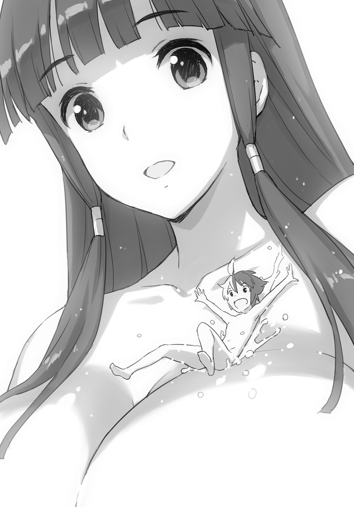
――ひょっとして、いけんじゃね？
皆も賛同を示した。
――勝てるかも？
――勝てる、勝てるよ。
――いけるよ。クレア・マウンテン。
――いけるいける。かてるかてる。よゆーよゆー。
――人類はついに勝てるかも？
――超生物にッ!?
ということで......。
改修が終わって、クレア・マウンテンのサイズでも入れるようになった第二試練場で、クレアと、生徒全員――最近加わったルナリアを含め一〇九人は、同じ地面のうえに立っていた。
「あのー。ブレイド君。ほんと......、無理にやらなくていいと思うよ？」
身長一六メートルの巨体が、数十トンもあるような神鉄の塊を、胸に抱えて、もじもじとやる。
「ん。」
対するブレイドは、生返事。
「みんながどうしてもやれっていうけど。私は、ほら、べつに、〝超生物討伐委員会〟とかゆーのに、入ってるわけじゃないし......」
「ん。」
ブレイドはまたも生返事。
皿を手に、カツカレーを立ち食いしていた。
「試合すんのは、べつに、いいんだけど......。ちょっと待ってくれるかな？ なんか皆に引っぱってこられてさー。おかわり、まだ三杯しかしてねーってゆーのに」
「三杯も食べれば充分でしょ。はやく始めなさいよ」
「おまえに言われたかないぞ。俺はおまえの十分の一も食ってねえ。――この腹ぺこ女帝」
「言ったわね？ カレー・ハンバーグ・スパゲティのお子様ランチ！」
「ハンバーグとスパゲティなんか、どうでもいいし。俺が食ってるのカツとカレーだし」
「だいたい、なんで、これからバトるっていうのに、ごはん、食べてくるんだか。あんた、ばっかじゃないの？」
「あー。そっか。べつに一週間ぶっ通しで戦うわけじゃないんだっけな。じゃ。食いだめしとかなくてもいいのか」
「ごめん。なに言ってるのかわからない。――超生物語じゃなくて、人間語で話してくれない？」
「おーい。クレアー。こいつ。この女。ちょっと。――ばっこんばっこん、ぶっ叩いてくんねー？ 土木工事的にー？」
ブレイドがスプーンでアーネストを指し示す。クレアは苦笑した。
ここ数日。クレアは巨人として過ごしていた。〝窓の外〟から授業を受けて、体を動かす教練のほうは、皆と一緒にはできないから、じっと動かず見学。
放課後には、足下に気をつけながら、王都のほうに出向き――。土木工事のお手伝いをやっていた。橋をかけたりするお手伝いをやった。
「ねー、ブレイド君。やっぱり、やめよー？」
「なによ。クレア？ やる気ないのね？」
「だって。私......。本気、出しちゃったら......。その......、ね？」
クレアは苦笑した。
巨人の暮らしに慣れて、わかったことがある。
自分は常に加減をしないとならないのだ。足下に気を遣わなければならないのだ。決して〝思いきり〟なんてやってはならないのだ。
いちど、山岳地帯まで出かけて行き――。人っ子一人いない、僻地の山脈の、壊しても誰も気づきもしない岩壁を相手にして、常に力をセーブしなければならない、その〝ストレス〟を発散してみたら――。
なんと。山の形が変わってしまった。
〝怪獣〟というものが、どういう立場なのか――。
クレアは、この一週間で、すごくよく理解した。
ブレイド君がいくら〝怪物〟扱いされているとはいっても――。
でもごめん。
私――。いま――。〝本物〟の〝怪獣〟なんだよ？
「じゃ、やるかー」
カツカレーを全部食べおわると、ブレイドは、気軽な声で、そう言った。
「試練場の魔力障壁は、全力稼働中よ！ 二人とも、思いっきり――おやりなさい！」
女帝が言う。国王に掛け合って国家予算規模の費用を動かしたに違いない。「かまわん。思いっきりやりたまえ。全責任は私が取る！」とか、あの覇王は、きっといつもの調子で、そう請け負ったに違いない。
「では――、はじめーっ!!」
合図とともに、クレアは、巨人の身長に見合う、巨大なメイスを構えた。
○ＳＣＥＮＥ・Ⅴ「ブレイド流・巨大生物の倒しかた」
「こういう、でかいやつはなー。まずー。こうやってー。転ばせるんだー」
と言いつつ、ブレイドは足払い。
「あうっ」
アキレス腱のところにローキックを食らって、クレアはよろっと、前に一歩を踏み出した。
「そしたら、こうだー」
ついた足に向かって、ブレイドが全体重をのせたタックルをかます。
ふくらはぎを抱え込んで、背負い投げの要領で――。
ずっだーん!!
クレアは投げられた。
どべし、と、前のめりに倒される。
力ではなくて、これは技だった。
身長では十倍、体重においては千倍の差があるのに、完璧な箇所に、完璧なタイミングで力を加えられると、巨人はバランスを崩して転倒させられる。
「そしたら、こうやって倒したらなー？」
倒れたクレアの顔の前に、ブレイドがいた。
「ド、ラ、グ......」
ブレイドは破竜饕餮の構えに入っている。
「ひ」
いくら十倍のサイズの違いと言っても、あんなの、無防備の顔面に食らったら......!!
「――なーんちゃって」
と、ブレイドは構えを解いた。
「どうだー？ わかったかー？ おっきいやつはー、こうやって仕留めるんだー」
皆のほうに、ブレイドはそう言った。
皆は、ふるふるふると、顎を左右に細かく震わせる。
「え？ なんだよ？ よく見えてなかったって？ そういや、倒したときに土埃あがってたしなー。よし！ もういっぺんやってみせるからなー！ こんどはちゃんと見てるんだぞー！」
ふるふるふる。
「さ。クレアー。立って立って」
クレアは立たされた。
こんどは、なにが来るかわかっていたので、きちんと身構えて、転ばされまいと――。
無駄だった。
前より勢いよく、前のめりに転ばされた。
顔を強く打った。はなぢが出た。自分で直した。
だれ？ 大きくなれば超生物に勝てるとか、そんなこと言ってたの？
無理だよ。無理でしょ？ 大きさとか、ぜんぜん、関係なかったよ？
今回の投げ技は、前とすこし違っていて――。
土煙がいっさい立たなかった。
「大きさは、それほど問題じゃない。大きいだけで、強くて勝てるんだったら、この業界、苦労しない」
ブレイドはそう言った。言い切った。
クレアは思い知っていた。
だよね。そうだよね。大きさ関係なかったね。
......けど、〝この業界〟って、どこの業界？
勝てるとか思っちゃって、ごめんなさい。
本気を出したらブレイド君が大変だから、やめよー、だとか、思いあがっちゃってごめんなさい。
もうしません。もうしませんからああぁ......。
「さ。クレア。立って。対巨獣用の技。まだ、いくつもあるんだー」
「いくつも......って、いくつくらい？」
「基本。四十八手っていわれてる」
「し、しじゅう......」
「ああ心配すんな。それ表のほうだけだから。四十八手だけなんてことは、ねーから。安心しろ！」
「しんぱいはしていないよ......？ あんしんなんて......、もっと、できないよう......？」
「まず、基本の表技に対して、対となる影技が、もう四十八手あるだろー、あと、基本以外に、朱雀、青龍、玄武、白虎、それぞれの系統の技が――」
「表の技だけで勘弁してください......。てゆうか。四十八手も？ 私一人で？」
「ああ、そうか。――おーい、クー。おまえもドラゴン形態になれー。四足獣向けの技もあるんだー」
「うわーい！ 親さまに〝躾けて〟もらえるのじゃー！」
魔獣の仔は、喜んでいる。
「ああ......。なんて羨ましい。わたくしも巨大化か巨獣化できたなら、ブレイド様の技の実験台にしてもらえますのに。......いえ？ 諦めるのは早いかもですわね。なにしろわたくしは天才。見れば――出来るようになるのかも？」
天才は、羨んでいる。
ドラゴン変態をするクーを、ルナリアが、じーと見ている。
天才だろうがなんだろうが、見ただけで人はドラゴンになれないと思う。
魔獣でも天才でもない、単なる「おっきいだけ」の〝人〟でしかない、クレア・マウンテンには、喜ぶとか羨むとか、そういった方面のリアクションは、ちょっと無理だった。
その日、クレアは、あと二十四回、倒された。
ごめんなさい。ごめんなさい。超生物に勝てるなんて思っちゃってごめんなさい。
第三話「ルナリアの悩み」
○ＳＣＥＮＥ・Ⅰ「昼の食堂にて」
昼で、食堂で、大混雑の時間だった。
いつものテーブルのいつもの席で、カツカレーを、がふがふとかきこんでいたブレイドは、「うんめー！ カツカレーうんめー！」以外の思考が、自分のなかに、ふっと湧いて――その正体を確かめるために、周囲に視線を送った。
「おー、ルナリアー、こっち、こっちー！」
料理を持ったプレートを手に、空席を探すルナリアを見つけて、ブレイドは、ぶんぶんと、スプーンを振りたくった。
思考に上ったのは、きっと、それだ。
《勇者イヤー》か《勇者アイ》か、それとも《勇者シックスセンス》あたりかが、困ってるルナリアを発見して、「カツカレーうんめー！」で忙しかった表層意識に、サインを送ってきていたわけだ。
ブレイドに呼ばれて、こちらに歩いてきたルナリアは――。
「あら？ どうやら満席のようですので......。わたくしは、どこかほかを探すことにしますわ」
――と、そう言った。
「ん？」
ブレイドは周囲を見た。
もともとこのテーブルは、〝アーネスト専用〟とされていたテーブルだ。
かつて、〝女帝〟として、アーネストがこの学園に君臨していたとき――。
〝ポンコツ〟ではなくて、きりりと吊り目で、肩肘張っていたとき――。
アーネストを恐れるあまり、このテーブルには、誰も近寄らなかった。
どれだけ混雑した昼時でも、アーネストは、その大きなテーブルで、いつも一人で食事をしていた。
そのテーブルは、いつのまにか〝アーネスト組〟と呼ばれるようになり――。いつのまにか満席となっていた。八人の定員に一〇人ぐらい座っているから、かなり、定員オーバーの状態である。
「こっちこいよー」
「もういっぱいのようですから。遠慮しておきますわ」
上流貴族の子女の、花の微笑みを浮かべて、ルナリアは答える。
「まーまー。ここ。ここ来いよ」
膝の上に載っていたクーを、ぽいっと、クレアあたりにパスして――。
空いたその〝席〟を、ぱんぱんと叩いて、ルナリアを呼ぶ。
「あほか！」
アーネストの肘鉄が、こめかみに入った。
「いてえな。なにすんだよ？」
「女の子、膝の上に誘う？ ばか？ ばかなの？」
「クーだって女の子じゃんか？ ......だったよな？」
「我はメスなのじゃー。女の子なのじゃー」
「クーちゃんはちょっとちがうでしょ。だいたいね。あんたいつもいつも――」
「あっ。......じゃあ私。どきますから。ルナリアさん。ここ。どうぞ。......魔王ちゃん。クーちゃんおねがい」
クレアが気を利かせて、お尻を浮かす。
クーがまたパスされて、こんどは、魔王の膝の上に行く。
同じ魔獣同士のせいか、この二人、わりと相性がいいっぽい。たまに二人っきりで話しこんでいたりして仲もいい。魔王もなんだかんだいって、「竜種の仔よ」とか呼びかけたりして、面倒を焼いてくれている。
「お膝の上へのお誘い。たいへん未練がありますけれど。淑女として、人前で甘えにいくわけにも参りません。それでは失礼します。ブレイド様。皆様。――ごきげんよう」
ルナリアは、行ってしまった。
ルナリアは、食堂のおよそ反対側くらいの場所で、窓辺の席をみつけると――。一人で、ぽつねんと、食事をはじめていた。
「......うぉい、こら、ブレイド。ちょっと聞いてるの？」
女帝が、おどつきあそばれた。
どつかれて、ブレイドは、気がついた。
なんか、アーネストは、ずっと、お小言を言っていたっぽい？ 具体的にいうと、ブレイドが「膝の上にこい」と言ったあたりから。
「おわった？」
「終わってないわよ。まだまだ言うことは――」
聞かないことにした。《勇者イヤー》は、遠方の小さな物音も見逃さないが、近距離の大音響を聞かなくすることもできるのだ。
アーネストに、がーがーとまくしたてられつつ、ノイズはいっさい聞かずに、ブレイドはルナリアのことを考えていた。
彼女は、このあいだの他校との交流戦で、アーネストと壮絶な「引き分け」をしたあと、なんでか、うちのガッコに通うことになった。
〝特別留学生〟とかいうらしいのだが――？ どういう意味だろう？
一般常識に疎いことにかけては、すこし自信のあるブレイドには、どーゆー意味なのか、まったくわからない。
まあ〝トモダチ〟であることには変わりはなく、〝トモダチ〟でありさえすれば、あとのことは、すべて、ブレイドにとっては、〝些細〟なことなので――。
まあ。どうでもよかったが。
一人きりで、ぽつんと、食事をしているルナリアを見ると、なぜか、無性に放っておけない気分になる。
彼女がどうして他人と交わらないのか、たぶん、ブレイドは正確に理解している。
「――って、これで話は全部だけど。わかった？ ブレイド？」
「ああ。わかってるよ」
ぜんぜん〝わかった〟どころではなくて――。そもそも、聴覚から締めだして、聞いてもいなかったのだが――。
ブレイドはとりあえず、うなずいておいた。
重要なことは、きちんと、わかっている。
「なに？ ......ルナリア見てんの？」
「ああ。一人で食ってること多いなー、って」
「いつものことでしょ」
「気になるんだよ」
「なんでよ？」
「昔のおまえみたいだろ。一人飯」
「ひ、一人飯......って！ ちがうから！ 私！ 食堂で一人で食べるの苦しいからって！ いっそトイレで食べようだなんて！ 思ったこと一度もないからっ！」
〝一人飯〟のところに、なにかアーネストが超反応している。
「おまえのこととか、どーでもいいだろ。いまはルナリアの話だろ」
「どーでもいいって、言われた......」
しばらく二人で、食事を続ける。
ブレイドはカレーの海の中からカツを拾って、ひょいぱくと口に運び――。
アーネストのほうは、特別製の大きなスプーンで、あきらかに一口分を超えた量を、魔法のように口の中に移して、馬盛りチャーハンを、端から〝欠損〟させて、〝消失〟させていた。
チャーハンを終えて、バケツのグラタンに取りかかったところで、アーネストが、ブレイドに言う。
「気にしなくていいのよ。あの子。いつだってそうなんだから。天才なんだから、慣れてるんでしょ。凡人は自分とは種が違うぐらい思ってるでしょ」
「おまえ。ひどいこと言うよな」
「えええええっ？ せ、精一杯、気遣ったんですけどー!!」
「だめだな。ぜんぜんだ」
一般常識に疎い自分でもわかる。いまのは〝一般的〟に言っても、かなり、ひどい。
でもちょっと自信がなかったので、ちら――と、皆を見る。
うなずき返してくる顔があったり、腕組みして、ひっどいわねーと呆れている顔があったりして、ブレイドは自信を深めた。
「わ。私のはっ――そ、そうよ！ 信頼！ 信頼なんだから！ あの腐れ天才――じゃなくて！ ルナリアは、ぜんぜん、あんなの平気だから。ぴんぴんしているんだから。なんてったっけ？ 憎まれっ子世にはばかる？ だからつまり――！ そういうふうに〝信頼〟してんの！」
「天才って、けっこう、脆いもんだぞ？」
「えっ？」
アーネストはスプーンを止めてしまった。
ブレイドはなにも言わず、一人飯をしているルナリアを、ただ遠くから眺めた。
○ＳＣＥＮＥ・Ⅱ「試練場にて」
ブレイドがルナリアを気に掛けるようになって、数日が経った――。
ある日の午後の実技教練の時間――。
「ブレイド様、教えていただけますか？」
「ん」
ルナリアがやってきて、そう言った。ブレイドは気のない返事をした。
「すこし、剣を教えていただいて、いいですか？ もう一次元、高みへと至る道を模索しているのですが、少々、迷っております。ブレイド様の瞑想のお邪魔をしてはいけないと思いはしましたが、学べる機会を失うことは良くないと思いまして。――わたくし。貪欲ですの」
ブレイドの手を取ってきて、パンチも撃てないぐらいの近距離に踏みこんできて、ルナリアは普段よりも、妙に言葉多く、そう言った。
ちなみに、瞑想していたんじゃなくて――。ただ、ぼーっとしていただけ。腹の中のカツカレーがこなれるのを、待ってただけ。
「ねえ。ブレイド様？」
捕まえられた手が、ぶんぶんと振りまわされる。
なんだか、ルナリアは、妙に甘えてくる。
こーゆーの、クーがよくやる。「かーまーえー！」って、よくやってくる。アーネストもたまにやる。
なんでだろ？ と、考えてみたら――。
ああ――。と、すぐに理解に至った。
「もうすこしまともな教官を置いてくれればよいのですけど。......わたくしが教わることのできるのは、ブレイド様かディオーネ将軍だけなのですが......。将軍は剣をお使いになりませんし、なにしろあの性格ですから......。大雑把といいますか、理論派でないといいますか」
「教わることがなければ、教えてやればいいのに」
下級クラスの生徒たちを見ながら、ブレイドは言った。
ルナリアなら、剣も魔法も、上級クラスの生徒たちにさえ教えることができるだろう。
「その発想はありませんでした」
ルナリアは片手を口にあてて、驚いた顔をしている。
ないのか。
うん。ルナリアらしいかな。
「あー、もー！ あんたすぐ！ ブレイドのまわりを、ちょろちょろして！ ブレイドはあんたのものじゃないんだからね！ すこしは遠慮しなさいよ！」
ルナリアと話していたら、試練場の端のあたりから、アーネストが、ぴゅーっとすっ飛んできた。
ブレイドとルナリアの真ん中に割り込んで、手を左右にぐーっと突き出して、二人の距離を取らせようとする。
邪魔だな。こいつ。――とか、一瞬思ったが。
すぐに思い直して――。
「ちょうどよかった。アーネスト。おまえも一緒に練習しようぜ」
「へ？ 私？」
「そう。おまえと、俺と、あと――ルナリアとで」
「ブレイド様、わたくしは――」
「ちょ！ ブレイド！ なんで私が――」
ブレイドは、言った。
「おまえたち、レベル、だいたい揃ってるし」
「天才のわたくしと！ こんな駄犬を一緒にしないでいただけます!?」
「こんないけすかないビッチと一緒にしないでよ!!」
ブレイドは、言った。
「気もぴったり合うし」
「どこがですの!!」
「どこがよ!!」
ブレイドは、言った。
「二人でかかってくれば、けっこう、いい感じになるんじゃないか？」
「え？ わたくしと......アーネストで？」
「二人で......ブレイドを？ 倒せる？ 倒しちゃう？ できる？ やれる？ イエス、ウィーキャン？」
「アーネスト――、ヘマ打ったら承知しませんことよ」
「それは私のセリフよ。凡人の足を引っぱったら、天才の看板下ろしなさいよね」
二人は瞬間的にスイッチが入った。なんかものすごいやる気になっている。
ほーら、だから言ったろー。二人は〝凄く気が合う〟って――。
二人だったらコンビが組める。
ルナリアが認めて、〝信頼〟している相手は、ブレイドのほかにもう一人だけいる。
それがアーネストなのだった。
「魔人化は、なしだぞ。――おまえら大技とパワーに頼りすぎ」
ブレイドは二人に向けてそう言った。ハンデを背負わせたのではない。むしろ逆。〝本当の本気〟を引き出すために、あえて〝得意なもの〟を取りあげたわけだ。
そして自分のほうは、下級クラスの平均スペックに、気と力とスピードを、すべてセーブするつもりでいた。
まだ腹の中のカツカレー、こなれてないんだがなー。
ぼんやりと眠くて、お昼寝日和なんだがなー。
まー、半分、昼寝しているぐらいの〝集中力〟と、下級クラスの平均スペックの身体能力とで、〝本当の本気〟になった二人相手で、〝ちょうど〟かなー。
◇
......結果。
やはりちょっと過大評価が過ぎたらしい。
「きゅう......」
「ごめんなさい......、ごめんなさい......、るなりあは......わるいこでした」
二人は畳んで重ねられていた。
ほどよく盛りあがったお尻のところが、いい感じの〝枕〟に思えたので――。
ブレイドは、ごろんと寝転がって〝尻枕〟で休んだ。
ん。昼寝日和だ。
○ＳＣＥＮＥ・Ⅲ「テルマエにて」
「あー、いい湯よねー。思いっきり動いたあとの、風呂って、サイコー」
ぐーっと、腕を高くあげて、背筋を思いっきり反らせて、アーネストは言う。
上がった腕に吊られて、ぐーと持ち上がってゆくおっぱいを、ブレイドは見ている。
「陛下も、いろいろアレだけど、風呂に関してだけは、正しいこと言ってるし、正しいことやってるわよねー」
混浴風呂に関して、はじめ、アーネストが、ギャーギャーとうるさかったことを、ブレイドはしっかり覚えているのだが――。
きっとアーネストは覚えていないんだろうな、と、ブレイドは思った。
「ね、ねえ？ アンナ？ 不敬......じゃないかなっ？」
クレアが困ったような笑顔で言う。
「え？ なによクレア？ 不敬？ なにがどれが？ 誰に対して？」
昔々、国王のことをディスると、すぐに「不敬」とか言ってきていたアーネストであるが......。やはりそっちも覚えていないんだろうな。
「でも、アンナとルナリアの二人がかりでも、やっぱ勝てないのねえ」
クレアの形のいいおっぱいから、イェシカのやや固そうなおっぱいにブレイドは目を移した。
なんでか、最近、自然とおっぱいに目がいってたりするんだよな？
なんでだろう？
「あたし、今日はちょっと期待しちゃったんだけどなー。ほら。アンナとルナリアの二人が、一緒に戦うのって、今回、はじめてだったでしょ？ ガチンコの斬り合いと、ガチンコの殴り合いは、しょっちゅう二人で、廊下でも試練場でもやってるけど」
「ちょ――イェシカ？ そんな、いつもなんて、やってないわよ？ 週に一回くらいよ？」
「うそうそ。三日に一回はやってるでしょ。......それとも、二日に一回かな？ ......どう思う？ ソフィ？」
「よくわからないわ。数えてみたことないもの」
「ぜひハイスペックな私にご用命を。任意の小数点以下の位数統計データの提供が可能です」
ソフィの「小」おっぱいと、イオナの「大」おっぱいと、つぎつぎに視線を移してゆく。
「ね......？ どうだった？」
「うふふふっ。......よかったー」
イェシカが聞く。アーネストが答える。
女子の話というものは、たまになんか淫靡な感じになったりするが、話題はあくまでも、「ルナリアとの連携プレイ」の話である。
ぜんぜんまったく妖しい話題ではない。
「こんどあたしもまぜてくれないかなー？ ３Ｐなら、やっつけられない？ まだ足りない？」
「計算では８Ｐであってもマスターを満足させることはできないと思われます」
「うわお。スゴイのねー」
誓って言うが、妖しい話題ではない。何人で連携すれば倒せるかという話だ。
八人っつーと、誰と誰だ？ アーネストとルナリアと、イェシカ、クレア、ソフィに魔王にイオナに......、あと誰だ？ ああイライザまで入ってるわけか。
全員でかかってこられて、あのレベルの連携をされたら、半分居眠りしながらやってたら、そりゃ、倒されてしまうかもなぁ。
前に、お姉様部隊を相手に、12Ｐだか13Ｐだかで、一時間ほど粘ってみせたことがある。現在の一八パーセント制限だと、頑張っても、そのあたりが限度だ。国王親衛隊のお姉様方は、全員、〝現役〟の準英雄級だし。
と、どうでもいいことを考えていたブレイドは、なにか寂しいものを感じていた。おっぱいが足りない。
イオナのおっぱいが「大」としたら、それを超える「特大」が存在していて――。
「ん？ どこ見てんのブレイド？ あんたを倒す話をしてんだから、ちゃんと聞いて――」
アーネストが言う。ブレイドの見ている先に目ざとく気づいて、言葉を止める。
ルナリアは、皆からも誰からも離れて、遠くで一人――ぽつんと湯に浸かっていた。
「あっ――ちょ、どこ行くのよ？」
ブレイドは立ち上がった。アーネストの声を背に受けて、歩いてゆく。
「あら。ブレイド様」
穏やかな目で、ルナリアはブレイドを迎える。
掌で湯をすくい、肩口から体にかける。肩口から流れ落ちる途中で、湯は胸の合間に集まる。
うん。やっぱ。おっぱいはルナリアが一番「特大」だな。
最近、男子の目が、なんかおっぱいに向かう、その理由が――わかってきたようなブレイドであった。
「昼間は期待に添えなくて申し訳ありませんでしたわ。蛮族の小娘が、わたくしの足を引っぱってきまして。もし、また〝夜の特別コーチ〟をつけていただければ、もう一、二段階、ささっと進化してみせる自信はありますことよ？」
夜の特別コーチというのは、特に妖しいことではなくて、特訓メニューのことである。
前回は惨殺を繰り返した。何度も何度も、彼女のことを、殺して、殺して、殺し抜いて――死ぬことに〝とりあえず〟慣れてもらった。
「死線超える程度じゃ、おま、もうそんな急激にレベルアップしねーぞ？」
「あら？ それではこんどは、どんな酷い特別訓練をつけてくださるんですの？」
「うーん......。ま。そのうちな」
ブレイドは曖昧に約束した。いまはその件で来たのではない。
「ところで俺。おまえに聞きたいことがあってさ」
「なんでも聞いてくださいませ。ホクロの位置まで教えられますことよ？ ええもちろん。わたくしの伴侶となっていただいた暁には、すべて知ることになるわけですけれど」
「いや。ホクロとか。どーでもいいから」
「そ、そうですの......。ど、どうでもいい......」
ルナリアは、がくりと、気落ちしている。
なんか会話に失敗してしまったみたいだが、ブレイドには、ぜんぜんその理由がわからない。ホクロの位置とか？ ほんと？ どうでもいいよね？
「それよりさ。聞いておきたいんだけど。......おまえ。一人でいるの、好きなん？」
「えっ？ なんですの？」
「だから。いつもだいたい、一人でいるだろ。飯のときは一人飯。修練のときには一人練習。今日はアーネストと二人でコンビだったけど。......それで風呂のときにも、一人風呂だろ？」
「......いまはこうして、ブレイド様と二人きりですわ」
ルナリアはそう言った。
頰がうっすらと赤く染まって見えるのは......、湯に浸かっているせいだろうか。
「いや。そうじゃなくて。それはどうでもよくて」
「ど、どうでもいい......」
ルナリアはまたショックを受けている。どうやら「どうでもいい」は彼女にとっては禁句らしい。ブレイドは超学習した。
「おまえは、一人でいるのが好きで、ひとりぼっちでいるのか。それとも、そうじゃないのかが、知りたいんだ」
ブレイドはそれを聞いてみた。
クーのときには、自分の思いこみで、確認せずにいて――それで大失敗した。
竜種は孤独が大好きなので、クーもそうだと思っていた。だがじつは皆とトモダチになりたくて我慢していたのだった。あとで知って、大後悔することになった。
同じ失敗は、二度と繰り返さない。
「で、どうなん？ おまえ、お一人様、好きでやってんの？ それとも、輪に入りたくて、悶々としてんの？」
「も、悶々......って......。それ、なんか嫌な感じの二択なのですけど」
「どっちなんだよ？」
「答えなければなりませんか？」
「ああ。命令だ」
ん？ これはソフィ向けの方法だったか？
しかしそれは、ルナリアにも効果を発揮したようで――。
「し、仕方ないじゃありませんか......。だ、だって......わたくしが、〝対等〟と認められる相手は、ブレイド様とあの娘ぐらいしかいないのですし......。ええまあ、〝認めている〟とはいっても、あの娘の場合には、足下を這いずるカタツムリぐらいの認識ですけれど。ふふっ......。まったく動いていないようでいて、見ていると数センチ動くんですよ。目を離していると一メートルも動いていたり。......ご存じですか？ カタツムリ」
「うん？ 美味いよな」
「は？」
勇者時代に、野戦のときに、〝おやつ〟でよく食べた。
それよりも――。
「いまの答えって、どっち？」
「どっち、って？」
「イエスなん？ ノーなん？」
「答えたではありませんか」
「わかんねーよ。カタツムリは、うめーけど」
「じゃ、じゃあ......。もう一回、はっきりと、申しあげますけど......」
「うん」
「え、ええと......、つまり......」
「つまり？」
「ですから......」
「ですから？」
「その......」
「その？」
ブレイドは、辛抱強く、待った。
ルナリアは、恥ずかしそうに――。
とてもとても、恥ずかしそうな顔で――。
「お友達......、ほしいです」
○ＳＣＥＮＥ・Ⅳ「トモダチ作戦」
「まかせておくのじゃー。我はー。経験者なのじゃー。この道の達人なのじゃー」
風呂からあがったあと――。
クーと、ルナリアと、三人で――ブレイドの部屋へと戻ってきていた。
ふんふんと、得意げに鼻息を放っているクーの――その髪の毛を、ルナリアが、タオルでこしこしと拭いてやっている。
「あの......？ ブレイド様？ 侍女はおりませんの？」
「おまえ。どこのお姫様だよ」
元勇者でも、いまのはわかった。
髪を拭くのは侍女の仕事では？ ――と、そう言っているのだ。
やっぱ。こいつ。かなり。常識がない。
そういや、まえに、どこかの国の〝姫様〟とかゆーのを助けたときに、同じこと言ってたっけなー。〝侍女はおりませんの？〟と、荒野のどまんなかで、きょろきょろとしていたっけなー。国に送り届けるまで、大変だったっけなー。
「我は異種族交流の第一人者なのじゃー。だから具体的には、もっと、かーまーえー。髪を拭いたら、つぎは、ごろごろーってやるから、ぎゅーってするのじゃー」
「意味がわからないのですけど」
「こいつ。なにかにしがみついてないと寝れないんだ。背中、とんとんやってやると、すぐに寝るから」
「は、はぁ......」
幼女の世話は、人生初の体験だったが――。
ルナリアは、おっかなびっくり、クーの髪を梳かして、添い寝してやって、背中をとんとんとやってあげていた。
「ぎゅー」
「は、はぁ......。ぎ、ぎゅー」
「とんとん、するのじゃー」
「は、はぁ......。とんとん」
「ぐう」
「はやっ！ あの。ブレイド様？ ......これで本当に、解決するんですの？」
「まあ。うちの愛娘にまかせておけって。――専門家だ」
クーに抱きつかれて動けないルナリアに向けて、ブレイドは、ウィンクをひとつした。
○ＳＣＥＮＥ・Ⅴ「勝負なのじゃー」
「勝負なのじゃー」
廊下で腕組みをして、クーが仁王立ち。
それを見習って、ルナリアも仁王立ち。
セコンドとしてついているブレイドも、なんとなく、仁王立ち。
「へ？ だれと？ 俺と？」
たまたま通りがかった犠牲者一号――カシムは、自分の顔を指差して、周囲を見回した。
もちろんほかに誰がいるわけでもない。
「し、勝負って――、なんだよ？ オレ、あんま戦闘に自信あるほうじゃないぜ？」
「勝負は、どんな勝負でもいいのじゃー。カシムの最も得意なことでいいのじゃー」
「オレの得意なこと？ なんでもいいの？」
「なんでもいいのじゃー」
「えーっと？ じゃあ......、あれかな？ 女の子を惚れさせちゃう魅力勝負とかっていうのは――」
「ブッブー！ それは〝なりたいもの〟であって、〝得意なもの〟ではないのじゃー。そしてカシム。其方は決して、〝なりたいもの〟にはなれないのじゃー」
「あー、ひっでぇー！ じゃあ、オレの得意なことって、なんなんだよ？」
「我は知ってるのじゃ。カシムは......、すりぃさいず？ ――とかいうのを、当てるのが、スゴイのじゃー！」
「へ？ スリーサイズ？ そんなもので勝負して、どーすんだ？」
カシムが言う。クーは、そのカシムに対して――。
「カシム。――我は？」
「68－52－71」
「あたりなのじゃー！ ......では、ルナリアは？」
「96－57－92」
「なっ......!?」
ルナリアが体を押さえて、顔を赤くする。
リアクションからすると、当たっているっぽい。
へー、と、ブレイドは感心して、カシムを見た。
元勇者として、ブレイドも、一瞥しただけで相手の戦闘力を計る技術は身につけている。スリーサイズを計るカシムのそれは、いわば、女子戦闘力の計測技術といったあたりか。
カシムのほうは、「なに？ なんで驚いてんの？」とかいうカオ。ぽかんとしたカオ。
しかも〝無自覚〟だ。自分が凄いことをやっているという自覚さえない。技もすごいが、無自覚なのが、もっと凄い。完全な〝天然モノ〟がここにいた。
真の〝才能〟というものは、本人にとっては、まったく自覚のないものなのだなぁ。――と、ブレイドは、しみじみ、思った。
「い......、いいですわよ！ それで勝負いたしましょう！ ふっ――わたくしは天才。いちど見た技は、大抵、覚えることができますわ！ 天才舐めるんじゃないですわ！」
勝負が、はじまった。
全校生徒のうち、だいたい、半分くらいは女子である。さらに学園に常駐しているお姉様部隊の一二名とか、学食のオバちゃんとか、計りに計って、結果は――。
カシム、六五回中、六五回的中。
ルナリア、六五回中、五回的中。（ただしスリーサイズをもともと知っていた不正疑惑の件が四件あり）
天才。だめだった。
六五回見ても覚えられなかった。
口先だけだった。
「ま、負けましたわ......」
「べつにこんなんで勝っても、うれしくもなんともねーんだけど......。俺、もう行ってもいいのかな？」
「おー、ありがとなー」
ブレイドは手を挙げてカシムを見送った。
最後まで結局、カシムは、自分の〝凄さ〟を自覚しないままで終わった。
スリーサイズを当てて回ったことで、女子からの評価は、数万ポイントほど下がったが――。もともとゼロなので、そこもゼロのままで、なにも変わっていない。
「負けましたわ......、て、天才のわたくしが......」
ルナリアは、まだ手足をついたままで、立ち上がれずにいる。
「ほーら、立てー、つぎいくぞー」
「え？ ......つぎ？ ......いえあの？ わたくし、いま、敗北を味わっているところで......？」
「一〇八人に負けて回るんだから。もたもたしてる暇なんかないぞー」
「え？ え？ え？ 一〇八人......？」
立ち上がらないルナリアを、スカートとパンツを一緒に引っ摑んで、ずるずると後ろ向きに引きずっていった。
◇
「え？ 俺の得意なこと？」
つぎの対戦者は、クレイ――。
クレイは腕組みをして、しばらく、うーん、うーん、と、唸っていた。
本人が〝得意〟と思っていることは、じつはそんなにたいしたことでもないことが多い。じつはむしろ〝弱点〟だったりして、「得意だ」と思いこんでいるそれは、希望ないしは願望であることが多かったりする。
......であるのだが、いちおう、最初に一発は、聞いておく。
「ああ。そうだ」
ぽん、と、クレイは手のひらを打った。
「俺。土ダンゴの硬さには、ちょっと、自信あるぜ？」
にやりと、不敵な笑いを浮かべる。
「土ダンゴって、なんだ？」
「なんですの？」
「クレイ。説明するのじゃー」
クー隊長も知らなかったことだったらしい。
「あれ？ 遊ばないか？ ......子供のころに、やったりしてないかな？」
クレイは言う。まるで「知っているのがあたりまえ」的な感じで言う。
「いやー。俺。まともな子供時代過ごしてないから。そこ。俺。自信あるから！」
「貴族の遊びには、ありませんわねぇ......？」
「ドラゴンの遊びにもないのじゃー」
「ああ。すまん。俺が悪かった。なんかすっごく悪かった」
誠意をもって謝罪されてしまった。
「教えてくれればいいんじゃね？」
「そ、そうですわ！ どんな勝負かわかりませんけど！ 一度見せてもらえれば、それで充分ですわ！ わたくし――天才ですもの！」
「あそぶのじゃー」
「おう。じゃあ行くか――。いい砂といい土を探しに」
「土？ え？ あの土？ 天才が――土いじり？」
「おー！」
「おー、なのじゃー！」
◇
「よーし、じゃあぶつけるぞー」
「ちょ――ちょっと待ってください!? そんな黒光りしたの――反則ですっ！」
「がっつーん！」
「あはは！ がっつーん！」
「がっつーん、なのじゃー！」
皆の作った土ダンゴを、ぶつけ合う。
クレイの黒光りする土ダンゴは最強だった。ほかの三つをあっさりと粉砕してのけた。
「うははは！ 負けたー！」
「まけなのじゃー！ クレイ！ すごいのじゃー！ きゃー、だいてー、なのじゃー！」
「ま......、負けましたわ......、また......負けた......、天才が......、わたくしが......」
ブレイドとクーは喜んでいて、ルナリアは砂場に両手足をついて、また落ちこんでいる。
「じゃー、クレイー、またなー！」
「ああ！ いつでも来い！ チャンピオンは、いつ、誰の挑戦でも受ける！」
「さあ、つぎいくぞー。あと一〇六敗あるからな――」
パンツとスカートを引っつかんで、ずるずると、引きずっていった。
「も――、もう......負けるのは、いやですうぅぅ......、わ、わたくしはっ――、天才なのでえぇぇ......」
ルナリアはなんか言ってたが――。
ブレイドは、無慈悲に引きずっていった。
とりあえず、あと残り、一〇六人、全員に負けきってから――話は聞く。
○ＳＣＥＮＥ・Ⅵ「敗北」
来た。見た。負けた。
負けて、負けて、負けまくった。
兵オタ知識で負けた。
あらゆる国のあらゆる兵器の、データのみならず、採用年式からモデルチェンジの経緯まで、すべて知ってる剛の者がいた。ルナリアも、将来は「将軍」になることが確定事項の天才優等生として、おもだったものは知っていたが、軍オタの巨人には、到底、敵うはずもなかった。
セミキングに負けた。
木に留まっているセミを、ひょいと、手を伸ばして簡単に捕まえてしまう特殊技能の持ち主がいて、〝セミキング〟と呼ばれていた。
ブレイドはけっこう出来るようになったのだが、ルナリアは、勘が悪くて、最後の最後まで、セミにションベン引っ掛けられまくっていた。
特売対決でも負けた。
どこの店が一番安いか。最小貨幣単位の一の桁をもって争われる、熾烈な世界があることを知った。そして当然、〝その世界〟では、天才は役立たずだった。
「最後。おまえなんだけど」
と、ブレイドは、ルナリアを引きずって、アーネストのもとを訪れた。
「え？ なに？ なんかへんなことやってるって、噂になってるわよ？ ――で、なに協力すればいいの？」
「なんか。勝てるやつ。おまえの得意技」
「得意技って言ったって......、ルネって......、ほらっ、天才だしっ......」
「そうですわ！ 天才ですわ！ 天才のこのわたくしが、蛮族のこんな小娘に負けるはずがありません！ この女にだけは負けてはならないのです！」
ルナリアが急に復活した。
ひきずってやらないと動けなかったのだが、しゃきっと自分の足で立って、アーネストを睨みつけている。
「大食い勝負でいいんじゃね？」
「えーっ？」
「ひっ......!?」
ルナリアが息を吞んでいる。
蒼白な顔で、小さな声で、「だめ......、それだけはやめて......」とか、つぶやいている。
「あー、じゃー、ガマン大会とかって、どうかな？ 私、結構、自信あるんだからー？」
アーネストは、明るい自慢顔で、からからと笑った。
「痛いの、暑いの、辛いの、かゆいの、くすぐったいの――、なんでもいいわよ？ どれにする？」
「ひいぃぃぃ」
ルナリアは、引き攣って裏返った声をあげた。
精神的怪物と定評の高い、アーネストである。彼女の言う「我慢」とは、いったいどんなレベルの壮絶な我慢となるのか。
「じゃあとりあえずここからねー」とか、最初の一段階目のステップが、常人であれば三秒くらいでおかしくなるあたりからスタートする、ハードなんて余裕で超えて、ナイトメアモードの「ガマン大会」であろうことは、想像に難くない。
元勇者も、そっち方面で、ちょっとアーネストに勝てる気がしない。
アーネストと「我慢比べ」とか――、冗談じゃない。
ぞっとする。
そして〝天才少女〟の場合には――。
「ヒイィィィ！ ――いやあぁぁぁ！ 痛いのいやぁ！ カユイのいやぁ！ イヤアアアァ！ ――棄権！ キケン！ きけんしますうぅぅぅ......」
靴を脱ぎ散らかして、全力で逃走していった。
文字通り〝裸足〟で逃げていった。
敵前逃亡。戦ってもいないうちから負け。
最後のアーネストとの対戦では、すごい「負けっぷり」をみせた。
○ＳＣＥＮＥ・Ⅶ「トモダチ......？」
朝で、食堂で、大混雑の時間だった。
「あ、あの......。お、おはようございます」
「あー、おはよー。ルナっちー」
「る、るなっち......？」
下級クラスの端っこに在籍する少女から、〝愛称〟で呼ばれて、ルナリアは目をぐるぐるさせている。
あの相手には、「あやとり」とかいうので負けた。天才なので紐芸は見れば一回で覚えるのだが、見てもいない技を次々と繰り出されては、さしもの天才も敗北を喫することしかできなかった。
「ソーセージ、いる？」
「あ......。はい。一本」
「はい。一本」
「あ、ありがとうございます......」
あちこちから声をかけられて、あちこちに声を返して――。
はじめは、愛称をもらうたびに目をぐるぐるさせていたルナリアであったが――。そのうちに、「おはよう♪」と明るく返事をして、微笑みを浮かべられるようになる。
そのくらいの頃合いを見計らって、ブレイドは、ルナリアの背中を、ばっしーん、と、ぶっ叩いた。
「楽しそうじゃん」
「え？ あの。ブレイド様――。た、楽しんでなんて、お、おりません」
ルナリアは、そこらの娘みたいな笑顔を、きゅっと引き結んで――いつものクールな天才のアルカイック・スマイルを浮かべてみせる。
「皆にいっぺんずつ負けて回って、クーみたいに、皆を認められるようになったよな」
「ええ。はい。なんの役に立つのかもわからないダメスキルばかりでしたけど。負けました。敵いませんでした。そして認めるようになりましたわ」
ルナリアは穏やかな声で言う。
強がりでも負け惜しみでも皮肉でもなく、しっかりと〝事実〟として受け止める響きが、そこにはあった。
「これで皆のこと。もう。ちゃんと〝人間〟に見られるようになったろ」
「もうっ。そういう嫌味な言いかたは、やめてくださいませ。わたくしは以前から、きちんと、皆様を人間と認識しておりました」
「おまえの世界には、これまで、〝人間〟が、二人しかいなかったんだよ。俺とアーネスト。――この二人な」
「あら？ 僭越ながら申しあげますけど？ ブレイド様？ 貴方は〝人間〟ではなくて超生物の側ですわよ？」
「超生物ー！ やーめー！」
ブレイドは、その場で、地団駄を踏んだ。
一本、取られてしまった。くやしい。
いま！ せっかく！ いいこと言ったのにー！
「でも......、ほんと、そうですわね......。わたくしの決して敵わないスキルを持った方々が、こんなにたくさん......」
「べつに、こいつらに限ったことじゃないぞ？ 街のみんな。どんなやつでも、戦える人も、そうでない人も、だれもかれも、たった一人の例外もなく、みんな、凄いやつだぞ？ きっとなにかしら、おまえの勝てない、なにかを持ってるぞ」
ブレイドは、そのことを、知っていた。
勇者であったブレイドは、そのことを知っていた。
勇者は、だからこそ、戦っていたのだ。戦うことができていたのだ。
「おまえはこれまで、世界にたった一人だったのかもしれないけど。もう――そうじゃないだろ？ 世界には〝人間〟がいっぱいだろ」
「え......、ええ......」
ルナリアは目を大きく見開いて、周囲を見ていた。
「ほんと......、本当に......」
大きく開かれているその目から、きらりと光るものがこぼれだして、頰と顎を伝って、ぽたぽたと垂れる。
「えっ？ いやだ――わたくし！ なんで泣いて――見ないで。ブレイド様！ 見ないでくださいまし！」
ルナリアは涙を抑えようとするが、それは止まることなく、ますます勢いを増して――。もはや「ぽたぽた」ではなくて、「ぼたぼた」という感じで――。
「あー！ 泣かした！ 泣ーっかしたーっ!!」
周囲から大合唱が起きた。
ブレイドは急に皆から責め立てられて、おろおろと、うろたえた。
「ち――ちがう！ 俺が泣かしたんじゃないから！ 勝手に泣き出しただけだから！」
「泣いてません！ 泣いてなどおりません！ この天才のわたくしが！ 人前で涙など見せるはずがありません！ ええい！ 泣いてないって言ってますのに！」
「泣ーかした！ 泣ーかしたぁ！ いーけないんだー！ いけないんだー！」
「ちがう！ 俺はなにもやってない！ 普通！ 普通！ ふつうのことやってただけだからっ！」
「ええい！ 泣いていませんとゆうのに！ これは心の汗ですわッ!!」
皆の大合唱と、ブレイドの言いわけと、ルナリアの否定とは、いつまでも続いた。
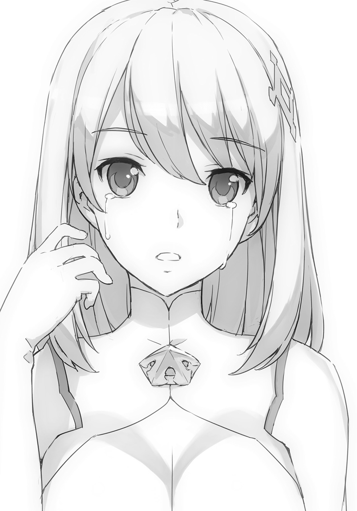
第四話「普通人の生活」
○ＳＣＥＮＥ・Ⅰ「朝」
「もうっ！ いつまで寝てんのよ！ バカブレイド！ 起きなさいよ！」
いつもの朝......に比べると、ちょっとばかり騒々しい、朝だった。
アーネストの声に叩き起こされたブレイドは、めんどうくさそうに、布団を引き寄せて――。
「う～ん、あと五分～」
「却下！」
却下されてしまった。
アーネストはいっつも、おこりんぼだ。
「おまえ～、騒がしいよ～」
ブレイドは布団を引き寄せて、カメの構えに入った。
惰眠をむさぼるという行為は、勇者時代には決して許されなかった贅沢で――。
つまり、具体的には、あと五分......。
「なによその言いぐさ。こうして毎日幼なじみが起こしに来てあげてるのに！ 美人でカッコいいアーネストさんに起こされるなんて、光栄に思いこそすれ、迷惑だなんて言ったら、全校生徒からバチをぶつけられるわよ！」
そこー？ 美人とか、自分で言うかー？
てゆうか......。ん？ 〝幼なじみ〟って、なに？
「はやく下に降りてきなさい！ クーちゃんはもう起きてるわよ！」
そういえば、クーのやつがいないな。......いつも布団のなかにいて、俺より寝ぼすけなのに。
そうか。もう起きているのか。
「はやく来なさいよね！ お父様、お母様も、食卓で待ってるんだから！」
アーネストの声が遠ざかってゆく。ぱたぱたと階段を降りてゆく音。
ん？ そんな近くに階段なんてあったっけ？
......あと？ お父様？ お母様？
ブレイドは、ぱっちりと目を開いた。
のっそりと起き出して、周囲をぐるりと見回して......、そして途方に暮れた。
......どこ？ ここ？
見慣れぬ天井、見慣れぬ部屋。
......そういえば、アーネストも、いつもと違う服を着てた。
いつもの学園の制服（女帝仕様）ではなくて、なんか変な感じの制服を着てた。
......なんなんだ？
◇
妙に狭苦しくて、こぢんまりとした造りの建物内を、すぐそこにあった階段で、階下へと、降りていった。
「おはよう。ブレイド」
国王がいた。ガウンを着て新聞を広げている。
「おはようブレイド。お寝坊さんですね。パンにしますか？ ご飯にしますか？」
そう聞いてくるのは、エプロンを着けた――セイレーン女史。
小さなキッチンで料理をしている彼女は、なんか、〝お母さん〟って感じがする。
「えーと......、あの？」
「なんだねブレイド？ 愛するパパに、おはようとは、言ってくれないのかね？」
「いや？ あの......？」
ブレイドは目をぱちくりとするばかり。
愛するかどうかは置いといて......、〝パパ〟？ いつ国王が自分のパパになったのだろう。
「兄様ー、おはようなのじゃー！」
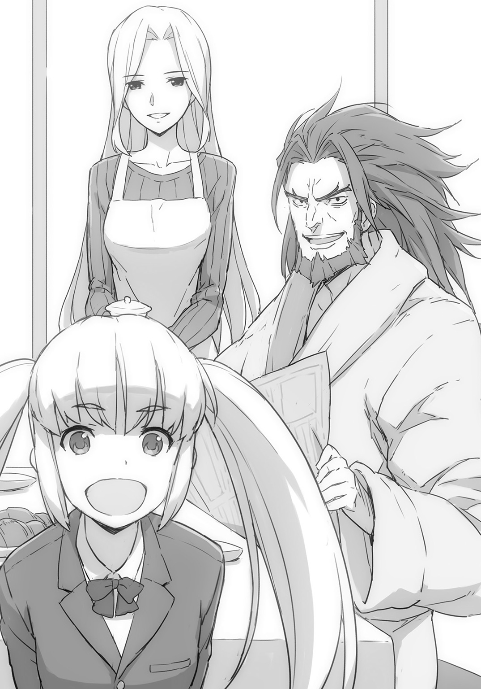
「あ、ああ......。おはよう」
ツインテールを元気に振り回して、クーが言う。ブレイドはそっちには挨拶を返した。
クーもクーで、なんか変なカッコ。学校の制服みたいなものを着てる。竜種は服は着ないのだけど。服のように見えるあれは〝体表の模様〟ないしは〝表皮の変化したもの〟なのだけど。
「ほら。貴方も早く支度してくださいな。......今日は大事な会議があるんですよ？」
「うむ。わかっている」
「アハハハ。パパはママの尻に敷かれているのじゃー」
「お父様とお母様。いつも仲が、およろしいですねー」
「はっはっは。見せていないところでは、もっと仲が良いのだがね」
国王パパの手がセイレーンママのお尻を撫でにいく。ぱしりとはたき落とされる。
「アーネストちゃんも、いつ、うちに来てくれても、いいんですよ？」
セイレーンママは、穏やかな笑顔でアーネストに言う。
「いやですよー、もうっ！ ブレイドなんて眼中ないですってー、こんなバカ」
ブレイドは釈然としないまま、頭の上に「？」を十数個くらい浮かべながら、とりあえず、エネルギー補給をしていた。
パンとスクランブルエッグとベーコンを腹に詰めこんだ。
食えるときに食うのは大事。次、何十日食えなくなるか、わからないので。
これ。勇者業界の常識。
○ＳＣＥＮＥ・Ⅱ「教室」
「ブレイド――？ まだ寝ぼけてんの？ ほんとにだいじょうぶ？」
学校に行く途中の道すがら――。
〝幼なじみ〟のアーネストに、心配する顔を寄せられる。
カオ。近いって。
ブレイドはちょっと頰を赤らめて、自分から顔を遠ざけた。
「心配するのもだめ？ それもだめ？」
いつになく、しおらしい表情になって――すぐに手と足の出てくる凶暴きわまりない幼なじみが、まるで別人に見える。
「大丈夫。大丈夫だって」
ブレイドはそう言って安心させた。
「なにかさっきは、起き抜けで、変だっただけだよ。変な夢でも見ていた気がする。夢と現実がごっちゃになって、それでおまえのことを――」
「私を......、なに？」
小首を傾げる。ボリュームのある赤毛が、卵形の頭から伝い落ちている。
「私を、なんだと思ってたの？ ――ね、言って言って。おもしろいから言ってみて」
「ぜってー、言わねー」
ブレイドはそっぽを向いた。
だから......。カオ。近いんだってば。
◇
〝教室〟についた。とても小さい小部屋に、ぎゅうぎゅうと――三〇人ぐらいが押し込められていて、一種、異様な光景だった。
「どしたの？ ブレイド？」
「あ。うん......。いや。大丈夫」
一瞬、生じた違和感も、しばらくすると慣れてくる。
朝、一軒家のリビングで、国王――じゃなくて、親父とおふくろの姿を見たときに、違和感を覚えたときと同じように、教室に対して覚えた違和感も、数秒のうちには薄らいでいってしまう。
「よ。ブレイド」
「よ。カシム」
親友――ではなくて、〝悪友〟のカシムと、ブレイドは腕をクロスさせて挨拶を交わした。
（じつは今日はなー。すんげえもん、持ってきてるんだぜー？ あとで貸してやるからなー）
「すんげえもん？ って、なんだ？」
「うわっバカっ！ 声が大きい。......しーっ！ しーっ！」
「もう！ カシム君！ ブレイド君に変なこと教えないでください。あと日直なんだから。早く黒板の落書き消して」
「わかってるよー」
委員長のマリアに言われて、カシムはしぶしぶと黒板に向かった。
黒板の落書きは――なんか傘が描かれていて、ブレイドとアーネストの名前が、左右に並べて書かれてある。
あれ、どういう意味なんだろ？
「おはよう。ブレイド君」
綺麗な黒髪をさらっと揺らして、優しい笑顔の女子がやってきた。
「ねえ。ブレイド君。宿題やってきた？」
「え？ 宿題？」
なにそれ？
「こいつがやるわけないでしょ」
幼なじみが断定してくる。
「あ、あの、じゃあ......、み、見せてあげても......、いいよっ？ 本当はだめなんだけど。今日だけ。特別だよ？」
「お？ おう？ ......助かる」
「あー、クレア。あたしもあたしも。見せて見せてー」
「イェシカは自分でやろうね」
「ずるーい、ブレイド君だけ」
「ブレイド君は特別だもん！」
「あ。言った。言っちゃった。この娘」
「あ――ちがうの！ これはそういう意味じゃなくてっ！ ちがうのちがうの！ ちがうんだから！ うわーっ！ わーっ！ わーっ！」
「ねー、〝そーゆー意味〟って、どーゆー意味ーっ？」
ブレイドは女子たちの集団を、すーっと離れていった。
親友のクレイが、こいこい、と手招きしてくれているので、ノートを持って、そそくさとそっちに行く。
「センパイ！ センパイ、センパイ、センパイ！ ――ぜひ！ ハイスペックな後輩の、この私をご指名ください！ この私のハイスペックな機能を持ってすれば！ 一学年上の問題を解くなど造作もありません！」
「おま。教室帰れよ」
まーた、ウザいのがやって来やがった。〝センパイキャラ〟のこいつは、下級生のくせに、上級生の教室に入り浸るやつだ。
センパイセンパイとまとわりついてきて、ウザいこと、この上ない。
「あ。先生。きた」
斥候の一人が、廊下に出していた顔を引き戻して、そう言った。
宿題はまだ写し終わっていない。
あと五秒......。三秒......。一秒......。よしっ！
ブレイドはタッチの差で宿題を写し取り終わった。クレイとハイタッチを交わす暇もなく、ばしゅっとお行儀よく、椅子の上に座り直した。
「皆さん。おはようですなー。今日はいいお天気ですなー」
逞しいとさえいえるほどのヒップを、スーツにぴったりと押しこんで、男子からも女子からも人気の高い、うちのクラスの担任――ディオーネ先生は、ちょっと心配になるくらいの険のない笑顔で、そう言った。
「ちょっと......、どこ見てんのよっ。ブレイドっ」
隣の席のアーネストが言ってくる。
「ケツと足」
ブレイドは簡潔に、そう答えた。
机の横に身を乗り出して、教壇の脇から、ケツおよびその近辺を確認しようとしている。
なんでか――、ディオーネ先生のケツとか足とかが、気になってしかたがない。
足が「二本」であることに、なんでか、違和感がある。
......なんでだ？ あたりまえなのに？
「今日は、みんなに、いいニュースがあるのですぞー。特に喜ぶべきなのは、男子、ですぞー」
ディオーネ先生は、そう言った。
男子がざわざわと、ざわめきはじめる。
「転校生を、紹介するのですぞー。――さ。入って」
ディオーネ先生に呼ばれて、女子が一名、教室に入ってきた。
「転校してきた......。ソフィです」
静かな雰囲気を持つ女の子が、ぺこ、と、わずか数ミリほど、頭を傾けた。
男子は、おー！ と、大騒ぎ。
女子も、半分くらいは、おー、のほうで――。残りの半分くらいは、おー、と喜んでる男子に、きっつい目を向けている。
ブレイドはもちろん普通の男子であるので、おー、のほう。
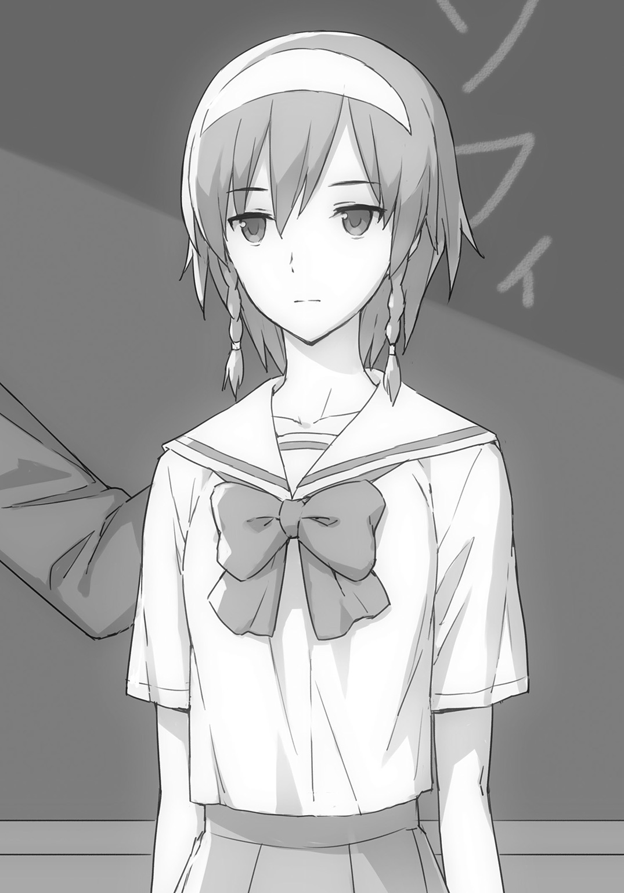
皆から何秒か遅れで、よくわからないなりに、「おー」と、叫んだ。
なんで「おー」なのか、よくわからないのだが......。周回遅れにならずには済んだ。
皆から大きな歓声を浴びていても、転校生の少女は、顔色一つ変えず、まっすぐに直立していた。
○ＳＣＥＮＥ・Ⅲ「昼休み」
「ねーねーねー！ 前の学校ってどんなとこー!?」
「音楽どんなの聴いてるーっ!?」
「好きなマンガってどれどれなになにーっ!?」
「オトコのタイプ、どんなのー？」
「ＩＤ交換しよーっ!?」
チャイムが鳴り、四限の授業が終わり、先生の背中が、戸口をくぐるかくぐらないかというあたりで、クラスの皆は、早くも転校生に殺到していた。
「アテンション！」
大きな声が飛ぶ。
クラスの〝女帝〟の一喝に――皆は、しんと、静かになった。
「もうっ！ みんな――おやめなさい。困ってるでしょ、ソフィさん。――ほんと、ごめんなさいねー。うちのクラス、みんなバカだから」
「かまわないわ」
と、クール少女は、気にしていない。
「前の学校については話せないわ。禁則事項に該当するので。音楽は聴かない。でも教えてくれればなんでも聴くわ。マンガはＢＬを少々。好きな男性のタイプはよくわからないけれど、ダメでポンコツな人には母性本能をくすぐられるわ。すさんだ目をしていると、さらに素敵ね。ＩＤは、ごめんなさい。スマホもガラケーも持っていないの」
皆が同時にぶつけていた複数の質問に、順々に回答してゆく。
彼女はきっと耳がいい。複数同時の発話をすべて正確に聞き取っている。
皆は、「おー」と、感心している。
ブレイドも、どこが「おー」の感心ポイントなのか、わからないなりに、皆に合わせた。
おー......？
皆はそれぞれグループに分かれて、お弁当を食べはじめる。
そんななか、転校生のソフィは、一人――ぽつねんと立っていた。
「......どしたん？」
「お弁当を持ってきていないの」
「ああ。じゃあ......、学食があるよ」
「そう」
答えたソフィは、ぽつねんと、立ったまま。
「......行かんの？ 学食？」
「場所がわからないわ」
あー、まー、そりゃそうだな。転校してきたばかりだもんな。
しかし。この娘。すっげー受け身だな。
聞かれればなんでも答えるけど、「答えすぎだろ、それ」――っていうくらいまでカミングアウトしちゃうけど。
でも自分からはなにも言わないんだな。
困っているのに、「学食の場所を教えて」とも言わないで、ただ、立ってるままなんだな。
「じゃ。俺が連れてってやるよ」
俺はこの娘の味方になろう。たとえ世界を敵に回しても――。
ブレイドはそう思った。
決意というほどのことでもない。単なる確定した〝事実〟として――そう認識した。
「こっちなー。ついてきな――」
「命令なら、ついてゆくわ」
◇
弁当を持ってこれる生徒たちばかりではない。
そんな生徒たちに、昼食を提供するために「学食」という施設がある。
無料で食い放題になっていなくて、パン一個にも、いちいちお金を払わなければならないというところが、なんだかへんに思えるが――。
日替わり定食に、スペシャル定食に、総菜パンに、欠食児童の腹を満たすアイテムがたくさんだ。
腹を空かせた生徒たちの目からは、ずらりと並ぶ総菜パンが、どれも、キラキラと輝いて見える。
「オバちゃん。俺さー。これさー。カレーも入ってると完璧だと思うんだよねー」
「あはははは。カツサンドにカレー入れろなんて言ってきたコ、あんたがはじめてさねー。よっしゃ！ こんど作ってみるかね！ カレーコロッケにすれば、カレーが垂れてきやしないだろうかね」
オバちゃんは腕まくりすると、チカラこぶを作ってみせた。
ちょっとした思いつきで言ってみただけだったが......。オバちゃんの料理人魂を刺激してしまったらしい。
明日は新メニューが並ぶのだろうか。楽しみだ。
「パン。なんにする？」
「なんでもいいわ」
「好きなの選んでいいんだぞ？」
「それは命令？」
「命令じゃないが......。ソフィが本当に自分の好きなのを選んでくれると、俺は嬉しいかな」
「ごめんなさい。〝好み〟っていうのは、本当にないの。どれが好きなのか、それとも嫌いなのか、私にはよくわからないの」
「じゃあ、ぜんぶ試してみようぜ」
ブレイドは、言った。
「オバちゃん。パンぜんぶくれ！ 全種類！」
「あはははは。――残したら承知しないよ？」
「楽勝だぜ！」
右から左まで、総菜パンを一種類ずつ、ぜんぶ腕の中に収めた。
ソフィが目をわずかに見開いていた。ほんの何ミリかの、まぶたの開きかたの違いだったが、ブレイドにはなぜか、彼女が「驚いている」ことがわかるのだった。
◇
芝生の上に戦利品をずらりと並べる。
「さ。どれがいい？」
「ブレイドが好きなものを選んで。残ったものを、私が食べるわ」
ブレイドは苦笑した。
ソフィは、ソフィだなぁ......と、しみじみ、思う。
ここでさっきと同じことをやっても、また繰り返すだけ。
「じゃあ。俺。カツサンドとカレーパン」
ブレイドは、自分の人生の半分を構成するものだけを、さっさと取って――残り全部をソフィへと、差し出した。
ソフィは残りすべてのパンを、一個一個、手に取っては眺めて戻し――。
そして最後に、一個、選んだのは――。
「うえっ......。なにそれ？」
「フルーツサンド......、と、いうものらしいわ」
それはホイップクリームがたっぷり数センチ級の厚みで詰まって、さらにはフルーツまでクリームの合間に埋没しているという、凶悪なサンドイッチだった。
パンというより、ショートケーキとでも呼ぶべき物体だ。
「......だめ？」
「い、いや......、ソ、ソフィが、いいなら......、な、なんだっていいぞ？ いいよ......？ いいけど？」
「だめ？」
二度――聞かれて、ブレイドは、ぷるぷるぷると、首を横に振った。
しばらく、二人で、黙々と食べた。もぐもぐとパンを片付けていった。
肉だのヤキソバだの入ったパンをブレイドが片付け、クリームだの餡子だのフルーツだのが入ったものはソフィが片付けた。
ソフィは甘いものが好きだったらしい。これまで知らなかった。
そういえば女の子は、普通、甘いものが好きなんだっけ。そしてソフィも女の子だったっけ。はじめて気がついたみたいに、それは新鮮な認識だった。
パンの最後の一個を食べ終えて、ぺろりと、指を舐めとったブレイドは――。
ごろん。――と、寝転がった。
頭をソフィの太腿の上に置く。
「えっ？」
めずらしくソフィが驚いた声をあげる。
「いいだろ？」
「構わないわ」
ブレイドは聞いた。ソフィは承諾した。
ブレイドはソフィの膝枕で、昼寝を決めこんだ。
ふかふかの芝生の上。
陽光が降り注ぎ、ぽかぽかと暖かい。
ソフィの膝も温かい。やや汗ばんでいるのかな。これは。
ブレイドのほうは、リラックスしきっている。
平和すぎる。普通きわまりない、幸せな生活――。
こういうのもいいなー。こういうのがいいなー。
このまま殺されても、いいかなー。
平和すぎて、幸せすぎて、ブレイドは、思わずそんなことを考えてしまった。
しかし――。生きて、帰ることが、勇者の仕事である。
勇者とは、最強の存在ではない。常に必ず、どんな戦場からも生還してくる者のことをいう。
そして自分は――《勇者》なのだった。
「センパイセンパイセンパイ!!」
けたたましく騒ぎたてる、後輩役の――〝あいつ〟がやってきた。
「交代交代！ 交代を要求します！ 膝枕でしたら、ぜひ！ 私のハイスペックな太腿をご賞味ください！ センパイ！ センパイ！ センパイセンパイセンパイセンパイ!!」
「うるせえ」
緑色の髪の後頭部を、引っ摑んで――。
ブレイドはその顔面を、芝生に叩き落とした。
「ちょ――!? ブレイド!? やめなさい！ いくらイオナちゃんがイラつくっていっても！ それはないでしょ！ ひどいでしょ！」
物陰に潜んでいたアーネストが、飛び出してきて、ブレイドに叫ぶ。
「なにが？」
後頭部を押さえたまま、顔面を芝生の土に沈めてゆく。
〝後輩キャラ〟は手足をばたばたやっていたが、やがて、その動きは、びっくんびっくんと、痙攣するようなものへと変わった。
それでもブレイドは力を緩めない。ますます顔面を土中に埋めこんでゆく。
「死んじゃう！ 死んじゃうってば！」
「死なないだろ。そもそも本物じゃないし」
ブレイドは言った。
死なない。知ってる。わかっている。
「ブレイド......、どうしたの？」
ソフィが表情の欠けた顔で言ってくる。
ブレイドはかぶりを振って返した。
「ああ。ごめん。ソフィ。――楽しかったよ。嬉しかったよ。こんな普通の生活を俺ができるなんて、思ったことなかった。だから気づいた。この世界は本物じゃないって」
「それは......」
「ずっとここにいられればいいな。いたいと思う。......でも、俺は帰らなければならないんだ。やらなければならないことがあるんだ」
「ちょ......？ ブレイド？ あんたなに言ってるの？」
「アーネスト。おまえも幻だったんだな。......欲しかったよ。幼なじみ」
「ねえみんな？ ブレイドおかしくない？ ――壊れちゃった？」
「はあぁぁぁ......」
ブレイドは気を高めていった。勇者にしかできない――。
現存する〝人〟のなかでは、勇者しか持っていない、独特の呼吸法で――対幻術用の特殊な構造を持った〝気〟を練ってゆく。
「はあああぁぁぁ......」
「え？ ちょっと？ なにブレイド？ なんなのよそれ？」
アーネストがへんな顔をしている。この顔も見納めか。
俺は、殺伐とした世界に帰らねばならない。
勇者の日常へと――。
「ハアアアァァァ――ッ!!」
どんどん、どんどん、際限なく高めてゆく。
現実世界では殺せない相手を、幻術にはめて殺そうとする輩は、たくさんいた。
何度も何度も、何十回も――幻術にはめられているうちに、脱出のための〝技〟を編み出してしまっていた。
「ハアアアアアア――ッ！」
気の高まりにつれて、空間に亀裂が入る。そしてついに――ビキイィと破砕音が響いて、空間が割れた。
光の差しこむ別空間が、そこに開いていた。
ブレイドはその穴をくぐりぬけて、〝外〟へと出た――。
〝現実〟へと帰還した――。
○ＳＣＥＮＥ・Ⅳ「現実世界にて」
「......あれ？」
〝外〟へと出たはずなのだが、なんか、あまり変わっていない。
芝生と緑。穏やかに降り注ぐ陽光。
自分を幻術にはめた敵の姿は、周囲にはない......。
ブレイドは構えを解いた。敵が近くにいれば、斬り捨てていたところだったが......。
自分のおでこに貼りついていた接触パットを外して捨てる。
周囲にあるのは、寝転がっている皆の姿。自分と同じようにおでこにパッドを貼りつけている。
......え？ 皆って？
あれは......、敵の幻術だったのではないのか？
自分に仲間がいて、トモダチに大勢囲まれて――。
殺したり殺されたりする日々を過ごすかわりに、授業中に居眠りをして、昼ごはんの総菜パンを楽しみにしていればいい生活は......。
あれは敵の仕掛けてきた〝幸せな幻〟だったのではないのか......？
「あーもう、なんで解いちゃうのよー。......てゆうか。解くか。フツー。どうやって仮象から出てきたのよ？ ――だからあんたは超生物って言われるのよ。わかってる？」
「え？ ......アーネスト？ え？ おまえ？」
「はい。そーです。幼なじみのアーネストさんです。寝ぼすけのお隣さんを、毎日、起こしに行ってあげてる、美人で優しいクラスの女子リーダーって設定の、アーネストさんです」
「え？ え？ え？」
「もう？ ブレイド平気？ 無茶して自分で仮象解除しちゃって、悪い影響が出てるんじゃないの？」
「確認します」
ウザ後輩キャラ――でなくて、イオナが、診察用の触手を伸ばしてきて、ぺたりと、おでこに貼りつけてくる。
「若干の記憶の混乱が見られますが、脳機能の障害が原因ではなく、単に認識が追いついていないだけと思われます」
おでこの触手が外れる。
「えーと......？ あの？ 幻術......じゃなくて、ええと、これは、仮象？」
ブレイドは聞いた。アーネストは、うんうん、と、髪まで振って答えてきた。
「そうよぉ？ みんなでブレイドにプレゼントしたげようって、思ったの！」
「ぷれぜんと？」
「そう！ 〝普通の生活〟よ！ みんなからのプレゼントだったの！」
アーネストの話は、いまいち、よくわからない。
ブレイドはイオナに顔を向けた。
ハイスペック機によるハイスペックな説明を求めた。非常にめずらしく、イオナがドヤ顔で説明することを許した。
「通常、仮象を利用するときには、意識はそのままで、空間認識や体性感覚だけをバーチャルで上書きします。しかし今回は、マスターの記憶自体に干渉しました」
「やっぱおまえのしわざかよ」
ブレイドはぼやいた。
イオナを「術者」と感じていた〝直感〟は、つまり、まったく正しかったわけか。
「アーネストが〝幼なじみ〟だという設定や、クーが〝妹〟という設定や、私が〝可愛くて仕方がない後輩〟であるという〝設定〟に対して違和感があったかもしれませんが、数秒ほどで消えたはずです」
「アーネストが幼なじみでクーが妹なのはともかく、おまえが可愛くて仕方がないという点に関しては、永久に違和感がつきまとったぞ。おまえが術にはめたのは、俺だけか？」
「マスター以外の〝出演者〟については、すべて演技していただけです。皆さんノリノリでご協力いただいております」
「うふふっ。幼なじみ、おもしろかったーっ！」
アーネストが言う。
「我は妹だったのじゃー。あんまり出番なくて、つまんなかったのじゃー。兄様が家に帰ってきたら、いっぱい、甘えんぼさんをしたのにー。残念なのじゃー」
クーが言う。
「転校生......、難しかった。うまくできてた？」
ソフィが聞いてくる。答えるのは恥ずかしかったから、ぷいっと、やった。
「〝普通の日常〟は、いかがでしたか......？ マスター？」
機械の娘は、完璧に形作られた花のような笑みを浮かべている。
破竜饕餮を撃ち込みたくて仕方がなかったが、ちょっとだけ、我慢した。
「そうよぉ。ブレイド？ 気に入ったの？ どうなの？ すぐ出てきちゃったから......、なんか不満だった？ なにが不満だった？」
「......だいたい、なんなんだよ？ あの世界」
「私のアクセス権限を有する、マザーのデータバンクにあった、最も古い記録を参照しました。〝人〟が最も平和に暮らしていた時代における、最も一般的かつ〝平凡〟な、未成年者の社会的身分。すなわち〝学生〟を再現しました」
「え？ あれ？ イオナの創作じゃなかったの？ ファンタジーじゃなくって？」
「現代からみればファンタジーのようなものです」
「ね？ どうする、ブレイド？ もいっかいやる？」
「次はマスターも破れない記憶プロテクトを施してみせます」
「カンベンしてくれ......」
ブレイドは笑った。
「いやだった？ だめだった？ もうやりたくない？」
アーネストが、しゅんとなっている。
「いや......」
なんと言ったらいいのか......。
あの世界は、まぶしすぎた。
自分には、幸せすぎた。
それに〝普通〟と〝平凡〟というのであれば――。
「いまで充分だよ」
ブレイドはそう言った。
皆に笑いかけた。
第五話「マッサージ師ブレイド」
○ＳＣＥＮＥ・Ⅰ「実験台？」
「あー、いたいたー、おーい、アーネストー！」
いつもの放課後。いつもの寄宿舎内。
探していたアーネストの姿を見つけて、ブレイドは手を挙げて声を投げた。
「なによ、ブレイド？」
一瞬、笑顔をこぼれさせてしまってから、アーネストは、真面目な顔を取り繕う。
「遊んだりとか、しないわよ？ 私これから試練場で特訓するんだから。まあ、付き合いたいっていうなら......、一緒に練習してあげても、いいけど？」
ちらっ。
「じゃ。ほかの誰かにするかー」
なんの屈託もなくブレイドが回れ右して行ってしまおうとしたので、アーネストは、その服の裾を、はっしと摑んで、取りすがった。
「ああっ！ 待って待って待って！ なになになに!? ――練習あとにするから、聞いてあげるわよ？ 付きあってあげるわよ？ なに？ アインとツヴァイと遊ぶの？ クーちゃんと遊ぶの？ わーい、楽しみねーっ!?」
「いや。遊ばないけど？」
「え？ 遊ぶんじゃないの？」
「実験台を探してたんだ」
「じ......、実験台？」
アーネストは三○センチばかり後ろに下がった。――物理的に。
「ああ!? 実験台っていっても、そんな危ないこととかじゃなくて！ 破竜系の八の太刀を編み出したから受けてみてくれとか、そんなんじゃなくて！」
「破竜系って......、三までしか、なかったんじゃないっけ？」
「いや。四も五も六も七もあるよ」
「八はないじゃない。てゆうか。それ。人が受けられるものなの？」
「いや。人じゃ無理だな」
竜族の最古老たちだった。複数でスクラムを組んでもらった。
「ホラ話はいいから。......で、なに？ なんなの？」
「いつもマッサージされてばかりじゃん。俺？ だから――」
「え？ なに？ マッサージ？ したげるわよ？ 風呂、行く？」
アーネストは嬉しげな顔を見せた。
自分が求められていることを知るのは、嬉しいことだった。
「聞けよ」
「聞くけど」
「マッサージするのは、俺だってば」
「え？ ブレイドがするの？」
「そうだよ」
「できるの？」
「なんだよ、その、できるのって......？」
「人体破壊とかにならない？」
「おま。俺のこと。なんだと思ってるわけ？」
「超生物」
「じゃー。いいよー。ほかのやつにあたるからー。クレアにでもイェシカにでも頼むからー」
「あっ。待って待って待って！ やるやるやる！ やるから！ 実験台っ！」
服の裾にしがみついて、アーネストは止めた。
すたすた歩いて行っちゃうブレイドを、引きずられつつ、止めにかかった。
「じゃ。どこでやる？ 俺の部屋？ おまえの部屋？」
「えっ。......なんで部屋で？」
密室で二人っきり......？
アーネストは、どきりとした。
「横にならないとできないだろ」
「あっ、そ、そうよね......」
しきりに髪を撫でつけながら、アーネストは答えた。
「じゃ、じゃあ......。風呂とかっ？」
「おう。じゃあ。いくかー」
手を握られた。手を握られたー。手を握られたっ！
すたすたと歩くブレイドに、引っぱられるようにして、アーネストは歩いた。
○ＳＣＥＮＥ・Ⅱ「ブレイド流マッサージ術」
「い、いいわよ......」
洗い髪を頭上できゅっとまとめあげ、小さなタオルで、なんとなく意味もなく局部を隠しながら、ブレイドの前に立った。
場所は、いつもの大岩の上。
半分湯に浸かった大岩は、いつもぽかぽかと温かく、なだらかな表面は、寝そべるのにちょうどいい。
アーネストはいつもここでブレイドをマッサージしてやっていた。
「じゃ。横になれ」
「う。うん」
言われて、大岩に腰をおろす。
「アンナーっ......、〝初体験〟の、ご感想はーっ？」
露天風呂に浸かったイェシカから、茶々が入る。
「は、初めてじゃないしっ！」
「あら、そうなんだ？」
イェシカは意外そうな顔をした。
自分がマッサージされることは、あんまりない。でも初めてじゃない。
一回くらいはある。でもまえのときには、緊張しまくって、ぜんぜん覚えていないんだけど。
ドキドキしながら、大岩の上に寝そべったアーネストに、ブレイドは――。
「じゃ、腕をこっちに。腰はちょっと捻った感じに」
「え？ 普通にしないの？」
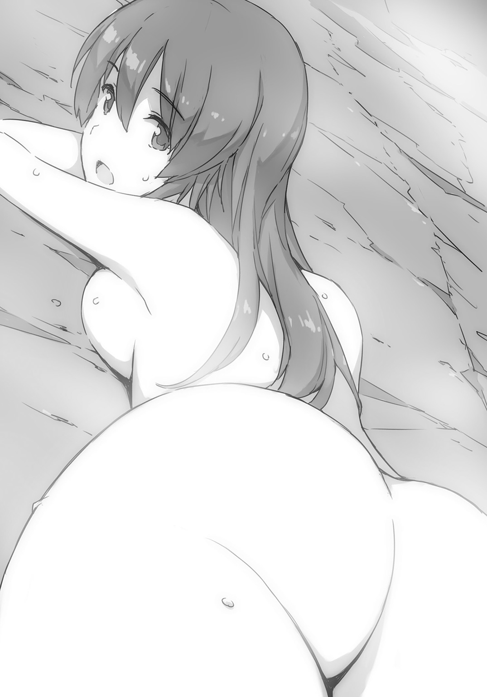
「実験っていったろー」
そうだった。
「なんかマニアックな体位ね」
「イェシカ......、それやめて......」
アーネストは言われるまま、ポーズを変えた。
「じゃあー、いくぞー」
ブレイドが言う。
妙なポーズを取らせたアーネストに、自分も妙な体勢で腕を絡めて――。
そして――。
ぐいっと、アーネストの体に、無理な力を加えた。
「ぐげっ」
絞め殺される鶏みたいな声を、アーネストはあげた。
みしっ、と、骨が軋んだ。
頸部と脊椎と腰椎と、あらゆるところから、異音があがる。
「おし。うまくいったぞー」
いってない！ いってない！ ヤバい音がしてる！
「じゃ、つぎは、こっちをー」
ブレイドは力を加える方向を変えた。
アーネストの肉体を、違う角度で破壊しにかかる。
「くけっ」
アーネストの喉から、ふたたび、へんな声があがった。
自分の意思で出している声ではない。気管を抜けた空気が、痙攣した声帯を通って音を鳴らしているだけだ。
これマッサージ違うから！ 関節技だから！
――と、訴えたいアーネストであったが、声が出ない。
あたかもサブミッションの達人と戦ったときのように、アーネストの肉体は、完全にブレイドの支配下に置かれてしまっていた。
指の一本さえ動かせない。もちろん声など出せるはずがない。
その後も、アーネストの肉体は蹂躙された。
異様な姿勢で異様な技をかけられた。あらゆる箇所から異音が響いた。
全身の関節といわず、関節外といわず、本来、動くはずのない骨の嚙み合わせまでもが、すべてズレ動いた。
「あー、ほら、男子っ。こっち来ちゃだめ。そっちもだめ。ヤバい角度で、丸見えだから」
特定の角度に集まろうとする男子を、イェシカが追い払ってくれている。
それよりも止めて！ こ、殺されるうゥ......。
「よっし！ おわったぞー！」
アーネストの肉体に与えられていた拷問のような責め苦は、唐突に終わりを告げた。
解放されたアーネストが、まず最初にやったことは――。
「よっし！ ――じゃないわよ！ 人の体で遊ぶのやめてくれる!? 死ぬかと思ったわよ！ 死んじゃうかと思ったわよっ!!」
「遊んでないぞ。真面目にやったよ」
ブレイドは悪びれもせず、そう言った。
「......どうだ？ カラダ、軽くなったんじゃないのか？」
「軽くなんてなってないわよ!! あちこち破壊されて――、破壊――？ あれっ？ えっ？」
アーネストは腕をぐるぐると回した。腰をひねってみる。
足を上げて、三段蹴りを放つ。
「うそ？ 軽い――!? え？ なんでっ!?」
自分の体が、自分の体でないように動く。
「ん。組み替えてみた。おまえ。修行や特訓はいいけど。カラダ。痛めすぎ。あちこちズレてたから、それを全部、直してみた。もし軽くなったんだとしたら、それは、本来の状態に戻ったってだけで、特別なことは――」
「すごい！ ブレイド！ あなた！ すごいわよ！」
「えっ？ すごい？ 俺......、すごい？」
嬉しげに鼻の下を擦るブレイドの顔を、アーネストは、ちょっと子供っぽいなと、そう思った。
○ＳＣＥＮＥ・Ⅲ「大盛況」
「あひぃ」
「いぎぃ」
「ひぎぃ」
およそ人のものとは思えない悲鳴が響き渡る。
アーネストはイェシカと肩を並べて湯に浸かっていた。
ちゃぷっと湯をすくって自分の肩に掛けながら、アーネストは、隣のイェシカに言う。
「だけど。いつ聞いても凄い悲鳴よねぇ。――絞め殺される鶏みたい」
「えっ？ そうお？ あたしはそっちよりも、あっちのほうの声かと」
「あっち？ あっちって、どっち？」
「えー。わかんないんだー。そっか......。これ判別に使えるかも？」
「だからなんの判別よ？」
ブレイドの〝マッサージ〟の腕前は皆に知れ渡り――。
どう見ても、あれは〝マッサージ〟ではなくて、〝整体〟だとか、そういう類の技だと思うのだけど。
まあともかく、ブレイドに施術してもらって、体を〝組み替えて〟もらうと、物凄い特訓をしたぐらいの効果が得られるのだ。しかも瞬時に瞬間的に。
「ぎひゃあああぁぁ。し、死ぬ、しぬしぬ......、やめて......、ころしてええ」
いまも犠牲者......もとい、被験者が声をあげている。
経験者のアーネストにはわかる。殺されるかと思った。
「ほらやっぱりアレ。殺されるときの声じゃない」
「いやー。まー。近いってゆーかー。似てるってゆーかー」
「だから、なにとよ？」
「未経験者には、わからないってゆーかー」
「......わかんないわよ？」
イェシカが、なんか言ってる。顔赤くさせて？
身体能力の飛躍的向上の代償は、あの声――。
正確にいえば、あの声を発生させている原因。――関節を外されて組み直されるときの激痛だった。
なぜブレイドが、突然、凄腕の整体師になってしまったのかというと――。
人体構造を熟知しているから、というのが、その理由らしい。
人間の体の作りに精通しているブレイドは、どこをどうすれば効率的に破壊......ではなく、最も正しく機能させられるのか、直感的にわかるのだという。
死ぬほど痛い。――と、経験者が止めても、自分の強さランクが一つ上がるとわかれば、施術を依頼する者は後を絶たず、毎夕毎放課後、断末魔の叫びにも似た声が、風呂に響くことになった。
「ぐえぇ」
「女の子のあげる声じゃないわね」
「そうでもないけど？」
イェシカの言ってることは、さっきから、まるでわからない。
アーネストは湯をすくうと、肩口から胸に向かってかけた。
ブレイドが大勢の女の子の体を触りまくっているのは、なんかちょっと気に入らないが――。
そーゆー意味で触っているわけではないし。だいたい、施術の半分くらいは、女の子ではなく男の子だし。
「だいたい、ブレイドなんだし。気にするだけ、無駄よねー」
アーネストはつぶやいた。ブレイドの頭の中身は、五歳のお子ちゃまなのだ。気にする意味がない。
「んー？ なにが意味ないってー？」
「ふふふ。ひみつー」
アーネストは親友にそう言って、また体に湯をかけた。
○ＳＣＥＮＥ・Ⅳ「ブレイドの反省」
「俺はなんか間違っていたっぽい」
皆から毎日、〝整体〟をせがまれるようになった、ある日のこと。
ブレイドがそう言った。
「間違っていた......って、なにが？」
アーネストはフォークにソーセージを突き刺したまま、聞き返す。
「どうも俺のやっていたのは、マッサージじゃなかったっぽい」
「なによ？ いきなり？」
「骨格を操作するのはマッサージと違うんだよ。肉のほうを操作するのがマッサージなんだ」
「それって......？ あたりまえのことなんじゃないの？」
ソーセージをもぐもぐと食べながら、アーネストは言った。
「そ、そうか......、あ、あたりまえだったのか......」
ブレイドは、ずーんと、落ちこんだ。
「ああでもっ！ ちょっと似ているところあるからっ！ 間違っちゃっても仕方ないかもしれないわよっ！ そんな落ちこまないで！ へいきへいき！ ふつー！ ふつーだからっ！ 誰でも間違えるくらいだからっ！」
落ちこむブレイドを励まそうと、アーネストは不自然なほどにフォローした。
「健気ねー。アンナ」
親友その一。イェシカが、なんか言ってる。脇腹に肘鉄を入れた。
「ブレイド君っ！ だいじょうぶだよ！ ブレイド君のマッサージ！ とっても上手だったよっ！」
親友その二。クレアが、援護射撃をしてくれている。
「だからあれはマッサージじゃなかったんだよ......」
だが狙いがへっぽこすぎる。ブレイドは余計に落ちこんだ。
「あ。ごめん。ごめんねっ？ ――でもブレイド君の、えっと、せ、整体......？ そんなやつ？ すごく良く効いたよ？ 体が見違えるように動くようになったもん！」
「ああ......、クレアの場合。骨盤に歪みが出てたから、直しただけだから......」
「骨......、あっ......、それでお尻......、ずっとさわられてたんだっ......、私」
なんですと。
「ちょっとブレイド。骨盤矯正にお尻までさわる必要ないでしょ？」
「え？ いやなに言ってんだ？ さわらないと直せないだろ。クレアのお尻、大きいんだし」
「大き......、そ、そんなに？ お、大きいかなっ？ ふ、ふつうだと思うんだけど......なっ？」
「ねえイェシカ。なんとか言ってやってよ」
「なぁイェシカ。なんとか言ってくれよ」
「イェシカ。そ、そんなに大きい？ 大きくないよねっ？ ないって言ってっ」
「カオスね」
イェシカは、言った。
「なによカオスって？ どこがカオス？」
「なんだよカオスって？ ちゃんと話、聞いてくれてるか？」
「えっ？ ええっ？ えーっ......、そんな？ そんなに......？ ええーっ......」
「カオスね」
イェシカは、また言った。
「だからちょっとブレイド。いつさわったの。どうやってさわったの。まさか、やらしいさわりかたとか......、してないわよね？」
「いや？ やらしい？ ......は、わからんが、だから、こうやって――」
「きゃーっ！ きゃーっ！ だ、だめっ！ ブレイド君っ！ ――みんないるからっ!!」
「ねー、クレアー、それー、みんながいなければいいって、そう言ってるわよー？」
「なんで実演するの！ なんでさわるの！」
「おまえはいま、さわれって、そう言った」
「言ってない！ 死ねバカこの無頓着超生物！ ドヘンタイ！」
「なんでそこヘンタイと関係あるんだ？」
「カオスねー」
イェシカは、笑った。
○ＳＣＥＮＥ・Ⅴ「ブレイド流マッサージ術・２式」
「新しいマッサージ法を、開発したんだ」
「新しい......？ って？ どんなの？」
いつもの風呂のテーブル岩の前で、アーネストは、そう聞き返した。
ちょっと、身が引ける。
裸の胸を手で覆い隠して――混浴に慣れた最近では、あまりやらない仕草を、無意識的に行ってしまう。
「ちょっと、ここに寝てくれ」
ばしばしばし、と、ブレイドは大岩を手で叩く。
「な......、なに？」
アーネストは、一歩、後じさった。
「いいから。いいから」
ブレイドはニコニコと笑顔を浮かべている。
ばしばしばし。
手が大岩を叩く。
「ほらー、アンナー？ 〝愛〟を、試されているわよー？」
イェシカが馬鹿なことを言う。
「ああああ、アイ、とか！ どうだっていいでしょ！ ちがうでしょ！ ――ええ！ はい！ 私はそんなビビリじゃありませんから！ 当学園の主席として、皆の模範たるべく！ 率先して自ら行う責務があり！」
「――で、やるの？ やらないの？ はっきりしようよ」
親友の追及は容赦ない。
アーネストは、とたんにポンコツ化した。具体的には、半ベソになった。
「あらアーネスト？ どうされました？」
清楚さとグラマラスさを兼ね備えた、女性美溢れる肉体が、湯煙の向こうから湯を割って歩いてくる。
「おー、ルナリア。――かかってく？ 俺、まえのが１式なら、こんどのは〝２式〟なー。〝本物のマッサージ〟を開発したんだ」
「ぜひ」
彼女は――。アーネストのライバル的存在であるところの、ルナリアは――。
あろうことか、一瞬たりとも、迷わなかった。
まえに、「ブレイド流マッサージ術１式」の犠牲者になっていたとき――。
ひぎぃ、とか、ひげぇ、とか、ほげぇ、だとか。
誰よりも壮絶に、誰よりも野太い絶叫で、誰よりも深々と臨死体験を極めていたやつが、一瞬たりとも迷うことなく言った。
「このあいだの施術は、驚くべき体験でしたわ。わたくし。また一段、高みへと至ることができました」
「そうか？ でもあれ、間違えてたっぽいぞ？」
「ブレイド様？ こんどはきちんと殺してくださいますか？」
と、アーネストの好敵手的存在は、ブレイドの腕に、自分の腕を絡めにいった。
風呂であり、入浴中であり、よって、全裸。
他の同年齢女子では、ちょっと太刀打ちできないサイズのそれが、ぎゅううと、ブレイドの二の腕に押しつけられて、形を歪め――。
しかしブレイドは平然とした顔で――。
「殺さないし壊さないし。直してるだけだし。もう壊すのはやんないんだ。俺は」
「まあ。それでは。わたくしだけ？ ――光栄ですわ」
アーネストはイラついた。だから。ぎゅうぎゅう。あてんな。
「なに言ってんの。私。やるわよ？ 私が先よ。――あんたは、あと、あと。――はい。離れなさい」
アーネストは二人のあいだに割って入った。
二人を引き剝がして、ブレイドの手を引いて大岩に招く。
「こう？ 寝ればいいの？ ――お手柔らかに頼むわよ？」
うつ伏せになって背中をさらす。
腹が据われば、これから起こる、大惨事？ ――も、怖くなくなった。
苦痛には慣れている。炎の女帝の名は伊達ではない。毎回毎回、炎の魔神に変身するたびに、常人なら、精神が崩壊するほどの壮絶な痛みに耐えているのだ。
なによ。骨格組み替えられるぐらいの痛みなんて、その程度――。
「ふわん――」
ブレイドの手が背に触れて、思わず口から出てしまった声を――アーネストは手で押さえて、吞みこんだ。
「どした？」
「いや、あの......？ ごきごきばき、って、しないの？」
「しないよ」
「え？ あの......、このあいだ、痛いって言ったから......？ 優しくしてくれてるの？」
「だから、このあいだのは、間違えてたってわかったから、きちんとした〝マッサージ〟をするんだよ」
「え？ あ――ちょっと待って。きちんとしたマッサージって――？」
ブレイドの手が、アーネストの背を撫でる。
「ひゃん」
ほんのわずかに皮膚を撫でられただけなのに、へんな声が口を抜けていってしまう。アーネストはまた自分の口を押さえた。
「俺。わかった。マッサージっていうのは、こうやって、体を揉んだりまさぐったりして、筋肉をほぐしたり、血行をよくしたりすることだろ？」
「そ、そうだけど......、あ、合ってるけど......」
ブレイドの手が背筋を上下する。アーネストはへんな声を口から洩らさずにいるために、相当の自制心を必要とした。
ブレイドの手は肌をさすり、筋肉を撫で、そしてお尻を――。
「ひゃう」
「さっきから、うるさいよ？ おまえ？」
うるさい言われた!?
がまんしてるのに！ こんなにがまんしてるのに！
そんなことにも気づかずに、ルナリアのお尻を撫でようとしていたあいつに、うるさい言われた!?
「......お尻撫でようとしてたくせに」
「尻？ ああ。凝ってるのか？」
ブレイドの手が、お尻に伸びてくる。
「ひあああっ」
「だから。うるさいって。ちゃんとマッサージしてやるから。黙ってろ」
「ちょ......!? な、なんでっ！ お尻ばかり、そんな......、念入りにっ!?」
「臀部には色々な筋肉があるんだ。色んな方向から力を加えないと、深部まで到達しないからな」
「いやあのそのあの？ ちょ――ちょっ、ちょっ!? 近い、近いって、アウト――そのへんさすがにアウトな領域だからっ！ やめてやめてやめてーっ！」
「あらアーネスト。もう終わりでよろしいんですの？ それでは、わたくしの番ということで――、よろしいかしら？ ブレイド様。わたくしも臀部マッサージを所望いたしてよろしいですか？」
ルナリアに煽られて――。
かちりと、アーネストに、スイッチが入る。
「やって。ブレイド」
「さっきはやめろって」
「いいの。やって」
お尻をくいっとブレイドに向ける。
「いや。もう尻は終わったから」
しないんだ。
ちょっと期待――なんて絶対してないからっ！
「背中と尻は終わったから、じゃ、つぎ、まえいくぞー」
「え？ いやちょっと、ま、まえ？ まえは、さすがに......」
「ではわたくしの番――」
「いいわよ。はい」
アーネストはごろんと寝返りを打った。背中とお尻を向けているだけならともかく、体の前面を向けるとなると、やはり抵抗がある。
バストも、そして下のほうも、丸見えになってしまうわけで......。
だが〝混浴〟という文化、それ自体には慣れてきていてるし、天敵であるルナリアのまえで、弱みを見せるわけにはいかない。
それに自分がリタイアすれば、〝順番〟とやらで、ルナリアがつぎにマッサージを受けることになるわけで――。
それは我慢がならない。
こんないやらしいマッサージ。受けさせるわけにはいかない。
断固。阻止。
うおおー。――とか。男子が騒いでる。
よく見える方角に人だかりができている。
「男子。あっちいけ。――ねえちょっとイェシカ。追い払っておいて。――むしろブッ殺しておいて」
「了解」
イェシカが、ざっくざっくと男子たちを惨殺しにかかる。
アーネストは大岩にしどけなく横たわり、ブレイドを待った。
しかし、ブレイドの手は、いつまでも伸びてこない。
「......しないの？」
自分から誘った。
ブレイドは――。
こー。ほー。こー。ほー。
――と、妙な呼吸法を繰り返していた。
その左右の手の上には、それぞれ別種の〝気〟が生じている。
「え？ なに？ ちょ――？ なんなのその気？ なに練ってんの？」
「いや。だからスペシャルなやつ。ここまでは普通のマッサージだったからなー。ここからは、スペシャルなやつ、いくぞー？」
「な、なによスペシャルって......？ ひゃん！」
アーネストは声をもらした。
ブレイドの手が、片手は乳房を摑み、もう片方の手は下腹部へ――。
「丹田と心臓の、第二と第四の〝チャクラ〟を回すぞー。女は心臓の上に余計なモンがついてるから、脂肪層、貫通するように、ちょっと強めにいくぞー」
「ちょ――！ 余計なモンってなによ!? それ大事なモンでしょ!? ――って、えっ？ 強めって？ え？ なに？ ちょ――待って!?」
「いくぞー」
ブレイドの掌から、気が注入される。
「あッ!! がッ!! ぐウッ!!」
体を駆け回る未知の感覚に、アーネストは身をのけぞらして、濁った呻きを洩らした。
足の指の先まで、ぴんと突っ張らせる。
体内の気の循環を、強制的に操られる。
以前の超生物的な勘違いマッサージでは、骨格を組み替えられた。
そしてこんどの勘違いマッサージでは、体内の気の循環を組み替えられている。
前回、骨格を組み替えられたときには――その代償は、壮絶なまでの苦痛だった。
今回、気の循環を組み替えられてゆくときの、その代償は――。
「ぶ、ぶれいど......、だ、だめっ、やっ、やめっ――」
「いいからいいから」
「よ、よくないっ――!? な――なんでこんなっ!? き、きもち――ひいいっ!!」
「あー、キモチいーだろー？」
のんびりとした声で、ブレイドは言う。
アーネストは荒く息をついて、酸素をむさぼりながら、目の端に涙を浮かべて――いやいやをした。
ちがう。そうじゃない。
そうじゃなくて――！
そっちの意味のキモチいいじゃなくて――ッ!!
「そうじゃな――ッ!! そういうのじゃな――ッ!! あひッ――、だ、だめッ!! それだめだめえッ!!」
「いや。いやいや。へいきへいき。まあちょっとはへんな感じがあるかもだけど。いいからいいから。まかせとけって。俺。これでもけっこう知ってるから。人体構造だけでなくて、内気のほうも、けっこう詳しいからー。昔、老師について、盗......教えてもらったんだー」
にこにこと言う。超生物が笑う。彼が口にする「けっこう」という、その量は、きっと、超生物基準における「けっこう」なはず。
アーネストは、ろくに思考もできない状態だった。
高々とブリッジを作って、びっくんびっくん、痙攣している最中だ。
ひ。ひひいぃっ。
「うんうん。俺も、おまえにマッサージしてもらっているとき、キモチいーもんなー。今日は、いつもと逆で、たーっぷり、愉しんでくれ。――な？ こうやって、〝気〟の流れも直接マッサージすることで、筋肉や血流やリンパだけでなく、気脈の流れも直接〝正しく〟することができるんだぜ？」
「ゔ。びいっ。ぐぎいっ」
〝超生物的〟に〝正しく〟されてゆく。
その代償が苦痛でなくて快楽というのが、また、恐ろしかった。
自分はどうなってしまうのか――？
「よし。おわりっ。よくがんばったなー。――ちょっと休んでろ」
ブレイドは、そう言った。
ぐったりと死んだように横たわるアーネストから、身を離して、周囲の皆に聞く。
皆は表情の欠け落ちた顔で、ぼんやりとしていた。
「えーと、つぎ、誰だっけ？」
「るなりあ。へいきだよ？ なんにも。わるいところ。ないよ？ おはながすき。おにんぎょうさんと。あそんでいたい」
「そっか。じゃ。イェシカ。やる？」
「え？ いやあのその、ちょーっと、興味あったかもだけどー。そ......、そこまで逝くのはぁ......、ちょっとぉ......」
「いやいや。へいきへいき。だいじょぶだいじょぶ」
「えっ、あっ、ちょ――」
イェシカがつぎの犠牲者となった。「あひあひあぎぃ」とか、ひとしきり騒いで、ぐったりと静かになったイェシカを残し、ブレイドはつぎに――。
「クレイ。つぎ。やるか？」
「へ？」
「見学だけじゃつまんないだろー」
「い！ いや待て！ 間違うな！ 俺は男だぞっ!?」
「？？ ......関係ないじゃん？」
「ないのかーっ!?」
クレイも犠牲者となった。
ぐったりとしたクレイを残し、ブレイドは――。
「いや！ いい！」
男子の一人が全力で拒絶する。
「でも見てるじゃん？ 興味あるんだろ？ いいっていいって。気にするなって。トモダチだろー？ みんなやってやるから」
「く、来るなー！ せ、戦闘配置！ 対超生物フォーメーション！ Ｎ－３！」
皆は戦闘配置を取って、超生物に対抗した。
だが、もちろん、無駄だった。
「順番なー。順番っ」
全員、ことごとく、ブレイド流マッサージを受けることになった。
（除くイオナ）
第六話「賢者クレイ」
○ＳＣＥＮＥ・Ⅰ「イオナのお願い」
「マスター。マスターマスター。私の仮説をお話しします」
「いや。べつにいらんから」
いつもの試練場。いつもの午後の修練。
フェンスに座って練習を見守っていたイオナが、急に、フェンスを飛び降りて、とことこと近付いてきた。
「最近、とみに激しい私への差別は、私が生体でないことに起因しているというのが、私の提唱する仮説です」
「そうよブレイド。――あなた。イオナへの扱いだけ、酷いのよ？ 自覚あるの？ ないでしょ？」
剣を合わせていたアーネストが、剣気を込めて撃ち込みながら、そう糾弾してくる。
「ひどくねーよ。普通だよ。いまも昔も同じ扱いをしているよ。むしろバラバラにしてないだけ、最近は、ひどく優しく、特別丁重に取り扱っているよ」
こっちも同等の剣気を込めて抗議すると――。
ああ、ほら、欠けちゃった。こっちの剣の刀身の半分くらいまで、向こうの剣が食いこんじゃった。
アーネストの所有する魔剣《アスモデウス》を、ごく普通の魔法剣で受けるには、〝すごい技術〟が必要となる。
さらに最近アーネストは、「アー君は欠けても折れても平気」ということを学習してしまったので、がっつんがっつん、ぶつけ方が半端ない。
「根拠として、まず一つ目の事実――。以前のベロチュー事変の折に、私だけ〝ブレイド流挨拶〟をしてもらっていません」
「いや。一つも二つもいらんから。数えなくていいから。そもそも聞いてないから」
「ねえ、してもらってないの、それって私もなんですけどー？」
アーネストがなんか言っている。イオナは人の話を聞かないやつなので、なにを言うだけ無駄だと思う。
いまもイオナが見つめているのは、自分だけだし......。
ちなみに「ベロチュー事変」とか、イオナがなんか変な呼称で言ってきているのは、以前、ブレイドの勘違いから起きてしまった騒ぎのことだった。
朝におはようのキスをするという〝あれ〟は、間違った〝挨拶〟だということを学習したので――。同じ過ち（惨劇？）を、もう二度と繰り返すつもりはない。
「そして二つ目の事実です」
「だから聞いてないから。あっち行けっての」
「ブレイド。かわいそうよ。聞くぐらいしてあげましょうよ」
「前回のマスターのマッサージ無双事変の折にも、私だけアクメマッサージを施されていません」
「ア、アクメって......」
おや？ アーネストがまっかっか？
なんでだろ？ なんだろ？ アクメって？
「それは私の生体部品が、あくまで偽装のための性能しか持たず、生物と生体の条件である〝気〟を備えていないからだと推察されます」
「そりゃそうだよ。おまえにマッサージしてやって、なんになるんだ？」
ブレイドは、そう言った。
イオナは均整の取れた少女の体つきをしている。イオナの説明によれば、そのプロポーションは、まさに理想的で、男性が好ましいと思う、完璧なスタイルであるのだという。
偽装を目的としたその姿に騙されていると、すぐに忘れてしまうことなのだが――。
イオナは、人間ではない。
たとえばその体は、皮膚と脂肪層と筋肉層でできているが、筋肉はダミーで、体を動かしているのは金属骨格のほうだ。イオナがクーと一緒に教練を見学しているのは、それが理由だ。〝鍛えること〟で増強される〝筋肉〟を、イオナは備えていない。
よって、筋肉を揉みほぐすマッサージは、まったく意味がない。
またその体内には、〝気〟の循環があるわけではないので、気を強制循環させることで体質改善する、「ブレイド流マッサージ術２式」もまったく意味がない。
あと、強いていうなら――。
こいつに優しくして〝甘えんぼさん〟をしてやらないのも、バーサーカーを前身とするガーディアン種族の精神構造が、人と違うからである。
人と違って、彼らは〝上位者〟との交歓を〝幸せ〟の根本とする。そして重要地点への敵性体の侵入を阻む、あるいは、身をもって破壊されることで「強さを知る」ことが、その主たる役割で、存在意義でもある。
よって――、適当に、適度に、〝ぶっ飛ばして〟やって、一方的に蹂躙するというプロトコルで、適正な方法によるコミュニケーションを取ってやり、こちらが絶対的な上位者であるという認識を、定期的に更新してやらなければならないのだ。
「あーこいつには、かなわねー！」と思い知らせつづけてやることが、人でないイオナにとっては、もっとも「幸せ」を実感できる道筋となるのである。
竜種なども似たところがあるが、あちらは、タマゴから生まれたあとの一回だけ〝踏みつけて〟やることで刷り込み完了となる。
だがこちらは、常に踏みにじってやっていないとならない。
まったく――。面倒くさいこと、この上ない。
イオナというガーディアンを発生源とする存在を、端的に、簡潔に、わかりやすく、ひらたく喩えるなら――。
玄関に置かれた〝足拭きマット〟である。
足拭きマットの幸せとは、なんだろうか？
――いわく、踏みにじられて蹂躙されることである。
そしてブレイドは、そんなイオナを、これ以上ないほどに、正しく取り扱ってやっているはずなのだが......？
「おまえ？ いったい、なにが不満なんだよ？」
「私の陽電子頭脳に芽生えた〝乙女回路〟が、マスターによる特別扱いを要求しています」
「バグだな。直せ」
「ふふふふふ......。直しません。理由は乙女の機密です」
「おーい、アーネスト......。なんかいってやれー。ポンコツが乙女とか名乗ってるぞー？ ......おーい？」
「し......、してないわよ？ そんな、ア......なんとか、って......。人前で、そんな、はしたない......、お、乙女がそんなこと......、あ、あるわけないでしょ。あったりまえじゃない......」
こっちもなんだか、乙女の問題にかかりっきりのようである。
「結論としまして、マスターにお願いがあります」
「やだ。チューとかの間違った挨拶はせんし。骨格矯正もしないし。アクメなんとかというマッサージのほうも、やらないからな」
「その返答は想定内です」
「そうかよ。じゃ、なんなんだ？」
「破竜系の技を教えてください。破竜穿孔を使えるようになりたいです」
「は？」
ブレイドは目を剝いた。
その言葉は〝想定外〟だった。
機械が気を扱うなんて聞いたこともない。
ましてや闘気系の技の――まあ勇者業界では下から数えたほうが早い、誰でも使えるようになる基本系統とはいえ、破竜系だと？
「断る」
ブレイドは結論を口にした。より正確に言うと「無理だ」となるが――。
まあ結果としては同じことだ。
「その返答は想定内です」
イオナは、また、そう言った。
そして微笑みの形に頰を凹ませた。
「なので、クレイに教わろうと思いますが。――構わないでしょうか？」
「へっ？ クレイ？」
ブレイドは思わず、近くで練習していたクレイを見た。
「へっ？ 俺っ？」
イェシカたちと乱戦練習をやっていたクレイは、しばらく前から手を止めて、こちらを見ていて――自分の顔を指差して、ひどく驚いた顔をしていた。
「クレイが破竜穿孔を身につけたことは、周知の事実となっています」
まあ、その通りなんだけど。
しょっちゅう、ぶっ放している。
まあ、〝覚えたて〟っていうのは、誰でもそうなんだけど。これみよがしに、必要もなく、よく技をぶっ放している。
まだ練り込みが甘くて、技、本来の威力を出し切れていないんだけど。
〝勇者直伝〟とか言って、暴発ぎみに撃っている。
「教えていただけますか？ クレイ」
イオナはクレイのところに行った。
腕を取り、その腕に、ぎゅむ――と、弾力のあるおっぱいを押しつける。
高度に偽装されて、生身とまったく遜色のない物体だ。
高度に進化した人造おっぱいは、生身と区別が付かない。おっぱいに貴賤なし。――とかいう理屈で、クレイはたぶん、いま脳味噌の九八パーセントぐらいの領域をおっぱいに侵食されていた。
「ブレイドよりも、私は貴方に教わりたいのです」
「あ、ああ......、も、もちろん......、いいぜっ？」
クレイが、言う。
得意げな顔で。ドヤ顔で。言う。
鼻の下を伸ばして。言う。
女子たち一同が、しらー、っという視線をクレイに向けていた。
ブレイドは、なぜだかわからないがムスーっとなった。
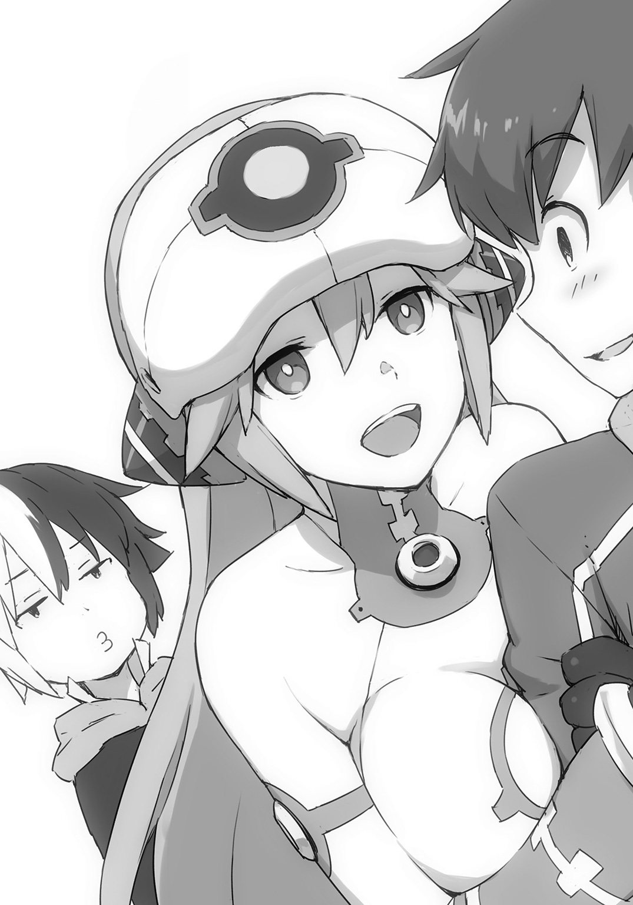
○ＳＣＥＮＥ・Ⅱ「クレイとイオナ」
「や。あ。お。お茶。の。のむ？ お......。お菓子もあるけど」
寮の部屋で、クレイはイオナを迎えていた。
ブレイドがよく遊びに来て、菓子はないのかと催促してくるものだから......。菓子は常備されるようになっていた。
この部屋に女の子を迎えるなんて、滅多にない――というか、初めてのことなので、クレイはすこしばかり平静を欠いていた。
「水分と有機物の摂取は、この体の維持に、必ずしも必要とされていません。おかまいなく」
イオナは木の床の上に、直に、ぺたんと正座している。
気遣いのできる系男子としては、クッションの一つも勧めたくなるわけだが、イオナはそれさえも不要とばかりに、顔色ひとつ変えずに、固い床の上に座っている。
「そ、そうか」
ところでカシムのやつは、いったいどこへ行ってしまったのだろう？
イオナが来たとき、「じゃ俺は席外してくるから」とか言って、なにかわけ知り顔で、出ていってしまったのだが......。「二時間は戻らねえから」とか言っていたけど。なんで二時間なのだろう？
「......で。ええと？ 破竜穿孔の撃ちかたを教える話だったよな？ ......だったら、ここじゃなくて、試練場のほうがいいんじゃないのかな？」
破竜系一の太刀、破竜穿孔は、二の太刀である破竜饕餮と比べれば、小さな威力であるが――室内で使えば、部屋の中はめちゃくちゃになる。壁に大穴だって空く。そのくらいの威力はある。
ちなみに、二の太刀である破竜饕餮の場合には、寮の建物が吹き飛ぶ心配をしなくてはならない。全壊するのか、半壊で済むか、そっちの心配をする領域。
「いえ。人目を忍ぶことのできる〝ここ〟が最適です。クレイ。これから貴方に依頼することは、大変プライベートなお願いに該当します」
「へ？ プライベート？ ......なんで？」
「私の〝ここ〟に、貴方の〝それ〟を、〝注いで〟欲しいのです」
「へ？ へ？ へええええええ!?」
クレイはびっくりした顔のまま、イオナに抱きつかれ――押し倒された。
◇
「親さまー？ なにしているのじゃー？」
「しいっ......。静かに」
寮の廊下。ブレイドはクレイの部屋のドアに、ぴったりと張りついていた。
ドアに耳を押しあて、部屋のなかの音に耳を澄ます。
だが......。わからん。
さしもの《勇者イヤー》をもってしても、喋った言葉の内容以外は、よく、わかんねえ。
聴覚だけで音像を作りあげて、視覚よりも優れた分解能で、物体把握をする特殊技能を持っているやつと、昔、戦ったこともあるが――。そういうのは、コウモリみたいな肉体的資質を持った種族の特殊技能で、いくら元勇者といっても、人間には、むーりー。
「親さまー、クレイとイオナはー、なにをしてるのじゃー？」
「さあ......？ なんか、クレイがイオナに〝注いで〟いるらしいぞ？」
「なにを注ぐのじゃー？ どこにじゃー？」
「さあ......？ わからん。お......？ またなんか聞こえてきたぞ？ 〝すごいです。クレイ。もっとたくさんください〟だと」
「なにが、すごいのじゃー？ なにが、たくさんなのじゃー？」
「さあ......？ わからん」
ブレイドはクーとともに首を傾げた。
二人が部屋のなかでいったいなにをやっているのか......？
じぇんじぇん、わかんなかった。
○ＳＣＥＮＥ・Ⅲ「破竜穿孔、披露」
「ド、ラ、グ......、スマッシュ！」
ばしゅう、と、地走りが突き進み、杭に固定された標的用の魔法鎧を、ばらばらに打ち砕く。
「ドラグスマッシュ！ ドラグスマッシュ！ ドラグスマッシュ！」
さらに、ぱちんぱちんと、指先が打ち鳴らされる。予備動作もなく撃ち出された螺旋エネルギーは、周囲に円上に配置された鎧の列を、つぎつぎと、爆発、四散させていった。
「おー。ちゃんと練りこんでるなー」
ぱち、ぱち、ぱち、と、ブレイドは、手を叩いた。
「クレイのみたいに、先走っちゃって、暴発ぎみなのとは違って、技の本来の威力が、ちゃんと出てるなー」
「マスターに褒められてしまいました」
イオナは、てへぺろと、舌を出した。
「ぼ、暴発......？ いや、俺のあれは、自分なりに〝改良〟したのであって......」
クレイが、なんか言ってる。
でも〝改良〟とかゆーのは、きちんと、基本を繰り出せるようになってからの話なので、たぶんこれは、真面目に聞いてやらなくてもいい内容。
「けど、いったいどうやったんだ？ ガーディアンのおまえが、気や闘気系の技を、使えるはずがないのに......？」
ブレイドはイオナにそう聞いた。
「私の限界は私自身が定義します。お言葉ですが、私が闘気を発生させられないという事実は、いま否定されました。認識の更新をお願いします」
「うん。ごめん。俺が間違ってた」
ブレイドは素直に認めた。
そしたら、イオナの顔は――。
ぱあああ、っと、明るくなって――。
なんもう、喜びとか喜悦とかを通りこえて、〝変顔〟にしか見えないものとなった。
「おい。これ。壊れたぞ？ ――誰か直してやってくれよ？」
皆に顔を向ける。
そしたら皆も、かなり、びっくりした顔をしていて――。
なんか、「ブレイドが褒めた......」「超生物に褒められてる」「超生物が過ちを認めた」とか、口々につぶやいている。
ひどいな。俺だって間違うし。間違っていたら認めるし。認めたら直すし。
みんな、なんだと思ってるんだ？
「な？ もっと見せてくれよ？ ――おーい、標的、あと一ダースぐらい、おかわりでー」
今日の日直の用具係に声をかけると――。
「残念ですが、弾切れです」
イオナはそう言った。
「じゃ、じゃあ――！ 俺がっ、破竜饕餮教えてやっから！」
「大変魅力的な申し出ではありますが、辞退します。――約束がありますので。――さあ行きましょう。クレイ」
イオナは、クレイの腕を搦め捕ると――。歩いていってしまう。
「お――!? 教えるって言ってるだろーっ!?」
ブレイドは叫んだ。だがイオナは振り返ることなく、お尻をふりふりして、試練場から消えていった。
ぷー、くすくす。
......という笑い声が、背後から聞こえてきたので、ブレイドは、物凄い目になって、後ろを振り返った。
「ぷーくすくす」の発見源は、誰なのか、わからずじまい。
責任者がわかんないので......、かわりに、ブレイドは怒鳴った。
「俺っ！ 破竜饕餮教えるっ！ ――教わりたいヤツ！」
皆が、ぎえっ――という顔になった。
譲り合いと押しつけ合いが行われたあとで――、皆の手に背中を押され、前に突き出されてきたのは、アーネストだった。
「お――、教わるわよっ！ こ、こわくなんてないわよ!! い、いいわよ！ さあ！ きなさいよっ!!」
「よーし！ じゃあ、遠慮なく、びしびしいくからなー！」
ブレイドは......。超、教えた！
なんか、モヤモヤとして、ムシャクシャする感じを、ぜんぶ、アーネストにぶつけさせてもらった！
○ＳＣＥＮＥ・Ⅳ「乱入」
「親さまー。退屈なのじゃー」
「しいっ......。静かに」
ブレイドは、我が子に向けて、しいっとやった。
「ねー、ブレイド。私。見ていてつらい」
「しいっ......。静かに」
アーネストにも、しいっとやる。
なにがつらい？ わけわかんねー。馬鹿なこと言ってんじゃないよ。ほんとに。
「ブレイドが幸せなら、私はそれでいいわ」
「下がっていてよ。ソフィ。貴女には無理よ。――てゆうか。幸せそうに見えるわけ？ どこが？ これが？ ドアにへばりついて聞き耳立ててる、この、いじましくも、情けない物体が？」
なんか、ひどい言われようだが――。
いまものすごく忙しいので、とりあわないことにする。
部屋の中でかわされる会話を、一字一句たりとも聞き逃すまいと、《勇者イヤー》を働かせていた。
「アア、イイデス、クレイ、モット、ワタシノココニ、ソソイデクダサイ、モットモット。......なぁ？ これ、どういう意味だと思う？」
「聞いたまんまの意味でしょ。――てゆうか。誰かマリア呼んできて？ ちょっと風紀を取り締まらないとならないみたいだから」
アーネストがカンカンだ。
「ダメダヨ、イオナ、モウデナイヨ、モウムリダッテ。......これは、どういう意味だと思う？」
「クレイ......、不潔！」
クレアもカンカンだ。
「あー、どうせなら、踏みこむのはもうすこしあとにしてあげましょ。余韻ってあるでしょ。そこ大事でしょ。不完全燃焼になっちゃうでしょ」
イェシカがなんか言ってる。
「はいはいはい。みなさんどいて。どいてください」
マリアがやってきた。
腕に腕章を巻いている。風紀委員と書かれている。
「風紀委員です！ 悪い子は、いねがー！ ――じゃなくて、寮内で淫らな行いをしている現場は、ここですかー！」
マリアは、すごい、やる気だった。
取り締まる気、マンマンだ。
「まあ。待て待て。ここで行われていることに興味があるぞ」
「あっ――ちょ！ マオ！ だめです！ だめー！」
一つの口から、交互に言葉が発せられる。手がマリア本人の意志を裏切って動き、三つ編みを解いていってしまう。
ふぁさ――と、黒髪をなびかせ、額に魔王紋を浮き立たせて、魔王が顕現した。
「ふっふっふ。いちばん良いところで踏みこむぞ」
ぴとっ、と、魔王はドアに耳を押しあててきた。ブレイドに並ぶ。
「アア、モットデス、モット、タップリ、アツクテ、スゴイ、アナタノソレを、ココニ、モット、オネガイシマス。――って、なー、どういう意味？」
「ふっふっふ。ブレイド。焦るでないぞ。もうすこし待つのだ」
「アア、キマシタ、キタ、イイデス、クレイ、スゴクイイ。――って、なー、どういう意味？」
さっきから実況中継して聞いているのに......。みんな、誰も、答えてくれない。
女子は顔を赤らめていて、半分くらいは手で顔を覆って指の合間からこっちを見ていて、男子は鼻息を荒くしてフンフンとエキサイト。
「モ......、モウ、逝く......。――って、なー、これどういう意味？」
「さあブレイド。いまだ！ 見に行くぞ！」
魔王に首っ玉を抱えられて――ドアを開け放って、室内へと乱入する。
暗い室内で、二人はもつれあっていた。
クレイが床の上に仰向けに転がされている。イオナがその上に馬乗りになっていて――。
イオナの腕部の球体が、暗がりでぼんやりと光っている。イオナはクレイの手を取って、その球体に、クレイの掌を押しつけているのだ。
「おーい、イオナー。なんか――、無理やりなのはー？ いかんぞー？」
状況を見てとって、ブレイドはそう言った。
「おや？ 〝交尾〟していたのではないのか？ それともこれが〝交尾〟の正しい作法か？」
魔王が言う。なんかへんなもんを期待していたらしい。
「た......、たすけて......」
クレイが助けをもとめてくる。なんかカラカラに乾いたミイラみたい？
生物は〝気〟を絞り出し過ぎると、急性的に、こんな感じになる。勇者業界だと、わりと見かける光景。
「ほら。助けてって言ってるぞー」
「クレイは協力に同意してくれています。これは双方合意の上の採取行為です」
「た、たすけて......、も、もう......、し、死ぬ......」
「ほら。死ぬ死ぬ言ってるぞー」
「クレイ。もうすこし頑張ってください。生存限界までは、あと数発分、あるはずです」
「そのへんにしとけ」
ブレイドはイオナの脳天に、ごちんと拳骨を降らせた。
メタル骨格にヒビが入る威力で、ちょっと本気で、ごちんとやった。
「痛いです。マスター」
「なぜクレイを干物にしたのか、それを説明しろ。納得できる理由を言わなければ、おまえをバラバラにぶっ壊して、残骸をマザーの足下に放りこんで返してくる」
「私のことをそんなに気に掛けていただいて光栄です。乙女回路の導きにしたがい、いつもと異なる行動パターンを取ってみて、大正解でした」
「これが最後通告だぞ。――答えろ」
「すごい。ブレイドが嫉妬してる！」
「してねえよ！」
「すごい！ イオナ！ それどうやったの!? 教えて教えて教えて！ 私にも教えて！」
「聞けよ！」
アーネストがうるさい。ぴょんぴょん跳ねるな。いまはイオナを問い詰めてんだから。
「気を扱えるようになるための改装を受けました」
「気？ 改装？ わけわからんぞ？」
「ふっふっふ。――この私。イライザ・マクスウェルが、凡夫の方々に説明しましょう」
人垣の後ろから、イライザが現れた。
「機械であるイオナが、気や闘気を操ることは、本来、不可能です。若干の生体部品は備えていますが、循環増幅するためのチャクラ器官を生成するための臨界量に、まず達しておらず、組織自体の複雑性も、フラクタル構造が自立的に生じるまでに至りません」
「いや。だから。わかるように言ってくれ」
「私が以前、発明した、つまらない物ですが......。気や魔力を蓄えておくカートリッジがありますよね？ いまは皆さんの標準装備になっていますが。......あれの発展改良型の、高効率大容量エネルギー吸収クリスタルを、イオナに内蔵しました」
「大変。具合がよいです。イライザ。貴女は天才です」
「そんなあたりまえのことを、いちいち言わなくても、いいのです。......ふっふ。もう一度言ってください」
「天才。天才。天才です。――おかげで私は気を扱うことができるようになりました。大変感謝しています。――破竜穿孔」
どぼん、と、エネルギーが撃ち出される。壁に穴が空く。
「ほら見てください。マスター。私は生物です。人間です」
暗闇のなかで、目と両掌のエネルギー吸収ボールを共に緑色に光らせて――イオナは言う。
いやぁ......？ 人間か？ そうかぁー......？
「いや。吸精モンスターだし。そういや魔王軍にそんなのがいたな。精を吸い尽くす――ええと、サキュバス部隊」
昔々、勇者だったころ――。策略と罠にはまって、数十体もサキュバスにまとわりつかれたことがあった。
全員、一体残らず、「腹いっぱい」にしてやって難を逃れたが......。もしあのとき、数十体じゃなくて、数百か数千ぐらいで来られていたら、勇者といえども、ちょっと、あぶなかった。
「サキュバスは魔獣で、魔獣は人と、そんなに変わりません。現にここでは、夜魔族のマオも人として扱われています」
「いやー、こいつはハーフだろー？」
と、魔王の首っ玉に、ぐいっと腕を絡ませる。
魔王は、くふんと、鼻を鳴らして、頰をすり寄せてきた。
「なに言ってるんですか。マスター。超生物より、いまや私のほうが、断然、人間に近いです」
「あー。うん。うん」
アーネスト以下。皆が一斉にうなずいている。
......しどい。
「はいはい。不謹慎なことが行われていたってのは、誤解で、誤報だったからー！ はい。はい。みんな解散解散。かいさーん。......あと、イオナ。ほどほどにしときなさいよ。ミイラはだめよ。手加減しなさいよ？ ――あと男子たち。希望者いたら、あとでイオナに言いなさい。順番よ順番。はい。それじゃ解散ーっ」
うちの女帝が、ぱんぱんと手をはたいて、皆を追い散らす。
「マスター。マスターマスター。マスター。破竜穿孔をまた数十発は撃つことが可能です。見てください見てください。試練場に行きましょう。撃ちます。撃つとき。撃つべし。撃つのはいつ？ いまでしょう？」
イオナはミイラ化したクレイを、ぺいっと捨てて、ブレイドのところに駆けてきた。
「昼間、見ただろ」
ワンコみたいに足下にまとわりついてくるイオナに辟易しながら、ブレイドは廊下を歩いた。
試練場の方向になんて――向かってないよ？
なんだか釈然としないものは残るが......。
特にアーネストがドヤ顔になって言ってくる、〝嫉妬〟？ ――とかいうやつ？
わけわかんねー。
俺がイオナのことで嫉妬なんてするわけないじゃん。
ばーか。ばーか。ばーか。
だいたい、俺、そもそも、〝嫉妬〟？ ――なんてわかんねーし。
○ＳＣＥＮＥ・Ⅴ「哀・破竜穿孔」
「どらぐ......、すまっしゅ」
まだ気が戻りきっていなくて、老人にしか見えないクレイが、棺桶に片足を突っこんだ老人相応の気迫でもって、技の名前を告げる。
――と。気が撃ち出される。
標的の魔法鎧は、爆発、四散した。
「すごいぞ！ クレイ！」
ブレイドは賞賛した。
完璧だ。いや。完全だった。
完全な威力の破竜穿孔であった。
以前のクレイは、暴発ぎみに先走って、ぶっ放してしまっていたので――。技の威力は、本来の数分の一程度しかなかった。
いまでは完璧だ。いや。完璧を通り越えて、完全だ。
破竜穿孔を、これほどの完成度で撃つことのできる者は、勇者業界にも、そうそういない。
「どらぐすまっしゅ、どらぐすまっしゅ、どらぐすまっしゅ」
しかも連発が利く。
一切の予備動作なしに、撃っている。
「どらぐすまっしゅ、どらぐすまっしゅ、どらぐすまっしゅ」
イオナに搾りつくされて、からっからに乾いて、気なんて数滴しか残っていない、この枯れきった体で、これほどの連発能力――。
体内の〝内気〟をほとんど使わず、周囲に満ちる〝外気〟を巻きこんで、技を形成していることは――明らかだった。
これはもはや、老師や達人といった域ではなかろうか？
皆が言うには、クレイはいま「賢者モード」にあるのだという。
意味はよくわからないが、たしかにすごい。これはすごい。賢者モードすごい。すごいすごい。
「哀・どらぐすまっしゅ」
なんか接頭詞がついた。
うむ。これはもはや、〝新技〟と呼んで差し支えないだろう。
賢者となったクレイは、新技に開眼した。
第七話「脱怪人赤マント」
○ＳＣＥＮＥ・Ⅰ「アーネストの決意」
「怪人赤マントー、おっはよー」
「もー、やめてよー」
「おっはー♪ 怪人赤マントー」
「だからやめてってばー」
「よっ、怪人赤マントっ」
「斬るわよ？」
いつもの朝の風景。登校してきた生徒たちが口々に、学園の女帝に挨拶してきては、アーネストは苦い顔を返している。
ブレイドもアーネストを見かけたので、片手を挙げて、朝の挨拶を――。
「おー、アーネストー、おは――」
ずびゅっ！
「うわぁ！ なんで斬りつけてくんだよ！」
「うるさい！ 斬るわよ、って！ 警告はしたぁ！」
「してない！ してない！ 俺にはやってない！」
「うるさい超生物！ どうせあんたなんか斬れないんだから！ いいでしょ！ すこしくらい斬られなさいよ！」
「言ってることが無茶苦茶だ！ わけわかんねーよ！」
「ばかぁ！ もうばかぁ！ みんなで後ろ指！ さしてればいいのよーっ！ どうせ私は怪人赤マントよーっ！」
びゅんびゅん剣を振って、追いかけてくる。
最近のアーネストは上達著しいから、元勇者でなければ惨殺されてるぐらいの剣の冴えで、びゅんびゅんやってくるので、あぶないこと、この上ない。
ルナリアと二人、目配せをし合って――。共謀し合って――。
タイミングを計って――足を引っ掛けて、転ばした。
どべし、と、顔面をもろに地面にぶつけて、前のめりに倒れこんだアーネストは、そのまま、ぐじぐじと泣き続けた。
「ひっく......、ひっく......、えぐえぐ......、うえーん！」
「なんで泣いてるんだ？ こいつ？」
「さあ？ 怪人赤マントがどうとか、騒いでおりましたけど？」
ブレイドはルナリアと二人、顔を見合わせた。
「誰かー？ わかるかー？」
わかんないので、皆に聞く。
皆も顔を見合わせて、きょとん、とした表情を浮かべている。
「ほい。――イェシカ」
イェシカが、小さく、指先を上げている。
ブレイドはイェシカを指名した。
「あのー、たぶん......なんだけど。恥ずかしかったんじゃないかなーっ......？ って」
「恥ずかしい？ なにが？」
「だからその〝怪人赤マント〟って呼ばれかたが。――ほら。アンナ。昨日の修練で、また、炎の魔人化しちゃったでしょ？」
「ああ。なんか、ルナリアとやり合ってて、激オコになって、なんか、燃え上がってたなー。――言葉通りの意味で」
「ほら、魔人、解いたあとって、ハダカになるじゃん？」
「なるな」
「んで、ハダカに赤いマント羽織るでしょ」
「そういえば、あれ誰が出してるんだ？ いつも？ あの赤いマント」
「赤はマイロードに似合う色だから」
「レナードか」
気づかなかった。アーネストが炎の魔人化するときには、肉体を含めて、なにもかも燃やし尽くすわけで――。
所持品で残るのは《アスモデウス》のみ。
だから当然、マントは誰かが差し出していたわけだ。レナードだったのか。
「まあ、だから、怪人赤マントなわけじゃん？」
そういえば、昔は、アーネストの異名は「怪人裸マント」と呼ばれていた。それが最近では「怪人赤マント」という呼称にかわっている。
「皆から親しみをこめて、〝怪人赤マント〟って、呼ばれてるわけじゃん？」
「だめなのよー！ いやなのよー！ わかってよー！」
どんどんどんと、アーネストは床をぶっ叩く。びしびしっと床にヒビが入ってゆく。
床が抜けるぞ？
「でもおまえ、怪人赤マントじゃん？」
「ちがうわよ！」
「でもそうじゃん？」
「そうだけど！」
「ほらそうじゃん？」
「――わかってよ！」
「つまり、裸マントのほうがよかったってことか？」
「いいわけないでしょ！ まだ赤マントのがマシよ！」
「じゃあ、いいじゃん？」
まったくわけがわからない。
アーネストはいったいなにを怒っているのか？
まあ、いつもなにかで怒ってるのが、アーネストというキャラなのだが。
「わけわかんないぞ......？ な？」
ブレイドは皆に振り向いた。
ほら、アーネスト、わかんないよ？ ――と、皆に同意をもらおうと思ったら、みんな、なんか――気まずそうな顔になって、視線を、すーっと背けてゆく。
「ごめん。アンナ。......好きでやってるんだと思ってた」
親友のイェシカのこの謝罪の言葉が、アーネストのなにかの引き金を引いた。
「もういい！ 自分でなんとかする！ 不名誉な呼ばれかた！ 絶対！ なくす！ 脱怪人赤マント！ 絶対！ する！」
アーネストは立ち上がると、憤然と、歩いて行った。
どすどすと歩いて行った足形が、床のコンクリにしっかり残るぐらいの剣幕だった。
ブレイドは頭の後ろで手を組んで、アーネストを見送った。
へんなアーネストー。
へんなやつー。へんなやつー。へんなやつー。
○ＳＣＥＮＥ・Ⅱ「ルナリアに師事」
「絶対、どうしても、これだけはやりたくなかったんだけど。他に方法もなさそうだから、ルナリア。あんたに聞いてあげるわ」
午後のティータイム。
テラス席で紅茶を嗜むルナリアのもとへ、アーネストが、どすどすと床を踏み抜きながら、やってきた。
「あら。アーネスト。ごきげんよう。......なんの用ですの？」
「なんの用って......、だから、教わりに来てあげたのよ」
「なにをですの？」
「あんたはいっつもそうやって意地悪して！ わざわざ私が！ ゼッタイ嫌なあんたに対して！ 頭下げて聞きにきてやってんの！」
「頭。下げていないじゃありませんの？」
ルナリアは言った。
「ゔ......」
アーネストは、言葉に詰まると、しぶしぶ、ほんの三ミリばかり、頭を下げた。
「ぜんぜん下げかたが足りませんわね。地べたに額を擦りつけるまで下げたら、考えてみてあげてもよろしくてよ？」
「ゔ......」
アーネストはまた言葉に詰まった。
ぶわっと、目尻に涙が浮かびはじめる。
「どうして昔から！ そうイジワルなのよ！」
「どうして貴女はそう居丈高なのですか。それが人に物を教わる態度でして？ ――ああ、理解しました。これまで人から物を教わったことがないのですね。〝女帝〟とか呼ばれて、いい気になって君臨しておりましたものね」
「あんただって北の学園の女帝でしょう!!」
「ええ。まあ。そうですわね。どこかのポンコツ女帝などとは、格が違いますけど」
「だから教えてって言ってるでしょ！ 頭下げてるでしょ！ なんで教えてくれないのよ！」
ルナリアは、紅茶を脇にのけた。
「――ですから。なにを教えろと、言っていらっしゃるんですの？」
「イジワル！ イジワル！ イジワル！」
「アーネスト。貴女。なにを教えてほしいのか、まだ、言っておりませんことよ？」
「......え？」
アーネストは目をぱちくり。
「え？ 言ったわよ？」
「言ってないですわよ」
「え？ え？ え？」
「なにかを教わりたい、というところまでは聞きましたけど。......わたくしに、なにを教わりたいんですの？」
「え？ えと。えと。あの......」
「おっしゃいなさいな。わたくしも。鬼ではありませんことよ？」
「あ、あのね......、えっとね......。......変身っ？」
「変身なら、貴女もしょっちゅうやってるじゃありませんか。そして怪人赤マントと――」
「うわー！ うわー！ うわー！ それ言わないで!! もうやめるんだから！ 卒業するんだから！」
「......早く要件をおっしゃってください。紅茶が冷めてしまいますわ」
「あなた、怪人青マントって言われてないでしょう？」
「ええ。そんな不名誉な呼ばれかたはしておりませんわね。もし呼ぶ者がいたら、この世から消えていると思いますけど」
「変身解いたあと、なんか、青いオベベ着てるでしょう？ 一人で。ずるいのよね」
「ああ。あれですか」
「あれ！ どっから出しているのよ？ ずるいわよ！ 教えてよ！」
「さあ？ わたくし。狡い女ですから。......どうしましょうか？」
「ごめんなさい訂正します。貴女は親切で綺麗で、好敵手って書いてライバルと読む、私の大事なトモダチだから。......だから教えて？」
「そ、そんな......、褒めたって、なにも出ませんことよ？」
「いいや。出る！ あの青いオベベの出しかたが！ きっと出るっ！」
「まあ。教えてさしあげますけども......。午後の教練でよろしくて？」
「うん！ うんっ！ うんうんっ!! ――やっぱ持つべき者は友よねー！ ルナリア！ 好き！ 大好きっ！」
「――で、ですからっ。そ、そんなこと言ったって――！」
ルナリアは頰を染めた。
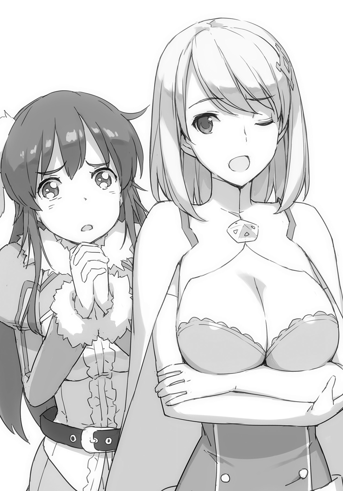
「も、もうっ――ば、ばかっ！ なに言ってるんですの!? ま、まあ、わ、わたくしも、すこしは――ほんのすこしくらいは、アーネスト、貴女のことを、す、す、す――」
「ほらー！ ルネー！ 行っくよー！ 先行っちゃうわよー!?」
アーネストは、もう、そこにいない。
......しどい。
ルナリアは、ぷいっと、おとがいを振り上げると――歩きはじめた。
○ＳＣＥＮＥ・Ⅲ「氷のドレス、炎のドレス」
「それでは。まず変身しますわよ」
試練場へと移動して、本日の練習内容を告げたがっている教官を正座させて、黙らせて――。
学園の女帝二人は、向かい合って立っていた。
「え？ あ。ちょっと待って」
アーネストは服に手を掛けた。
剣帯を外す、上着を脱ぐ、転びそうになりがら、慌ててブーツを片っぽずつ脱いでゆく。
「ほ、ほら――昨日っ、予定外で変身しちゃったからっ！ 全部燃やしちゃったじゃない？ だからいまちょうど、予備が尽きちゃって......」
「これだから貧乏貴族は......」
ルナリアは眉間を揉んでいる。
その仕草に込められた侮蔑に、ガッチーン！ ――と来た。
「おおう！ 変身すりゃいいんでしょ！ 変身すりゃ！」
ブーツを遠投して、投げ捨てて――！
アーネストは〝発火〟しようとして......。
やっぱりちょっと、考え直して、ボレロを脱いで、オーバーブラウスのボタンを開き、プリーツスカートに手を掛けたところで――。
「男子！ 見んな！ ぶっコロすわよ！」
「これだから蛮族貴族は......。公衆の面前でストリップだとか......」
眉間を揉むルナリアの仕草にあるのは、もはや、侮蔑を通りこして、哀れみで――。
アーネストはその屈辱に耐えながら、服を折って、畳んだ。
《さあ――変身したわよ》
タイツと下着くらいは換えがあるので、燃やしきって――アーネストは炎の魔人と化した。
「まったく。無様ですこと」
ルナリアの言葉も、もう気にならない。
すべてを焼き捨てて、いま、アーネストは人を超越した存在となっている。
《さ。あんたも変身しなさいよ》
「氷、人、変――ッ！」
ルナリアが言った。
なんかカッコいい言葉とともに、変身をはじめた。
ずるい。自分だけそんな変身の掛け声なんて考えちゃって。
やってることはこっちと同じなのに、なんか、あの掛け声のせいで、こっちの一〇倍ぐらい、カッコよくなっちゃってる！
《さあ。変身しましてよ？》
《ずるい。ずるい。――私もこの次のときには、魔、人、変ッ――とか！ そう言うから！》
《？？？ ええと......。はい。どうぞ？ ご自由に......？）
ルナリアは本当にわかっていない顔で、首を傾げて、そう言ってきた。
だから天才キライ。
炎の魔人と、氷の魔人。
いくらかの距離を置いて、向かい合って二人で立つ。
一～二メートル程度、離れていても、片方、溶け始めてるし、片方、火勢が落ちて消えかけてるし。
あまり近付くと、対消滅してしまいそうだ。
そういえば、炎の魔剣と氷の魔剣のほかに、王国には、風の魔剣と土の魔剣が現存するが、あの二人も魔人化できるのだろうか？ だいぶ前に顔を合わせたきりだけど。
《では。変身を解いていきますわよ？》
《う、うんっ！》
アーネストは、前のめりになって、よく――見た。
がっぷりと近寄って、アタマの火が消えかけながら、よく、見た。
氷の魔人の体が変化していた。
しゅるるる――と、あらゆる物事が巻き戻されてゆく。
凍りついて、千々に砕けていた氷の小片が、集まって形を作り、色を取り戻して、臓器に骨に眼球に皮膚に戻ってゆく。
自分のとは違う復元プロセスを、グロっ――とか思いながら、じーっと見る。
肉体のうちの脂肪層がすべて皮膚に覆われ――。
もうっ！ ムネ大きいんだからー、この娘！ ――とか余分なことを考えながら、アーネストは、じっと見た。
ここからが肝心な部分なのだった。
《わたくしは、服は、このように生じさせておりますが》
皮膚の上に氷の結晶がまといつく。氷のドレスが成長をはじめていた。
みるみるうちに、見事な氷の衣装が生成し終わった。
男子の視線に裸身が晒されていたのは、数秒もない。
もちろん紳士ではない男子たちは、クレアやイェシカやソフィが、撲殺ないしは惨殺してくれているが――。
《あー！ あー！ あー！ なるほどっ！》
アーネストは理解した。
ルナリアが氷でやってみせたことを、自分の場合は、炎でやってみせればいいわけだ。
カンタンだニャ！
アーネストは、さっそくやってみた。
まず炎化を解く。再構成されてゆく肉体の上にかぶせるようにして、炎を使って、衣服を――〝炎のドレス〟を顕現させる。
そして――。
「うわあ――あちちちちちちちち！」
熱かった。マジ熱かった。
肉体の上に出現させた、炎のドレスは――再構築されたばかりの肉体を、じゅうじゅうと焼いた。
体表面を焼肉に変えたアーネストは、地面をごろごろと無様に転がって火を消しにかかった。
消せずに焼死しかけていたら、見かねたルナリアが冷気を吹きつけてくれた。
こんどは凍死しかけた。
「し、しぬ......、しぬ......、く、くれあ......」
「もういちど炎化して変身すればいいじゃありませんの」
簡単に言ってくれる。たしかに変身して戻れば、肉体は復元されるので、直りはする。
でも――。変身のための炎を生むには、闘気を練らねばならず、集中するには苦痛が邪魔で、さらに半分が焼死体で、残りの半分が凍死体では、体力が足りず――。
「アンナっ！ ――いま直してあげるから！」
「クレア。甘やかすのはおやめなさい。自分でどうにかできないようなら、このまま朽ちて、死んでいけばいいのです」
駆け寄ってきて、復元能力を使おうとしてくれたクレアを、ルナリアが手で制してしまう。
「ど根性だけが取り柄の怪物から、ど根性を取り去って、ぽいっと五メートルほど遠くにうっちゃって投げ捨てたら、いったいなにが残るのかしら？ 半焼けのイモムシかしら？」
言ってくれる。
ぜひー、ぜひー、と、アーネストは半死半生になりながら、思った。
「アーネスト・フレイミング。貴女が私のライバルであるのならば。立ち。戦いなさい。――わたくしが言うことは、それだけですわ」
「ふっ、ざっ、けん、つっ......なーっ！」
アーネストは怒りを闘気に直接変換して、瞬時に炎化した。
「それでこそ我が宿命のライバルですわ」
《うっさい！ うっさい！ うっさい！ ――そんなこと！ いまクソどうでもいいでしょ！》
「よくはありませんわ。大事なことですわ。貴女には、わたくしの足下をウロチョロとノロくさくカタツムリのように這いずり回って、天才のこのわたくしを、イラつかせ続ける義務があります。それでこそ、わたくしの認めたアーネスト・フレイミングですわ」
花の微笑みを浮かべるライバルに――アーネストは叫び返した。
《私の問題はぜんぜん解決してない！ あんたの服の出しかた！ まったく役に立たなかったじゃないの！ こんのバカーっ！》
○ＳＣＥＮＥ・Ⅳ「マオに師事」
だめだ天才。くっそ使えねえ。
アーネストはどすどすと床を踏み抜いて、歩いていた。
「マオ！ いる!? マオ！ どこ!?」
女子シャワールームの扉を、ばん、と開いて、皆に叫ぶ。
女子一同は、ふるふると首を横に振るばかり。きゃー、とか悲鳴もあがる。
蝶番が外れてぶらぶらしているドアが、閉まんないので、蹴り飛ばして、別の場所に行く。
「マオ！ ここ!? いるのっ!?」
男子シャワールームの扉を、ばん、と開いて、皆に叫ぶ。
男子一同は、ふるふると首を横に振るばかり。きゃー、とか悲鳴もあがる。
蝶番が外れてぶらぶらしているドアが、閉まんないので、蹴り飛ばして、別の場所に行く。
「マオ!? どこよ――――っ!?」
咆えた。
建物が震動する。びりびりと音速で球形に広がっていった気の爆発から――。反響音が戻るように、〝気〟の反応が返ってきた。
「こっちね!?」
アーネストはマオのもとに向かった。
じつはアクティブ・ソナー系の新技を、いま開発したことになるのだが――。本人はぜんぜん気がついていない。
◇
トレーニング・ルームで、ウエイトを上げ下げしているマオが、アーネストを迎えた。
「なんであんたがこんなとこにいんのよ？ 魔獣はトレーニングしても強くならないんじゃないっけ？」
「うむ。我もそう思っていたのだが。なにしろハーフであることだし。ものは試しと、やってみたら。強くなるようだぞ。これは。なかなか」
がちゃん、と、重たげな音を発してラックに置かれたバーベルの重さは、刻印の数字を見ると、数百キロほど。
「あんた、意外と、華奢だったのね？」
気で筋力を増幅する技術は、上級クラスともなれば、誰でも使える基本スキルとなる。
増幅倍率は個々の得手不得手によって違ってくる。アーネストの場合には、筋肉や関節を保護するために、無意識的に働かせているリミッターを外せば、ベンチプレスで一トンぐらいは優に持ちあがる。
自称《魔王》の彼女が、数百キロというのは、やや、意外だった。
か弱すぎない？
「我の肉体はマリアと共有だからな。真面目なお勉強娘の生徒会長としては、むしろ、褒めてもらいたいところだぞ？ はじめは二〇〇キロしか上がらなかった」
「うわ。それ。街の普通の一般の人でも上げられるわよ？」
「そうなのか？」
「え？ えーと......。上げられるんじゃないのかな？ 上げられるわよね？ 二〇〇キロぐらい？ べつに〝気〟を使えなくても？」
アーネストの場合、幼少期から〝気〟は自然に洩れていたらしいので、〝普通〟がどうなのかということは、いまいち、わからない。
「......で。なんの用なのだ？」
「ああ。教えてもらおうと思って。あんのクソビッチ天才。くっそ使えなくて」
「なにを？」
「もう。マオまでイジワルするの？ だから教えてよー。おねがいっ♡」
「なにを教えてほしいのか、言ってくれんことにはな」
「あれ？ 私、言ってなかったっけ？」
「我の記憶が正しければ、言ってはいないな」
「えー？ うそー」
「用がないなら、我はトレーニングを続けるが」
「うそうそうそ！ 言うから言うから言うから！ 待って待って待って！」
「では。言え」
「えーっと、でも、ちょっと恥ずかしいかもー？」
「めんどうくさいメスだな」
マオはバーベルに手を伸ばした。
「教えてほしいの！ 〝マテラライズ〟っていうのを！」
「マテラライズ？」
「あんたがいつも服出してるやつ！ そう！ それ！ いま着てるやつ！」
アーネストはマオの体を、びしりと指差した。
「それ物質じゃないんでしょ？ なんか――〝気〟を固めたようなものなんでしょ？」
「〝気〟ではなくて〝瘴気〟だが......。まあ。人でいうところの生命力――〝気〟のようなものではあるな。魔獣の生命の根源――生命力のようなものだ」
「なんだかよくわかんないけど。つまりそれを覚えれば、私、いつでもどこでも、服が出せるってことでしょ？ もう怪人赤マントは卒業でしょ？」
「これは服として使うものではないのだがな」
「服にしてるじゃないの」
「マテラライズの、本来の使用法は――」
しゅっ――と、マオの手から、黒い刃が、アーネストの喉元へと伸びてきた。
マテラライズによって生じた、その黒い刃は――アーネストの喉元に生じた炎によって、じゅうう、と焼かれる。
「このように、武器として用いる」
「防御にも使えそうね。それ」
「魔獣は防御などせんぞ。守りを固めるようなものは、魔獣とは呼ばん」
「めんどくさいのね。魔獣って。――とにかくそれ教えて」
「これは魔獣、それも上位魔獣でないと、使えない技なのだが......。おまえは、言っても聞きそうにないな」
「出来るか出来ないか、やってみなければわからないでしょ？ 出来るかどうかはともかくとして、諦めるか諦めないかは、私が決めるわ。そして私は、アーネスト・フレイミングよ」
つまり、諦めない女よ――と、アーネストは、そう言った。
マオは、ふうと、ため息をついて――。
「ではまず、〝瘴気〟の生み出しかただ」
◇
マオの指導のもと、〝瘴気〟とか〝マテラライズ〟とかに、取り組むこと、数十分――。
〝成果〟は徐々に現れつつあった。
「いいぞ。そうだ。かなり〝瘴気〟が濃くなってきた。......もっと、どんどん濃くしてゆけ」
「うーん......、うーん......、嫌なこと......、嫌なこと......、嫌なことおぉぉ！」
アーネストは眉間に縦皺を寄せて、〝嫌なこと〟を考えまくっていた。
瘴気は負のエネルギーの集積体だ。欲望、怒り、妬み、闘争心、驕り、食欲、色欲、怠惰、その他、もろもろ。
アーネストの場合、マイナス感情をもっとも引き起こすイメージというのが――。
ルナリアにいつもの見下す毒舌を吐かれる。
大事に取っておいたお菓子をルナリアに食べられる。
ルナリアがブレイドにぎゅーって抱きついてる。
ルナリアが――。
ルナリアが――。
ルナリアが――。
「あんのクソビッチぃぃぃ......」
「そうだ。いいぞ。どんどん濃くなってくる。もうすこしでマテラライズが達成する」
ルナリアが立っている。自分は倒れ伏してる。そしてあいつが、見下す目を、自分に――。
「むがああああああ！」
「よし！ いまだ！ 形にしたい服を、イメージしろ」
「え？ 服？ えと？ えっと――!?」
ブレイドの目をルナリアからこっちに向けるには、やっぱ、エロいのかな？ ――って!? うそうそうそ!? いまのなしっ！ キャンセルでえぇっ!!
充分な濃度に達していた瘴気は、急速に実体化しつつあった。
アーネストが一瞬、イメージしてしまったのは――。目の前にいるマオの格好みたいな――。もっと扇情的な――。
そのコスチュームが、実体化して――固定された。
「うわ......、うわぁ......、これ......、中乳......、下乳......、う、うわぁ」
革にも似た感触の、黒い皮膜状の物体が、体を覆ってはいるが――。胸元とか、脇腹とか、背中とかが、あちこち大きく開いていて、肌が露出している。
とくに胸元は胸の内側と下側とが、大胆に剝き出しとなっていて......。なんというか......。エロい？
「これは驚いた。本当に成功させおった」
「なによそれ？ 成功しないと思ってたような言いかたね。私を誰だと――てゆうか。ねえこれちょっと、過激すぎない？」
「いや。サキュバスとしては、むしろ、おとなしすぎるぐらいだ」
「だれがサキュバスか!! ――ねえこれ、デザイン変えるのって、どうやるの？」
「いったん顕現させた形状を変えるのは、相当、骨が折れるぞ。メモリ不足に陥るので、お薦めせんな」
「えーっ？ ......じゃあ、なに？ もうずっとこのままなわけ？」
「気に入らないのなら、前と同様に、裸マントで走り回ればよかろう？」
「いえ！ いえっ!! これでいいです！ わー、素敵なデザインよねーっ！ き......、気に入ったわーっ！ とにかくありがとう！ おかげでもう！ 怪人赤マントだなんて呼ばれない！ 呼ばせない！」
アーネストはマオの手を取って、ぴょんぴょん跳ねた。
傍目には、魔族の娘が二人して戯れているように見える。そうにしか見えない。
「ありがとう！ マオ！ 貴女は私の先生よ！」
「せ、せんせいっ？」
普段クールなマオだが、「先生」と呼ばれて、声が裏返る。
「じゃ！ みんなに見せてくるからー！」
アーネストは、飛び出して行ってしまった。
一人、トレーニング・ルームに残されたマオは――。
「ふ、ふむ......。せんせい、か......。悪くない響きだな」
猫が前脚で顔を洗うように、くねっと丸めた手で、頭から顔にかけて、自分の髪を、何度も撫でていた。
○ＳＣＥＮＥ・Ⅴ「披露」
「じゃあ、いくわよー？ ちゃんと見てなさいよー？」
胸元をなんとなく押さえつつ、アーネストは言った。
〝マテラライズ〟をしっかり見せるためには、最初、ハダカになる必要があるので――。
披露会は風呂にて執り行われることとなった。
試練場や校舎の中でハダカになってたら変態だが――。風呂でハダカになるのは、あたりまえで当然だ。......だよね？
ともかく、ハダカからスタートして、アーネストは、じわじわと〝瘴気〟をカラダから染み出させつつあった。
なにしろ目の前に彼女がいる。ルナリアが見ている。イメージの中に登場させる必要さえない。そして彼女は腕組みをして、「できるものならやってごらんなさいな。このおサルさん（意訳）」的な目をして、アーネストを見下げてくれているのだ。
なんと心強い。
〝瘴気〟を大量かつ多量に生み出すことなんて、もうめっちゃチョロイ。簡単すぎた。
そして充分な濃度まで高めていった〝瘴気〟を――ぎりりと、圧縮っ。
そして固定......っ！
さきほど――、マオとともに到達した境地に、アーネストは、再び、達した。
マテラライズされたスーツが、裸身を覆う。
アーネストは無から有を生み出した。
それをもって〝服〟を生み出した。
「どうよ！ どう!?」
すっくとモデル立ちして、アーネストは全身を、皆の視線にさらした。
ちょっとエロいけど......。でも服は服だ！ えっへん！
「なーなー」
と、ブレイドが言った。
「ねえ......？」
それを受けて、イェシカが皆に視線をめぐらせた。
「あ、ああ......、そ、そうだよな......」
視線のバトンを受け取ったのは、クレイ。すぐにパスして、カシムに渡す。
「まーなー、オレはー、あんまりー、不思議でもねえけどさー」
「あー、カシム君、それ、ひっどいよー」
クレアが言う。カシムをたしなめる。
え？ ......ひどいことなの？ 皆、なにを話してんの？
せっかく身につけた新技、〝マテラライズ〟を披露したのに――。
皆は驚くでも、感心するでも、褒めてくれるでもなくて――。
なんか気まずそうに視線をパスしあって――。
クレアなんか、ひどいよう――とか、カシムをたしなめちゃっていて――。
なに？ なんなの？ いったい......？
アーネストは、わけがわからずにいた。
「いやー。しかしー。いいもん見せてもらったわー」
ブレイドが言う。
ああっ！ ようやく褒めてもらえた！ しかもブレイドからっ！
もっと褒めて！ 褒めて褒めて♡
「俺。人間で〝マテラライズ〟したヤツ見たの、初めてだわー」
ブレイドが言う。
ふえっ？ 〝超生物〟が初めて......って？
それ？ すごいことなのでは？
褒めてもらえることなのでは......？
「えーっ？ ブレイド君でも、初めてなのー？ そりゃー、ないわー」
イェシカが言う。
「言いたかないが......。ますます人間離れしてきたっていうか......」
クレイが真面目くさって言う。なんかひどいこと言われてる。
「ま......、まあみんな！ 魔人になっても魔獣になっても、女帝は女帝だろ？ 俺たちトモダチだろ？ そんなふうに言うの、やめてやれよ」
カシムが皆に言う。なんか、かばわれてる？ いたわられている？
「マイロード......。素晴らしい。闇に染まっても、人を失っても、なお貴女は美しい」
レナードが、なんか、ほざいてる。
まるで口説いてるときみたいなキザなことを言うのは、いつものこと。こいつの標準仕様。
しかし、言ってる内容は、ぜんぜんフォローにもなってない。
スカしイケメン、くっそ使えねえ。否定しろ。
「い、いや、あのね......？ こんな技――、そんなに難しくもなかったし？ きっとみんなも、練習すれば、すぐできるってばー？」
「いや。無理。そもそも〝人〟には絶対無理。瘴気を生むには種族特性がいるんだって。だから俺も見たことねえって言ってるだろ」
ブレイドが言う。超生物が証言する。〝絶対〟を付けて断定する。
「ええと......。アンナ......、あのね、ええと、上位魔族。お、おめでとー」
「おめでとー」
「おめでとー」
「オメデトー」
「おめでとーなのじゃー。仲間なのじゃー」
みんなから、まばらな拍手が、ぱちぱちと起こる。
しばらくすると、その拍手も、疲れた感じにやんでしまった。
「背中流してやるよ。ブレイド」
「おお。クレイ。サンキュー」
「頭洗わなきゃ。ねえ誰かシャンプーかしてー？」
「シトラスのやつでいい？ 貸す？ イェシカ？」
「石鹼あるぞー？ 貸そうかー？」
「ブレイド君......。ばか？ ばかでしょ？」
皆は、もう、アーネストをのことを見ちゃいなかった。
体を洗ったり、頭を洗ったり、背中を流したり、流されたり――。
アーネストは、一人、ぽつねんと立っていた。
触れちゃいけないものみたいに扱われて、空気読まれて、放置プレイを受けていた。
皆の心遣いが痛みいる。
〝怪人赤マント〟の不名誉な異名からは、卒業できたようだが......。
なんか、自分は、卒業してはイケナイものを、卒業してしまったみたいだった。
第八話「デートのお手本」
○ＳＣＥＮＥ・Ⅰ「女子会」
いつもの夜。いつものアーネストの部屋。
女子一同が集まって、お菓子を中心に、車座になっている。
それぞれ、お気に入りのクッションを、背中にあてたり、お尻に敷いたり、「きゃー！ やだー！」のときに、ぎゅーっと抱きしめるのに使っていたりする。
「だいたいさ――。あいつなんだけど」
お菓子を一握りぶんぐらい、一気に口の中に押しこんで、アーネストがぼやく。
ネグリジェ姿で片膝を立てているものだから、下着姿の股間は丸見え。
あまりお行儀のいい体勢とは言えない。だが、ここにいるのは女子たちだけ。
面子は、アーネストのほか、イェシカ、クレア、ソフィ、イオナ、マオ、ルナリア。
皆、親友あるいは終生のライバルといった間柄の友達ばかり。気兼ねする理由もなければ、必要もない。
あと今日は、男子はいない。女子会にそもそも男子がもぐりこんでんのがおかしいのだが、ブレイドは、何食わぬ顔で加わっていたりする。
お菓子が目当てで、話なんてろくに聞いていなくて、ほんと、お子ちゃまなのだ。
「あいつ、なんであんなに、お子ちゃまなわけ？」
アーネストは憤然と言い放って、また、お菓子を口に詰めこんだ。
「えー？ そこがブレイド君のいいところだよー。ねー？ イェシカ？」
「え？ あたしに振る？ あー......。まー、カワイイって言えば、カワイイところではあるわよねー。はい。マオ」
「うむ。マリアはともかく。我の精神は顕現より五年だからな。まったくお似合いといえるのではあるまいか。――ソフィ」
「ブレイドが幸せなら、私はそれでいいわ。――イオナ」
「私はいま初めて認識したのですが。そういえば、精神年齢的にも実年齢的にも、マスターのほうが年下だったのですね」
「あんたいくつなのよ？ ――イオナ？」
アーネストは聞いた。
「ふふふ。ガーディアンあるいはバーサーカーの歳を訊ねるものじゃないですよ？ 千とか万とかいう単位で聞きたいですか？」
「遠慮しとく」
「ふふふ。年下と思うと。マスターへの愛情はますますオーバーフローしてしまいそうです。もはやこの気持ちは、インタラプトしてスタックコールしたのちにＡＥＳによる復号化を禁じ得ません」
「意味わかんないし。――ルネは？」
「ええと......。そういえば。ブレイド様って、おいくつでいらっしゃるのかしら？」
「このあいだ。十七歳の誕生日を皆で祝ったのよ。頭の中身のほうは――、こっちは五歳」
「あら。それでは年下でいらしたのですね。......では、わたくし、お姉さん？」
「そうよお。私たち。お姉さんなんだからー」
うふふふふー、と、アーネストはルナリアと微笑みをかわした。
「じゃあ、百歩譲って――ブレイドの、そこがいいところなのだとしてもよ？ でもそれだと、発展の可能性、ナッシングよね？ いま精神年齢が五歳だとして。いっちょまえに色気づいてくるのって、何歳？ 十五歳？」
「いやいや。男の子ってのは、一二歳ぐらいから、もう立派にオトコだってばさ」
イェシカがぱたぱたと手を振って、そう言った。〝経験豊富〟と噂されるその片鱗をうかがわせる。
「え？ そうなの？ じゃあ、あと七年として......、うげえ......、私ら、二五歳になってるわよ？ どうすんの？」
一八歳のアーネストにしてみれば、二五歳の自分というのは、想像もつかない他人に思える。つまり「自分が生きてる間に相手はこっち向かない」ぐらいの意味となる。
「はあぁぁぁ......、してみたいなー」
アーネストは、深く深くため息をついた。
その言葉に、クレアは、「ごぶぅ」と紅茶を噴き、イェシカは「きらーん」と猫の目になって飛びついてきた。
「なになに？ なにしたいって？ ほら。言うてみ？」
「え？ そりゃもちろん、デート――って！ なに言わせるのよ！」
「あ。そっちね」
イェシカは途端に興味を失った顔になった。
クレアは気管に入った紅茶と格闘している。そろそろ瀕死。足の指がぴくぴくしている。
マオが足を持って逆さまにして、イオナが果敢に人工呼吸にかかっている。
それを見ながら、イェシカは、のんびりと、アーネストに言う。
「乙女ねー」
「ちょ！ やめてよ！ デ......したいと思うとか！ べつに普通でしょ！」
「普通に、乙女ねー」
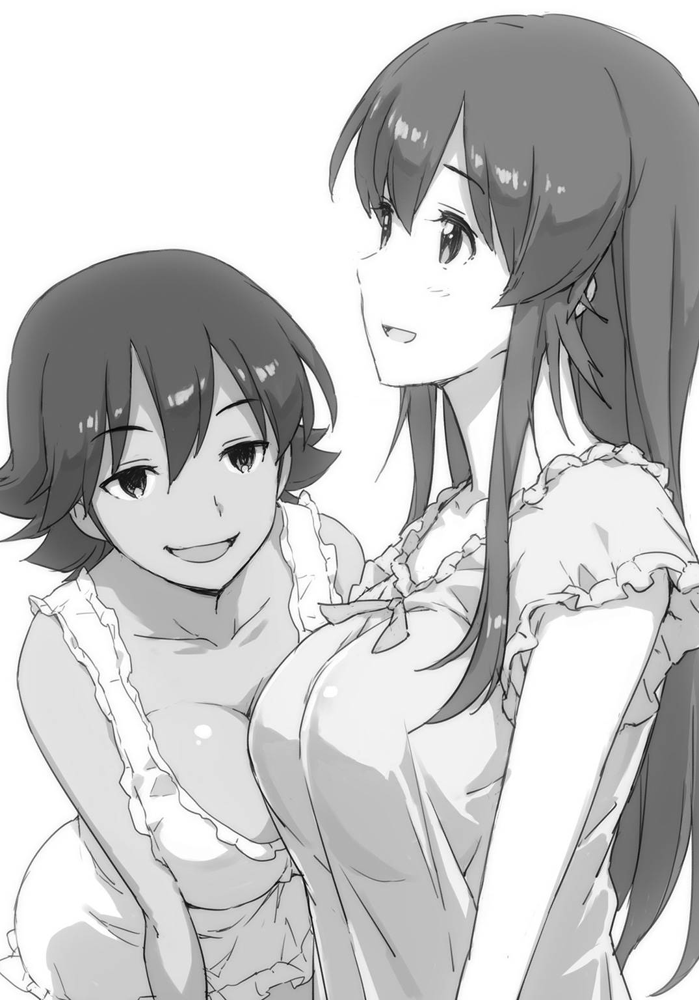
「もうっ！ 乙女とか、乙女とか、乙女とか――イェシカそれよく言うけど。よくわかんないわよ。一八年ずっと武人できたんだから。――ねえ、ルネ？」
「え？ いきなりわたくしに振りますの？ ええまあ。わたくしも一八年間、ずっと〝天才〟をやってまいりましたけど。最近は、天才であるまえに一人の女であることを自覚しますわね。たしかに困ってしまいますわね。......あまり考えたこともありませんでしたが、殿方のお誘いの仕方を、もっと研究しておくべきだったかなと。まあ、わたくしはなにしろ天才ですので。一度見れば覚えられるのですけど」
「いま〝天才〟って言葉が、話の中に三回出てきた。これだから天才ってキライ」
がぶがぶ。アーネストはハーブティーをやっつけにかかった。これは神経が落ち着くやつ。よく眠れるやつ。
「ねえ......？ デートって、どんな感じ？ 誰か、したことあるひとー？」
何気なく発したアーネストの言葉に、皆は、ぴたりと、身動きをやめた。
まじまじと、真顔で、アーネストを見やる。
「え？ あれっ？ 誰もいないの？」
聞いてみたが――手は、なかなか挙がらない。
「ソフィ、貴女――、あったでしょ？」
「あれは普通のデートとは言えなかったわ」
ソフィは首を横に振る。
ブレイドが「普通の青春はデートだ！」と短絡して、ソフィをデートに誘ったのだが、それは一分単位で予定の組まれた超絶メニューのブートキャンプであって、一般的に言うところの「デート」とはいえない。
「え？ なに？ いないの？ 経験者？」
アーネストは、ルナリアを見やった。こいつ。この女。この天才。まえの学校では女帝をやっていて、イケメンをいっぱい、はべらしていた、ひどいビッチである。
「買い物に出て荷物持ちをさせたことでしたら、ございますけど？ ......そういうのでは、ありませんよね？」
「あたりまえ」
イオナや、マオ＆マリアとかは、まあスルーするとして――。
最後の一人、クレアは？
アーネストは、目を向けた。
「あっ――あのね。私も、してみたいかなー、って、思ってるんだけどー」
人差し指の先を、胸の前で、くっつけたり離したりしつつ、クレアは言う。
「買い物して、ごはん食べてー、それからっ！ それからっ――」
「だめね」
そう言ったのはイェシカ。
「そうね。だめよね。ぜんぜんだめ」
アーネストもうなずいた。
クレアは、以前、誰がブレイドをいちばん〝休息〟させられるかというレースで、ブレイドを女子の買い物と、女子の食事とに引きずり回して、「二度とデートに誘われないタイプ」の烙印を押されている。
女子の持つ《デート力》としてのヒエラルキー、最下層、最底辺。
「はぁ......、つまり、なに？ 私たちのなかで、デートしたことあるの、つまり、イェシカだけ？」
「え？ あたし？」
「あるんでしょ。当然」
「えーと、ええ、まあ......」
イェシカは曖昧にうなずいた。
前々から、〝経験豊富〟と、皆から思われている。
イェシカ自身は、否定も肯定もしたことはないのだが――。
「あー、デートって、どんな気持ちなのかなー？」
天井を見上げて、アーネストは言った。これみよがしに、イェシカに投げたつもりなのだが、その当人は、アーネストと違う天井の隅を見上げて、ひゅー、と、鳴らない口笛を吹いていたりする。
「〝普通〟のデートって、どういうのなのかなー？」
ひゅー。
「知りたいなー。知りたいなー。知りたいなー。どこかに知ってる人、いないかなー？」
ひゅー。
「ねー、イェシカ。おねがい！」
ぱん――と、両手を打ち鳴らして、アーネストは合唱した。
「――ひとつ！ 私たちに、お手本みせて！」
「ふぇっ？ お、お手本っ――!?」
「おねがい！ おねがい！ おねがい！」
ぱんぱん、と、何度も柏手を鳴らして、アーネストはイェシカを拝み倒す。
皆も慌ててアーネストにならって、神仏石像みたいに、イェシカを拝んだ。
「おねがいー。イェシカ！」
「ん。魔王たる我が頼むなどということは滅多にないものと思うがよい」
「私もお願いします。ハイスペックな機能で余すところなく学習しますので、ぜひ、機会をあたえてください」
「庶民の庶民による庶民的なデートに、わたくしも興味がありますわ」
「ほら！ ソフィ！ あなたも！」
「お手本を......、見せてくれると、嬉しい。......私は間違ってしまったから」
アーネストばかりでなく、クレアも、ルナリアも、マオもイオナも、そして、なんとソフィにさえ、生き神様みたいに拝まれて――。
イェシカは、首を縦に振らざるを得なかった。
○ＳＣＥＮＥ・Ⅱ「デートの約束」
朝で、学内で、教室で――。
「イェシカ！ イェシカ！ イェシカ先生っ！ ほらブレイドいる！ あそこにいる！ いたーっ！」
「アンナ。落ち着いて」
女の子がデートをするためには、まず、男の子をデートに誘わなければならない。
そこから実演して見せるという約束で――。朝から女の子集団でぞろぞろと連れ立って歩いて、ブレイドとついにエンカウントしたわけである。
「じゃ。やってみせるわよ？ オーケー？」
「うん！ うん！ うんっ!!」
皆がちぎれんばかりに首を振る。
イェシカは皆の元を離れて、ブレイドのところに歩いていった。
「ハーイ、ブレイド君♡」
ひらひと、指先を振って朝の挨拶。
「おー、イェシカー。おはよー」
「ねえ、こんどデートしましょう」
「おー、いいぞー」
「え――!? ちょ――!? 待――!?」
アーネストが飛びこんできた。
「なっ――!? はやっ!? いまなにが起きたの!? なんでこいつ即答してんの!? なんでそんな瞬間的に終わってんの!?」
「どしたの？ こいつ？」
ブレイドがアーネストを指差して、妙な顔をしている。
「だから、そんな気構えるようなことじゃないんだってばー。デートするだけのことでしょ？」
「うわ!? なんか天上人の発言キタ！ 貴女はこれまでデートした回数を覚えていて？ ――とか言われたー！」
「言ってないし」
「なぁ、これ、どうしたんだ？」
ブレイドがアーネストを指し示す。
「ああ。昨日からちょっとへんなのよ。気にしなくていいから。それより。ブレイド君。相手のことを見なくちゃだめ」
イェシカはブレイドの顔を両手で挟んで――自分のほうを向かせた。
「終わって帰りつくまでがデートです。お誘いに〝イエス〟って答えたときから、もうデートは、はじまっているのよ？」
「え？ そうなん？」
「そうよおー」
イェシカは、ブレイドの膝の上に座りにいった。
ごく自然な動作で、すっとブレイドの膝の上に収まった。
「ひ、ひざっ！ のってる！ すごい！ 高等テク！」
アーネストが騒ぐ。指差して、わなわなと震えている。
――なんかうるさいなー。いつもだけど。
ブレイドは、そんなぐらいに思っている。
「じゃあ、いつ行く？ どこ行く？」
イェシカがすぐ近くから、甘く囁く。
「すごい！ カオ近い！ カオあんな近い！ うっわ近い！」
――うるさい。
「んー。そうだなー。じゃあ、明日でー」
「ん。明日ね」
「じゃ明日、時計台に、一二〇〇に集合で、――同、一二〇五に移動開始で――」
と、ブレイドが言いかけたところで、イェシカの指先が、ぴっ――と、ブレイドの唇にあてられる。
「そういうのは、なし」
「なんか唇！ ふれてるふれてる！ さわってるーっ！」
――ほんと。うるさい。
「え？ だめなん？ 俺、そういうのしか知らなくて――」
また、イェシカの指先に、唇を塞がれる。
「――じゃ。お姉さんが、教えて、あ、げ、る♡」
「お姉さん!? お姉さんだって！ お姉さんだって！ ねえ聞いたいまの聞いた!?」
――マジ。うるせえ。
「お、おう」
ブレイドは近過ぎるイェシカの微笑みに向けて、うなずき返すのが精一杯だった。
○ＳＣＥＮＥ・Ⅲ「待ち合わせ場所にて」
日曜日の正午。数分前。
ブレイドは時計台の下で、ぼんやりと待っていた。
日曜日の街中はにぎやかで、デート日和に思える。
もうすぐ約束の時間だが、まだイェシカは来ていない。
やがて、時計台の上のほうから、カチリ、と音がして、ボーン、ボーンと、音が鳴り渡りはじめた。
一二時になった。
だがイェシカの姿はない。
本来なら、ブレイドはここで、「うわわあ。一二〇〇に集合の予定が崩れてしまった！ このままでは一二〇五の予定にも影響が及びかねない！」と、心配で心配でパニックを起こして然るべきところなのだが――。
イェシカから「そーゆーの、なし」と言われて、予定を立てることを禁じられている。
今後の予定はまったくの空白。
よって、心配することはまったくなくて――。
心穏やかなまま、イェシカをぼんやりと待つことができていた。
なるほど。いいもんだな。こーゆーの。
「ハーイ、ブレイド君♡」
たっぷり一〇分も経った頃だろうか。
イェシカがようやく姿を現した。
「待ったー？」
「待ったじゃねーよ。一〇分と三七秒遅刻だぞ」
そのように〝事実〟を指摘してやったら――。
ぴっ――と、指先で、唇を押さえられる。
「こういうときは、〝いいや。全然。いま来たとこだよ〟――って、言うものよ？」
「そうなん？」
「ええ。そう。......いい男ならね」
「そっかー」
ブレイドは感心した。素直に学習した。元勇者的に超学習した。
これは虚情報をわざと相手に伝える、戦略の一種だと理解する。
「いいや。全然。俺もいま来たとこさ」
......そこでちょっと考えて、自分の遅刻の理由を〝創作〟して付け足した。
「今日のデートが楽しみで、昨日、あんま寝れなくってさ」
これは虚情報。――事実は、いつも通りに、ぐっすりと眠れている。
「あらま。――合格っ」
イェシカは目を丸くして、そう言った。
合格がもらえた。
ちょっと嬉しい。スタンプカードでも作って、首から提げて、合格マークを押していってくれると、もっと嬉しいんだけど。
「ところでイェシカ」
「なに？」
「ええと、なんだっけ？ ......おめかし？ ――とかいうの、しないのか？」
ブレイドは彼女の服装を上から下まで見た。いつもと変わっている点は、特に見あたらない。
ベルトのバックルの形が違うとか、足の片方だけニーソが違うとか、そういう、よくある引っ掛けポイントもきちんと確認したが、まったく同じだ。
足の爪に塗ってある色と模様は違っているが、これはイェシカの場合、毎日異なっている。よってそこの違いは〝おめかし〟ポイントではないはずだ。――それともひょっとして、毎日違う色と模様に、暗号的意味でも含まれていて、そこを察知するのが〝おしゃれ〟というものなのだろうか？ だとしたら元勇者には難しすぎる。暗号戦の専門家は諜報部員たちだ。
「おしゃれ？ してきてないわよ？ ――なに？ してきてほしかったのー？」
「いや。そういうわけじゃなくて。――ああもちろん。見たかったけど」
さっき覚えた「デートの正しい受け答え」に従って、ブレイドは事実と反することを言った。
女の子はデートのときにおめかしをする。――と、知識として覚えていただけであって、〝おめかし〟というのが、具体的にどうすることなのかは、わからない。
イェシカが〝おめかし〟をしてきていたら、学習できると思ったのだが。
「ブレイド君だって、してきてないじゃない」
「え？ 男もするもんなの？ ――おめかし、っていうの？」
「あったりまえでしょ。――あたしだけドレスアップしてきたら、ブレイド君、浮いちゃってたわよ？ どうしよう？ どうする？」
「えー？ それはいやだなぁ」
「でしょ？ いいオンナはね、オトコに恥をかかせたりしないものなのよ」
「そうなんだ」
なるほど。気遣いだった。
「ありがとな」
にこっと、笑いかけると――。
イェシカは、ちょっと目線を脇に逸らして――。
「う、うんっ」
調子を崩したように、慌ててうなずき返した。
ブレイドとイェシカのデートは、こうして始まった。
○ＳＣＥＮＥ・Ⅳ「尾行組」
デートを開始した二人を、陰から見守る、一団があった。
「あーもー、イェシカ......。並んで歩いてるだけ？ あっ！ 手つないだ！ 腕とりました！ とったよ!?」
「な、な、な、なによ――ちょっとアレ!? くっつきすぎじゃないの!? お手本見せるだけなんじゃないの！ ぺったぺた！ ぺったぺた！ ――って!?」
「普段ならイェシカが突っこみを入れる役なのだが。いまは誰もおらんぞ」
「私のハイスペックな機能をもってすれば突っこみ役をこなすことも、造作もありません。ですがそのためには〝ハリセン〟という古代の兵器が必要になります」
女子たちのうち、興味がある者は〝公開尾行〟に乗り出していた。
ずっとまえに、ソフィとのデートのときには、こっそり隠れての尾行だったが、今回のデートの目的は「お手本」を示すことにある。よって、尾行付きとなることは、了承済み、織りこみ済み。
女子一同は公然と尾行していた。街灯の柱に半分身を隠しているのは、なんとなく、気分である。
「食料の支給よ」
「え？ なによ、どうしたの？ ソフィ？」
頭の上から振ってきた菓子パンに――アーネストは妙な顔を返す。
「......？ 菓子パンとミルクを支給されるのが、尾行の正式な作法ではないの？」
「......？ そういや、まえの、あんたのときにも、こんなの食べたけど......。――って、気づいてたわけ？ 気づかれていたわけ？ 私たち？」
ソフィは無言で、こくこく。アーネストはとりあえず菓子パンを受け取った。
「ああ。やっぱ、甘くて、おいしー。この黒い甘いのが入ってるパン。ほら――クレア。あなたも食べなさいって。落ちつくから」
「あっ！ あーっ！ イェシカそんなにくっついちゃって、ほっぺが、ぺたーって！ ほらアンナ！ ほっぺ！ ほっぺ！ ぺったぺたー！ イェシカもやっぱりブレイド君のことをす――むぐぐぐっ」
アーネストは、〝アンパン〟という名前の甘いパンを、クレアの口のなかに、ぎゅうぎゅうと押しこんだ。
エキサイトしていたクレアを黙らせる。
なに？ なんだって？ 最後、なに言ってた？ イェシカが、ブレイドのことをす――？ ですって？
そんなこと、あるわけないでしょ。あったら、デートのお手本とか、頼んでないでしょ。
ほんとに、もう。なに言ってんのクレアってば。
だいたい、それは喜ぶところじゃないでしょ。これ以上増えてどうすんの。困るでしょ。困るわよね。
あー。アンパンが甘いー。甘いのは、つまり、美味しいー。
癒されるるるるる。
「えー！ イェシカ！ お買い物はだめだって、言ってたのにぃ......。お店、入っていったよ？」
「あらほんと」
クレアに袖を引かれて、アーネストは我に返った。
ブレイドとイェシカは洋服店に入ってゆくところだった。
○ＳＣＥＮＥ・Ⅴ「お買い物」
「俺ー。服なんて、選んだことないんだよなー」
ずらりと並んだ「服」を前に、ブレイドはそう言った。
「ファッションなんて難しくないのよ。要は自己表現なんだから。好きな服を、好きなように、着ればいいんだから」
イェシカは明るく言う。簡単そうに言う。
勇者時代からこちら――。「服」とか「鎧」とかいうものは、支給されるもので――。自分で選んだことなど、一度もなかった。
どうやって選べばいいのかも、わからない。
自分が、どんな服が好きなのかさえ、わからない。防御力が高いとか、そういう基準で選ぶのではなさそうだ、というところまでは、わかるのだが......。
「俺、この服、好きなんだと思う？」
いま着ているガッコの制服を指して、イェシカに聞いてみた。
「わかんないなら、いい方法、教えたげよっか？」
「教えて。教えて」
「ときめくかどうかで、選べばいいのよ」
「ときめく、か？ 難しいなぁー」
「じゃあ、心が、ぴょんぴょんするとか」
「ぴょんぴょんかー。それもよくわからないなー」
ん......？ まてよ？
「俺。この制服、けっこう好きなのかも？」
自分のいま着ている服を引っぱって、ブレイドは言った。
「うんうん。どのへんが？」
「ふつーっぽいところ！」
制服は良い。制服はすごい。なにしろ皆が同じ服を着ている。
つまり制服さえ着ていれば、普通であり一般的であることができる。
考えたやつ。すげえ。尊敬する。
勇者時代は、この世に一つしか現存しない一品物の鎧とか、そんなものばかりを着ていた。そうした鎧も、激しい戦闘に耐えきれず、すぐにぶっ壊れてゆくわけだが――。
そしたらまた別の、世界に一つしかない、またほかの一品物に乗り換えてゆくわけだ。それを次々と。延々と。
「ふんふん。じゃあ。これなんていいんじゃないかな？」
イェシカは鼻歌でハミングしながら、シャツをブレイドの胸にあててきた。
「これは？」
「普通のシャツ。普通のＭサイズ。既製品だから。――ほら」
と、後ろを示す。まったく同じ柄の同じシャツが、ずらりと、何枚も並んでいた。
「おお！ すげー！ 普通だっ！」
「普通のシャツと普通のズボンで選ぶから。あたしに選ばせてくれる？ コーディネートさせてもらっていーい？」
「うん！ うん！」
ブレイドはイェシカに、何度も力強くうなずいた。
イェシカといるのは、自然体でいられて、すごく、心地がよかった。
◇
尾行は続いている。
「イェシカってば――、お買い物は、だめだって、言ったのに言ったのに言ったのに――。自分は買い物してるー」
クレアが、ぎりぎりとしている。
以前、「デートで買い物」でもって――クレアはＮＧ女の烙印を押されていた。
「買い物は買い物でも、あれ、自分の買ってないわよね？」
店の外からなかを覗きこんで、アーネストが確認する。
クレアのときには、さんざん、はしゃぎ回って、自分の服やカワイイものを買いまくって、ブレイドに荷物持ちをさせていたわけだが――。
イェシカが買っているのは、ブレイドの服ばかり。
「なるほど。男の子の買い物に付き合ってあげれば、ＯＫになるのね。買い物エンターテイメントね。......参考になるわ」
「ええーっ？ どこ？ どこが違うの？ 私のときと......？」
クレアはそう言った。
本気でわかっていないっぽい。
そんなクレアに、アーネストは――こう言ってやるしかなかった。
「引っこんでなさい。貴女には無理よ」
「しどい......」
「あ......。出てくるわよ。二人」
ささっと隠れる。まあ尾行については承諾済みであるので、隠れる必要はないんだけど......。
顔を合わせると、なんだか、気まずい。
店を出た二人は、皆が隠れている街灯のほうには来ないで、反対側に向かっていった。
一同は、街灯を一本ずつ移動していって、二人と等距離を保って尾行を続けた。
どこかの子供が、面白そうな顔をして近づいてきたが、しっしっ、とやって、追い払う。
野良犬がおしっこ引っ掛けにきたが、それも、しっしっ、とやって、追い払う。
「ブレイド様。あんなに嬉しそうに」
「あいつ。服なんて興味あったの？ いっつもガッコの制服着てるくせに」
「なるほど。殿方を笑顔にさせるのが、いい女というものなのですね。大変。勉強になります」
「笑顔くらい、私だってね？ いつもさせているわよ？ あいつ、マッサージしてやると、ほにゃらん～って、幸せそうな顔になるんだから？ 知ってる？ ねえ知ってる？ 知らないでしょ？」
「あら。また腕を組みましたわ」
「なんですって」
ルナリアの言葉を聞いて、ぎぬろ、と、アーネストは前に向いた。
「アンナー、ほら、ぎりぎりしないのー。しちゃだめだからー。見守ってあげないといけないからー」
ぎりぎりしているアーネストを、今度はクレアが落ちつかせる。
「また服屋さんに入っていったわよ。こんどは女物」
「えええっ？ それって私のときと、どうちがうの!? ほんと――ほんとに教えて！ なんで私、だめで、イェシカいいのっ!?」
「クレア、ぎりぎりしないの！」
「ぎりぎりしてるのはアンナだよう」
「二人とも、小うるさいですわよ」
◇
「ねえ、これ似合う？」
「にあうー」
「合格」
「えへへ」
服を試着して、カーテンを開いたイェシカに、ブレイドが言う。
ブレイドは知っていた。女が着替えたら、いついかなる場合においても、「似合う」と言わねばならぬのだと。その通りに行動したら、「合格」がもらえた。
すこし、嬉しい。
「これはー？」
カーテンが閉まって開く。
またイェシカがポーズを取る。
こんどは前の服より、ぐっと布面積が少ない。
だがブレイドに迷いはない。
今回もまた、当然、原則にしたがった。
「にあう」
「ちがうわよ。こういうのは、セクシー、とか、グッとくる、とか言うべきね」
「そうなんか」
勉強になったー！
「ねえ......、ブレイド君？」
「うん？」
イェシカは髪をかきあげ、ぐっと背筋を反らしてポーズをかえた。
「勃っちゃう？」
「なにが？」
「ブレイド君には、やっぱー、まだ早いかー」
「だからなにが？」
イェシカはしゅっとカーテンを閉めて、試着室に戻った。
「覗いても、いいわよー」
「......なんで？」
ブレイドは、ほとほと、首を捻っていた。
なんで覗くんだ？ なにゆえに？
○ＳＣＥＮＥ・Ⅵ「ジュースを飲む」
「あら。ここ。懐かしいわね」
街を歩いていたら、イェシカが足を止めた。
「ほら。まえ。ここ寄っていたでしょ？」
周りを見て、ブレイドは、「ああ」と答えた。
路上に店を出しているパーラーだった。ソフィと一緒にデートしたときに、立ち寄った覚えがある。
それを「懐かしい」と言うからには、あのとき、尾行していたなかにイェシカもいたわけか――。
「ジュース、飲んでく？」
「いや俺はべつに――」
と、言いかけて、相手のことを思いやるのが「デート」だと、イェシカに教えられたことを思い出した。
「イェシカは、喉、渇いている？」
「すこしね」
「じゃあ飲んでいこう。当然。飲もう」
◇
めきょっ――。
街灯の鉄柱が、指の形をつけて、凹んだ。
「どうどう。――ソフィ。落ちついて。落ちついて。ね？」
「私は冷静よ」
「へこんでる。へこんでる。街灯へこんでるって。なんて握力なの」
アーネストは笑えばいいのか呆れ顔をすればいいのか、困り果てていた。
こんどはソフィがぎりぎりとしていた。
ずっと静かに見守っていたソフィが、二人がジュースを注文したあたりで、ぎりぎりとしはじめたのだ。
ここは......。見覚えのあるパーラーだ。
ソフィとブレイドがデートしていたときに、二人で、ラブラブなんとかという、恥ずかしい名前のジュースを飲んでいた場所だ。
「ねえソフィ？」
「なに？」
「ブレイドが幸せなら、よかったんじゃないの？」
「ブレイドが幸せなら。私はそれでいいわ」
「じゃなんで鉄柱、へし折るの？」
「ブレイドが幸せなら。私はそれでいいの」
ぜんぜん答えになってない。でもアーネストにはわかった。
ブレイドに対するソフィは、超然としていて、まるで聖母で、たまに怖く感じるほどであったが――。
やっぱり、自分たちと同じなんだなと――親近感を覚えた。
ほら、ソフィだって、ぎりぎり、するじゃーん。
◇
大きなジュースに、ストローが二本。
以前も飲んだことのある「ラブリー・インフィニット・トロピカル・ドリンク」が目のまえにあった。
「ここのジュースって、カップルが飲むものだって、知ってた？」
「おう。知ってるぞー」
「カップルって、意味、わかってる？」
「おう。男と女の、二人組なー。俺とイェシカ。いまカップルなー」
ブレイドは、自分の胸と、イェシカの胸を、交互に指差した。
「あん。もうカワイイんだからー。――じゃあさ、じゃあさ、ここのジュースは、ただのカップルじゃなくて、愛し合ってるカップルが飲むものだっていうことも、知ってた？」
「ん？」
そこは知らない。
「俺さ......。〝愛〟って、よくわかんないんだよなー」
「あら。愛談義。はじまっちゃったのかしら。これって」
「〝愛〟って、あれだろ？ 〝好き〟の同類だろ？」
「まあ近いわね。友達に対する〝好き〟じゃないほうの〝好き〟のことだったら、まあ、同義よね」
よし。ここまでは、合ってる。
「それって、ようするに、〝交尾〟とか、そーゆーのか？」
女医がよく迫ってくる。〝求愛〟とかしてくる。
〝交尾〟を迫ることが〝求愛〟なら、〝愛〟とゆーのは、〝交尾〟の同類であるはずだ。
「いやー。そういう言いかたはぁ――、ちょっと、身も蓋もないかなって」
「ちがうの？」
「いやー。ちがうというかー。近しいっていうかー」
「どっちなん？」
ブレイドは、通りを見回した。
カップル――多し。
日曜日の午後。通りを歩く人たちの、だいたい四分の一くらいは、男女の組で――つまり、カップルだった。
「あれは？ ――〝愛し合ってる〟カップル？」
ブレイドは、一組の男女を指差した。
「まだね」
「まだ？」
いまいち、よくわからない返事だった。
〝まだ〟ってなんだ？ 〝まだ〟って？
「じゃあ......あれは？」
また別のカップルを指し示す。
「してるわね」
こんどは明確な返事。おおう。交尾済みカップルを大発見！
「あれは？」
「してるわね。何十回もしてるわね。――てゆうか。夫婦だし。あたりまえだし」
「何十回もか！」
すげえ！ それ！ 一生分ぐらい交尾してないか!?
「ね。なんであたしたち、人様の交尾回数の、クイズないしはソムリエやってんの？」
「え？ いや。おもろいけど？」
「ね。ブレイド君って......、あたしと、交尾、したかったり、する？」
テーブルに頰杖をついたイェシカは、小指を口に含んで、ブレイドに訊ねた。
「......うーん？」
ブレイドは腕組みをして、本気で考えこんだ。
なんだか難問を突きつけられてしまったぞ。
◇
「ねー、なに話しているのよ？」
こんどは、ぎりぎりしているのは、アーネストだった。
ソフィとイオナ――。諜報系のスキル持ちと、ハイスペック機だけが、距離を通して、会話を聞くことができていた。
二人とも、会話を聞いているはずなのに、意外にも穏やかな顔をしている。
ソフィのほうは、ぶつぶつと口の中で呪文のように、「ブレイドが幸せなら私はそれでいいわ。ブレイドが幸せなら私はそれでいいわ。ブレイドが幸せなら私はそれでいいわ」と繰り返し続けているが、それだけだ。
「ねー、二人、いま、なに話しているのよー？ 教えてよー？ 教えなさいよー？ 聞く権利あるでしょー！ 私！」
「聞かないほうがいいわ」
「なんでよー！」
「下がっているべき。貴女には無理だから」
「ムキーっ!!」
○ＳＣＥＮＥ・Ⅶ「オトナ♡デート」
買い物をして、カップル専用ジュースを飲んで、そのあと、あちこちでたくさん遊んだ。
カップル専用ゲームをプレイして、カップル専用ファストフードを食べて、カップル専用似顔絵スケッチのツーショットを、街の画家に描いてもらった。
「さ。ブレイド君。つぎはどこ行く？ なにして遊ぶ？」
「いやー、もう、すっげー遊んだしなー」
そろそろ寮の門限じゃなかったかな。
ブレイドは時計塔を探した。
街のだいたいのところから、時計塔の文字盤は見えるのだが、この裏通りからは、ちょっと見えない。
「遊びすぎて、疲れちゃった？」
「ん？ いや......」
べつに疲れてない、と、答えようとして――ブレイドは、思いとどまった。
虚情報を相手に返すことが、「優しさ」であり、「いい男」なのであると――。
本日、イェシカに教わった。
本日、超学習した。
「ちょっと疲れたかな」
「じゃ、休憩でもしていくー？」
絡め合った腕を、くいっと引かれた。
いや。イェシカが立ち止まった。
彼女の目が見ているのは、なんの変哲もない、一軒の建物。
なんの店なのかわからない。「ＨＯＴＥＬ」とか「ご休憩所」とか看板が出ている。
つぎに遊ぶ場所が、ここなのだろうか。
イェシカはなんて言ってたっけ。休憩するって言ってたっけ。
じゃあ、休むところか。ここは。「ご休憩所」と書いてあるし。そうだな。きっと。
「うん？ どしたん？」
イェシカがこちらを向く。
その顔は、はじめ、無表情に見えた。
誘われているのか。それとも、ただ彼女は、なにも考えていないだけなのだろうか。
ブレイドにはよくわからない。
決めろ、と、そう言われている気がした。
うーん。うーん。うーん。
本当は、べつに、疲れてないんだがなー。でも、さっき疲れたって、虚情報を伝えちゃったしなー。
休んでゆくのが優しさなのか。
やっぱいいやと言うのが優しさなのか。
どちらが正解で、合格なんだろう。
またイェシカから、笑顔とともに、「合格」をもらいたい。
どちらを選ぶのが、「いい男」になるのだろうか？
難問だ。
ブレイドは考えた。
うーん。うーん。うーん......。
◇
公開尾行は、続行中であった。
「あ、あのね......。そのね......。これは私の勘違いかもしれないんだけどね......」
アーネストが、人差し指を胸の前で突きあわせながら、皆に聞く。
「あそこの。二人がいま入ろうかどうしようかで悩んでいる。あのお店ってね......。お店っていうか宿屋さんって感じの、キラキラしてるわりには、なんか暗い感じもある、あの不思議な場所なんだけどね......。もしかして、私の推測が正しければ......、あの......あれって......？」
「アーネスト。貴女の考えている推測は、事実であり正解である蓋然性は、かなり高いと言わざるを得ません。ちなみに推測を聞かされていない状態でも、貴女がなにを言わんとしているのかは、正しく完璧に把握できています。――ハイスペック機ですので」
「えっ？ えっ？ えっ？ ええっ？ た、正しい――って！ じゃあやっぱりーっ!?」
「えっ？ あ、あのっ？ な――なんですか？ なんなんですかー？ あの、みんな？ 私もここにいますよー？ わかるように話してくださいよう。おねがいだからー！」
「ブレイドが幸せなら、私はそれでいいわ」
「ちょ――!? ソフィ！ だめでしょ！ よくないでしょ！ いいの!? 本当にっ!?」
「よくないけど......。いいの」
「よかないっ！」
アーネストは敢然と主張した。
たとえ世界が「ＹＥＳ」と言っても、彼女はただ一人でも「ＮＯ」と唱えただろう。
その気概で「ＮＯ」と叫んだ。
◇
ブレイドは、悩むのをやめた。
「よし。決めた。あのな――。俺は――」
答えを待つイェシカに向けて、言いかけたところで――。
「決めるなーっ!!」
「ぐほおぅ！」
脇腹にドロップキックを食らって、ブレイドは数メートルも吹き飛んだ。
キックを食らう五〇〇ミリ秒くらい前から、充分に感知していて、避けることもできたわけだが、女帝がお怒りあそばされていたので、あえて、受けることにした。
「なんだよ。急に横から出てきて」
むくりと起きあがる。不意を打たれたわけではないし、たとえ不意を打たれたからといってダメージを食らっていては、勇者など務まらない。――もう勇者じゃないけど。
『ご休憩所』の前で迷っていた、一介の、普通極まりない一般人の男子だけど。
「あっさり決めるな！ この！ すっとこ超生物めがっ！ そこらの人類の男みたいに！ 優柔不断に悩んでろーっ!!」
「なに怒ってんだよ？」
「怒ってない！ 止めに来ただけ！ ――イェシカ！」
ずびし――と、アーネストは、イェシカに人差し指を突きつけた。
「お手本見せるだけって言ったじゃない！ なにガチになってんの！ 本気になってんの！」
「でもねえ。オトナのデートの最後っていったら、やっぱし、ねえ......？ 遊んで食べて、じゃ、バイバーイじゃ......。完全燃焼しない、っていうかぁ、ちゃんと終わった感じにならないっていうかぁ......？」
「燃えなくていい！ 終わんなくていい！ てゆうか終わっちゃうから！ だめ！ ぜったい！ 本気禁止っ！」
「あれ？ ......あたし、本気に見えてた？」
「見えてたっ！」
「そっか。......じゃ、そうなのかもね？」
イェシカはぺろりと舌を出して、いたずらっぽく言う。
「えっ？ マ、マジで......？」
アーネストは、ぎょっとした顔をイェシカに向ける。
「――ね？ ブレイド君は、どっちだと思う？」
急に話を振られる。
ブレイドは肩をすくめて返した。
なにが「どっち？」なのか、まったくわからない。本気ってなんだ？ なんに対しての〝本気〟なんだろ？
「......とにかく！」
アーネストは、おほん、と、咳払いをひとつ。
「はい！ はいはい！ 帰るわよ！」
「痛い。痛い。おい痛いっての。耳ーっ！ ちぎれるってのー！」
耳を引っぱられ、ブレイドは大きく騒いだ。
「ちぎれたらクレアに直してもらえばいいでしょ！ はい！ 行くの！ 帰るのっ！ ご休憩はなしっ！ 絶対なしっ！」
ブレイドは引っぱられていった。
アーネストは容赦なく、引っぱっていった。
と、アーネストは、ブレイドを引きずる途中で、周囲および、上のほうに顔を向け――。
「はい！ みんなも！ 撤収ーっ！」
公開尾行していたのは、アーネスト、クレア、ソフィ、イオナ、ルナリア――この五人だけだったが。
非公開尾行をしていた数人が、物陰や建物の上から姿を現し、ぞろぞろと、帰路へとついた。
その彼女たちを見守ったあとで、アーネストは、くるりとイェシカに振り向き――。
「......あっ！ イェシカ！ 今日はほんとありがとねっ！ 無理言って悪かったわね！ でもおかげで！ ものすっごーく――参考になったから！」
「どういたしまして」
イェシカは、微笑んで返した。
その顔に、すこしだけ、謎めいた笑みを浮かべて――。
第九話「美女と魔獣」
○ＳＣＥＮＥ・Ⅰ「後輩あるいは弟子を所望」
いつもの午後。いつもの試練場。
ブレイドはアーネストと、かきんかきん、剣を合わせていた。
「最近、剣の使いかたが、いい感じじゃないか」
「そうお？ 褒めたって、なんにも出やしないわよ？」
「べつに褒めてはいないさ。事実を言っただけ」
「ふふっ......。だったら嬉しいな」
剣を振るう合間に、アーネストは微笑んだ。
以前のアーネストの剣技は、よく言えば豪快、悪く言えば大雑把。
絶対に壊れない魔剣――の、その性能に、あぐらをかいて、ぶんぶんと力任せに振り回していた。
だがそのせいで《アスモデウス》を、一度、折ってしまっていた。それからのアーネストには、戦いかたに変化が現れた。
「貴方の剣の使いかたを見習ったんだけど」
「俺のはただ節約してるだけなんだが」
ブレイドは、ぼやいて返した。
剣をいたわっているのは確かだが。
それは〝本気〟で使ってしまうと、たった一撃でさえも、剣が持たないからだった。
一八パーセントの減速運転中とはいえ、元勇者が本気を出して、持ってくれるような剣は、王国にもそう何本はないだろう。
学校で支給される剣は、世間一般的には、かなりの魔力が付与された剣なのだろうが......。相当気を遣って、優しく注意を払って、大切に取り扱わないと、すぐに崩壊していってしまう。
勇者時代に使っていた剣は、伝説の剣とか、伝説中の伝説の剣とか、そんなクラスばっかりだったから、遠慮なくぶんぶんと、アーネストが野蛮だった頃のように振るっていたものだが。
アーネストは、ブレイドのその省エネ剣技を見習っている。
まあ、そのうち、なんかの役には立つかもしんない。たとえばもっと普通の学校に入って、普通の剣を使って授業を受けるときだとか――。
「お姉様ー！ 教えてくださーい！ お姉様ーっ！ きゃーっ！ こっち向いてーっ！」
試練場の片隅から、そんな黄色い声が響いてきて、アーネストは動きを止めた。
ちいいっ――とか、壮絶な舌打ちが聞こえてきた気がするが、たぶん、気のせいだろう。
「ルナリアは、人気だなー」
皆とのあいだに置いていた〝壁〟も取り払われて、角も取れて丸くなった彼女は、最近、すっかり下級生の人気者だった。
なぜか下級生の〝女子〟から人気がある。
いま群がっているのは、お姉様に教えてもらいたい系女子たち。
「なんで私のところには、一人も来ないのよ」
アーネストはそう言って、ぼやいた。
「おまえに教わると、〝じゃあまず素振り一万本からね〟とか言うからだろ」
「天才のそばにいたって、天才がうつったりなんて、しないわよ？ 凡人が天才を追い落としてやろうと思ったら、まず、素振りの十万本くらいからでしょ？」
「増えてるし」
ブレイドは笑った。アーネストはルナリアが人気なのが気に入らないのだ。
〝嫉妬〟とかゆーのをしているのだ。
ブレイド自身は〝嫉妬〟とかいう感情は、実際、よくわからないのだが......。
アーネストのいまの顔が、いわゆる世間一般的に言うところの〝嫉妬〟とかいうのであることは、なんとなく判断がつく。
つまりアーネストは、自分も教えたいのだ。きゃー、とか言われ、慕われたいのだ。
「はぁ......。どこかにいないかしらね？ どんな荒行を言いつけても嫌がったりしない、カワイイ年下の、ガッツがあって教え甲斐のある相手とか」
アーネストが、そうつぶやいた途端――。
「やあ。マイロード。良い天気だね」
通りすがりのレナードが、ささっと前を横切っていった。
「はいはい。いいお天気ね。貴方の頭もいいお天気そうね。レナード」
レナードは、はいはい、しっしっ、と、追い払われた。
あーあ。......かわいそうに。
いるのに。ガッツがあって荒行を言いつけても唯々諾々と従う相手が。
カワイイ年下ではないけど。同い年のイケメンだけど。
「ほら。――よそ見してんじゃない」
ブレイドは、びゅっと、突きを繰り出した。
アーネストの髪の一房を落とした。
「ちょ――切ったでしょ!? いま髪切ったでしょ!?」
「よそ見してると、丸刈りにしてやるぞー」
「コロス」
本気となったアーネストと、ブレイドは、かきんかきん、剣を合わせた。
○ＳＣＥＮＥ・Ⅱ「魔獣との出会い」
ひさびさの休日。ひさびさの街。
厳しい修練に明け暮れるローズウッド学園の生徒といえども、週に一度くらいは、余暇を楽しむ日があってもいいはずだ。
アーネストは週に一度の〝自分へのご褒美〟を満喫中だった。
街を一人で歩いている。
女の子同士で、ショッピングやレストランでのランチを楽しむのもいいけれど。
一人でぶらぶら、特に目的を定めず、あちこち見て回るのが、やたらと楽しい。
本当に――。
時間を無駄に過ごすということは、最高の贅沢であるのだと、そう思う。
普段のぎっちり詰まった訓練スケジュールから逃れて、ほんのひとときと決めた、二時間ばかりの〝自由時間〟を、アーネストが満喫していると――。
なにか、遠くのほうに、人だかりができていた。
おもしろそう。行ってみよう。
アーネストは、特に深く考えもせず、そちらへ向かった。
◇
「グオオオオオ」
なんか、でっかいのが、咆えてた。
「なに......、これ？」
身の丈およそ三メートル。
狼と人を掛け合わせたような、そんな異様なフォルムを誇る怪物が、街の外れの鍛冶屋の並ぶ工房街で、天に向かって咆えていた。
「お嬢ちゃん、魔獣を見たことはないんかね？」
鍛冶で鍛えあげた、太い腕の職人が、気軽な感じで話しかけてきた。
「お？ お嬢――？」
「......ああ、街のなかの連中は、魔獣は、見ねえかー。魔獣はめずらしいかー」
「い、いえ、ありますけど？」
アーネストは慌てて、そう言った。
魔獣なら、うちのガッコにも何人、それとも何匹？ ......か、いる。いるはず。
しかし魔王はハーフで、クーちゃんは竜化しているときは滅多になくて、アインとツヴァイは、大きさこそ異常だが、形は単なる〝鳥〟って感じで――。
そういえばアーネストは、本物の正真正銘の〝魔獣〟というものと、出会ったことがないことに、気がついた。
「ええと......。これは《魔狼族》......でしたっけ？」
アーネストは書物で見た記憶を引っぱりだしてきた。
狼のフォルムを持ち、手足は人に近い魔獣。
身長は個体差があるが、三メートルから五メートル。体重は数百キロから一トン強まで。速度に優れ、高速戦闘を身上とする。
うん。間違いない。
「おお。お嬢ちゃん。よく知ってんなー」
男は言う。〝お嬢ちゃん〟呼ばわりされていることが、なんか、妙にこそばゆく感じる。
ローズウッド学園の主席であり〝女帝〟であることを名乗ろうかと、一瞬、思いはしたものの――。通りすがりの〝お嬢ちゃん〟の立場に甘んじておくことにする。
「あの魔獣、どうしたんですか？ なんで咆えてるんですか？ てゆうか。なんで、こんな街なかに魔獣が来てるんですか？」
「ここにはしょっちゅう来てるけんどー。やつら。工房に用があるのさ」
「え？ しょっちゅう来てる？」
アーネストには初耳。こんな外郭とはいえ王都の都市に、魔獣が出るなんて、学校で教わっていない。
魔獣という生物（？）は、本来、荒野あるいは、〝魔界〟と呼ばれる地下世界に棲息しているものだ。
生物（？）と、「？」が付いてしまうのは、魔獣という存在が、生物であるのかどうかが、定かではないからだが。
「魔獣とは生物か？」――学者のあいだで行われる長年の論争には、いまだ決着がついていないという。
生物とは――その定義は、生まれ、生き、繁殖して子孫を残し、そして死んでゆくもののことである。
魔獣も生まれる。正確にいえば〝発生〟をする。
地下の奥深く、一定以上の濃度の〝瘴気〟の溜まった場所から、成体の形で、いきなり発生する。
魔獣の中でも、竜種などは卵を産む。夜魔族などは人間と交配して交雑種を残す。だがむしろ、そうした増えかたをするほうが、レアなケースなのだ。
一般的には、魔獣は〝湧いて〟くるものとなっている。
そして発生したばかりの魔獣は、図体はデカいが、まだ知能というものを持っていない。
ただ、戦い、喰らうだけの存在だ。
そして基本的には不死である。寿命というものを持たず。肉体の損傷に対する再生力は不死身といってもよいほど。
そんな魔獣が消滅を迎えるのは、〝喰われた〟場合に限られる。
それでもそれが、いわゆる通常の生物における〝死〟と等しいのかという議論は、やはり学者のあいだで、長年、決着をみていない。
消滅した魔獣は瘴気へと還り、地底で循環して、そして再び生まれ変わってくるという説がある。
その際に、魔獣は、「自分を倒したもの」の性質を色濃く受け継いで再誕してくる。
自分を倒したもの――。すなわち、自分より強いもの――。
その姿と能力を得て、生まれ変わってくるというのは――強さを求める存在として、非常に理にかなっているといえた。
倒された魔獣は、新たな姿を得て生まれ変わるが――。
勝って、勝って、勝ち続けていった魔獣は、やがて変化する。
戦って、戦って――、勝って、勝って――、喰らって、喰らって――。
そうするうちに、魔獣には、「知恵」が芽生える。
充分に力をつけていった個体は、「もっとうまく戦い、もっと勝つには、どうすればよいか？」と考えるようになる。
人語を学び、言葉を話すようになるのは、このあたりからだ。
人は、まず知恵を持ち、言葉を話し、それから武芸を学んで強くなってゆく。
魔獣は、人とは、まったく逆のプロセスを経る。
強くなってから、知性を持ち、言葉を話すのだ。
「しかし、ありゃあ......、まだ、〝なりかけ〟だなぁー」
魔獣を見ながら、男が言う。
「なりかけ、ですか？」
「さっきから。ぐおー、しか、言ってねえだろ」
「あ、ほんと」
グオオオオオオ――。
また叫んだ。
「あれはー、たぶん......。なんかー、〝人〟のとこいって、〝武器〟を手に入れりゃー、自分はもっと強くなれるー、とか、思ったクチだぁなぁー」
「はあ」
ぼんやりと突っ立って、ただ咆えてるだけの魔獣を見ながら、アーネストは生返事をした。
「あんまり、頭良さそうなイキモノに見えないんですけど」
「だから、なりかけなのさー。言葉も、まだうまく喋れねえ」
「ブブブ......、ブキ」
と、そのとき、魔獣が喋った。人語を発した。
「しゃべった」
「ああ......。でもさっきから、あれしか言わねえ。俺らの仲間も、どんな武器が欲しいのか、わかんねえで、困ってる」
魔獣は両手を広げたり動かしたり。
なにかを伝えようとしている。応対している何人かの職人も、手を広げたり動かしたり、意思疎通をはかろうとしているが、どうも、うまくいかない。
「魔獣に武器を渡してあげてるんですか？」
「ああ。俺ら。鍛冶屋だからなー。武器。使ってくれんなら。人でも魔獣でも。べつにどっちでも構わんさー」
「え？ お代とかって......？」
まさか魔獣がお金を持っているとは思えない。サイフを開けてお金を払っていったら、マジウケる。
この工房街で作られる武器は、王国の主要な輸出品にもなっているぐらいで――魔力付与された、優秀な魔法の武器だ。ローズウッド学園にも納入されている。
そんなに安い代物ではないはずだけど......？
「はっはっは！ ――出世払いさ」
男は豪快に笑った。
「俺らの武器を使いこなして、もっと強くなりゃ、もっと賢くなる。そうしたら、そのときに出世払いで、返してもらうさ。俺たちの子か孫か、どこになるのかは、わかんねえが、〝恩〟って形で返してもらえばいいさー」
霊獣級にまで強さを極めた魔獣は、人間以上の知性を持つようになるといわれる。
そして霊獣のなかには、人を守る存在もいるという。
先の魔王との大戦の最中には、多くの魔獣、霊獣、そして神獣までもが、人の側に与して戦ったという。
アーネストは、なぜ、魔獣が人の味方をしてくれたのか、すこし、わかった気がした。
魔獣は、職人の一団から、なにか巨大な武具を受け取っていた。
ちょっとサイズが尋常ではないが、あれは――棍だろう。
その棍を受け取った魔獣は、頭上に高々と差しあげ、咆哮をあげた。
それは武器を得られた喜びの――声にしては、なんか、ものすごく不協和音に満ちていた。
「あー、ちがったかー」
「え？ ちがう？ え？ なにがです？」
「いや。言わねえから。わかんねえし......。やつが、欲しいのはー、棍じゃなかったみたいだなー」
「え？」
グオオオオオオ――。
また雄叫びがあがる。
アーネストは目を戻した。
ずっだん、ずっだん、魔獣は地団駄を踏んでいる。
渡された武器が気に入らなかったのか、咆え、暴れている。
コレジャナイ感。ハンパない。
グオオオオオオ――。
棍を投げ捨てる。
駄々っ子みたいに、ぶんぶん、腕を振り回す。
飛んでいった棍が、家を一軒押し潰し――。駄々っ子の腕の一振りごとに、家がもう一軒二軒、吹き飛んだ。
おいおいおいおい。
魔獣は咆え、道の両側の家を潰しながら、こっちに向かって走ってくる。
おいおいおいおい。
「やっべえ――、逃げねえと――、おい、嬢ちゃん！ 逃げるぞ！」
おいおいおいおい。
アーネストは呆然と突っ立ったままだった。
男は逃げている。自分はその場に立ち尽くしている。
そして魔獣はまっすぐ、こっちに向かってくる。
「おい！ 嬢ちゃん！ やべえ！ 逃げろって！」
はっ――と、我に返ったアーネストは、自分が誰であるのか、それを思い出していた。
《アスモデウス》を抜刀する。
いちおう、くいっと、柄を九〇度ほど傾けて――。刃ではなくて、峰打ちモードで、構えを取って――。
そして真っ直ぐに向かってくる魔獣に向けて――。
「犬なら――座れえェ！ おすわりっ――！」
ぶっ叩いた。
前にブレイドが、ドラゴンベビーを躾けたときのように――。
ぶん殴って、ぶっ叩いて、力ずくで叩き伏せて――。
一撃で、倒した。
「ふぅ」
本当は王都防衛隊の仕事なのだろうけど。自分がたまたま居合わせたからよかった。被害は、家数軒ほど。しかもなかには誰もいなかった模様。
魔獣が暴れることは、ここの住人にとっては、きっと想定済みなのだろう。
《アスモデウス》を、ぴゅっと一振りする。
剣としてでなく、殴打のために使われたことに不服を訴えてくるそれを――ぱちんと、鞘に戻した。
その瞬間――。
周囲から歓声があがった。
「す――すげえな嬢ちゃん！ あんたすげえな！ 強ええ！」
「へっ？」
さっきの男が叫んでいる。他の皆も叫んでいる。
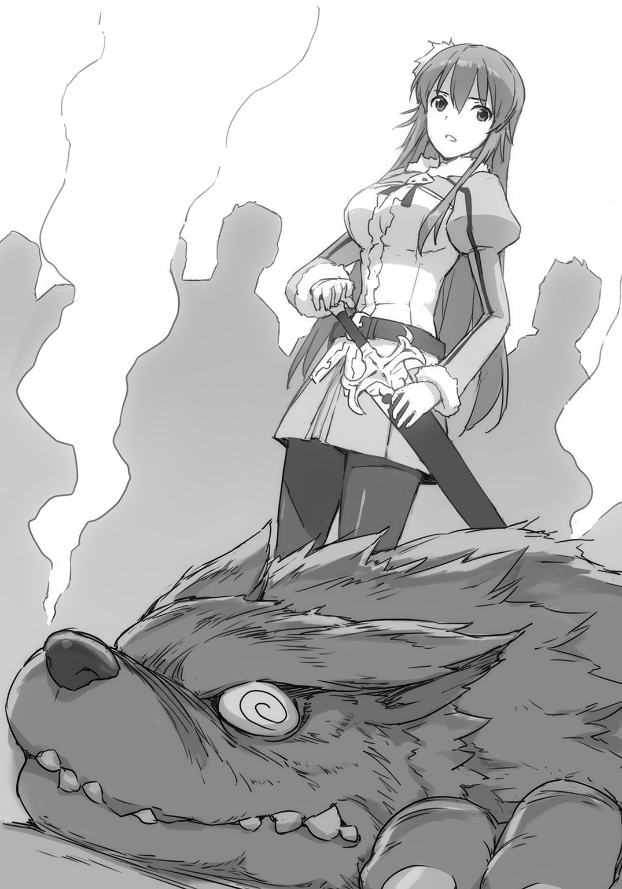
鍛冶屋の人たち。腕の太くて、胸毛も濃い、男くさい人たちが、一斉に歓声をあげている。
「嬢ちゃん嬢ちゃん」と連呼して、「すげえすげえ」と叫びまくっている。
あー。うん。
前にブレイドが、ドラゴンベビーを一撃で叩き伏せた件で、まわりじゅうから驚かれて、「普通！ 普通！ こんなの普通だから！」と連呼していたけど......。
そのキモチ。すこし。わかった気がするなっ。
このくらい......？ わりと普通よね？
○ＳＣＥＮＥ・Ⅲ「魔獣の弟子入り」
いつもの教練。いつもの試練場。
「アンナー――！」
午後の修練をやっていたアーネストは、遅れて授業にやってきたイェシカたちから、声をかけられた。
「アンナー、また来てたわよー、アンナー」
「校門のところに、お座りしてたのー。三角形っ！ 三角形なのっ！ ウルフ！ ウルフ！ おすましポーズで！ しっぽ！ しっぽだけ、ぱたぱたっ、ぱたぱたでっ！」
イェシカが言う。クレアが鼻息を荒くしている。
校門からこっちには、入るな。――と厳命してあったので、それは守っているというわけか。
あの魔獣には名前を与えた。
赤い毛並みを持つ魔狼族だから、赤魔狼と名付けた。さっそく「ウルフ」という愛称がついている。
「〝彼氏〟にちょっと冷たすぎるんじゃありませんこと？」
「だれが彼氏か。あんたのイケメン親衛隊よりか、手厚く扱ってあげてるわよ」
イケメンを何人も何人も、はべらせていたクソビッチに、そう言ってやる。
「魔狼族もインプリンティングされるとは。さすがの我も知らなんだ」
「我にはわかるのじゃー。あれはー。〝親さまー〟って感じではなくて、〝お師匠様ー〟って感じなのだとおもうのじゃー」
うちのガッコの魔獣二名――二匹？ が、好き勝手、言っている。
あの日、あのとき、あの工房街にて――。
ぶっ飛ばして〝おすわり〟させた魔獣に、アーネストは懐かれてしまっていた。
アーネストを〝強者〟と認めてしまったらしい。
その後、べったりと付きまとわれてしまって、困っている。
名前を与えてやったら――。
なんだか突然、ただそれだけを理由に、一段階、知性が進化したらしく、カタコト喋りぐらいはするようになった。
「オマエ、ツヨイ、我、オマエ、タタカウ」――だとか。
割と渋めの声で言うものだから、女子が、キャーキャー騒いでしかたがない。
「名前は自我の形成に重要かつ無視できないファクターです。私もクレアから〝イオナ〟という名前をもらうまえとあとの自我では、鮮明度において、ＳＮ比で二〇デシベルほども違いがあります」
「聞いてないし」
「ふふふ。私のハイスペックな機能を持ってすれば、アーネスト、貴女がなにをもじもじしているのか、推察することなど、造作もありません」
「もじもじしてないしっ！」
「ねー、アンナー。あの子、〝おすわり〟を解いてやらないと、たぶん、何年でも、あのまんまだと思うわよー？」
魔獣は通常の生物と違う。飲まず喰わずで何年だって活動が可能だ。
「あーもー！ わかったわよ！ 相手してあげればいいんでしょ！ もう！ 誰か連れてきて！」
「呼べば、彼、来るわよ？ 指笛聞こえたら、来ていいって、そう言っといたから」
イェシカが言う。
はい。そうですか。もうなにもかもが、手配済みですか。
詰め将棋にハメられた気分で、アーネストは、指を口にくわえ――てみたところで、ブレイドに、ちら、と、目をやった。
ブレイドが、今日はずっと、「ぶっすー」としている。
ブスになっている。
その理由がアーネストにはわからなくて、横顔を見ていると――。
（ブレイド君ね。あれね。嫉妬してんのね）
男女の機微の専門家であらせられるところの、イェシカが、小さく耳打ちしてきた。
アーネストは、目を大きく見開いた。
つぎに顔を、ぱあっと明るくさせた。
そして――。
「呼ぼっ♡ ――カムヒアー！ おいでーっ！」
ぴゅーっ！ と、指笛を吹く。アインとツヴァイを呼ぶときとは違う鳴らしかたで、指笛を吹いた。
一秒はかかっていなかったと思う。
アーネストの目の前に、ずどん――と、土柱が立った。
もうもうと上がった土埃が落ちつくと――。
「オマエ、ヨンダ、我、キタ」
赤い毛並みの一匹の魔狼が立っていた。
「あーあ、天井壊しちまいやがって......」
ブレイドがそう言った。第二試練場の天井に、穴が空いてしまっている。
その大穴を見上げるブレイドは、眉間に縦皺を寄せていた。
担いだ剣で、とんとんと、肩を叩く。
とんとん。とんとん。――と、その動きが、いつまでも止まらない。
うわーい。イラついてるー。イラついてるーっ!!
「そんなの、国王につけておけばいいのよ」
「陛下、だろ？ ――不敬だぞ？」
あはははは！ ブレイドが〝不敬〟とかッ!! ゆってるーっ!!
内心で、ぴょんぴょんしたくなるのを、ぐっと堪えて――。
アーネストはクールな女帝の顔になって、声を張りあげた。
「アテンション！」
試練場で、おのおの練習していた皆が、身動きをやめて、ぴしり、と、こちらに向いた。
「さあ――。みんな。今日はいい練習台が来たわよ。超生物ほど超生物でなくて――。ディオーネ将軍ほど化け物でもなくて――。だけど、実力がすこし格上の、いーい、練習相手が、来てくれたわよー？」
このあいだ戦ってみた感触では、アーネスト・ルナリア未満――ソフィ・イオナ以上、といった感じ。
だが名前を得たことで、知性化が一段階進んで、炎・氷の魔人モードの、１くらいには、ヘタしたら匹敵しているかもしれない。
上級クラスと下級クラスの皆にとっては、願ってもない――〝やや格上〟の相手なのだった。
「赤魔狼も――いいわよね？」
「ツヨク、ナレルカ？」
「なれるなれる。ぜったいぜったい。保証する保証する」
「我、ヤル」
即答。シンプル。
あーもー！ カワイーんだからー！
アーネストは、女子たちが騒いでいる理由の、一部あるいは全部を理解した。
腰の剣が、びびびび、と震える。
アースネストは、剣の柄を、片手でぽんぽんと撫でるように叩いてやった。「あんたも可愛いわよ。《アスモデウス》」――と、思念を送ってやったら、ものすごく、静かになった。
「さあ、みんな？ 〝ひどく実戦的な訓練〟――を、はじめるわよ？」
ぶすーっと、ブスになってるブレイドをよそに、皆の和気藹々とした練習がはじまった。
○ＳＣＥＮＥ・Ⅳ「お別れの日」
「はーい、いっくよー、ウルフー」
バレーボールに興じている。女子の打ち上げたボールを、赤魔狼が、爪で受け止めて、レシーブしている。
これも練習だ。――などと。噓八百を並べ立てて、遊びに付き合わせているのだが――。
真面目極まりない、修験道者のごとき、強さに貪欲な、魔獣のナイスガイは、それも修行に変えてしまっていた。
神鉄も切り裂く鋭さの爪で、ボールを斬らずに、ふんわりと打ち上げる。
あの爪は分子振動をしていて、たいていの物質はバターみたいに切り裂くはずなんだけど――。
正直、どうやっているのか、見当もつかない。
彼の呼びかたは、すっかり「ウルフ」で定着してしまっていた。アーネスト一人が「赤魔狼」と呼んでいる。
ちなみにブレイドは、「あんのクッソ猫かぶりブリッコ魔獣――略してＫＮＢＭ」とか、そんなふうに呼んでいる。
そのブレイドは、と、顔を向けると――。
あいかわらずブスになっていた。
しかめっ面を作りすぎちゃって、もう、なにがなんだか......（笑）。
くしゃっと中心に寄りきっちゃった〝変顔〟にしか見えない。
「ふん――。よかったじゃないか。〝どんな荒行を言いつけても嫌がったりしない、カワイイ年下の、ガッツのある教え甲斐のある相手〟――が、欲しかったんだろ？ ばっちりじゃないか。完璧じゃないか。よかったじゃないか。へーんっだ」
「なんなの？ それ？」
「――なっ!?」
ブレイドは、なぜだか、絶句している。
......ええっ？ 私、そんなこと言ったっけー？
ごめん。マジで覚えてないわー。
「ま。あいつも今日で、いなくなるしな。あー、残念だなー！ ほんと残念だー！ せいせいするぐらい、ザンネンだー！」
これたぶん、〝皮肉〟を言っているつもり。
ブレイドも、カワイイところある。
今日は――。イライザ謹製の武具の、完成する日となっていた。
赤魔狼はもともと、武器を得るために街にやってきたのだった。
大暴れをはじめたのは、大きな棍を渡された「コレジャナイ感」が理由で――。
速度を身上とする彼の戦闘スタイルに、棍はないわよねぇ、と、アーネストも思う。
彼の戦闘スタイルに最も合い、最もその強さを引き出せる武具とは――。
「さあ！ この天才マクスウェルがやってまいりましたよー！ すべての凡夫は道を譲りやがれです！」
助手のジェームズを引き連れて、白衣で風を切って、イライザがやってきた。
ジェームズが、自在包帯の補助まで使って、大きなコンテナぐらいある金属ケースを運んでくる。
そのケースを開けると、中には――。
「爪。......なのかしら、これは？」
通常の人間サイズの――三倍ほどもある、爪付きの手甲が、一組、収まっていた。
「それでは説明させていただきます。この爪は、アダマンタイトと呼ばれる神秘金属をベースにしてあります。製作には武器工房にもご協力いただきました。私は一介の狂科学者であり、やはり鍛冶は本職ではありませんので。ベースとなった原型の状態であっても、充分に強力な武具たり得ましたが、そこに禁忌の技術をふんだんに投入し、現状、考え得る限りの魔力強化を行っております。たとえば、電子公転の位相を揃える技術においては――」
「あー説明はいいから」
長くなりそうなので、アーネストは、手で遮った。
「黙れこの女帝ビッチめが！ 狂科学者のスペック自慢を遮りやがると！ 脳味噌！ 陽電子脳と！ 夜中にこっそり取り替えるぞ！」
最近、落ちついてきて、普通っぽくなっていたイライザだったが、ひさびさに、狂科学者の片鱗をみせつけた。
「我ノ、ブキ？」
赤魔狼は、きゅるん、と、小首を傾げている。
「そうよ。貴方のよ」
巨大な魔獣が、手を伸ばす。
カスタムメイドの一品物の武具は、人間の数倍もある――その魔獣の腕に、ぴったりと、はまった。
ウオオオオオ――！
両腕を頭上に振りあげて、戦闘咆哮。
耐性のない下級クラスの何人かが、失神した。
「我、オマエニ、カテル、カツトキ、カツ！ カツノハ！ イマ！」
赤魔狼は爪の先端を、アーネストに振り向けた。
あら？ 倒すって？ 誰を？ 私を？ 師匠を？
「私に勝ったら、どうするの？」
アーネストは、淡い笑顔で、挑発した。
「喰ウ！」
「あらこわい」
なんだかプロポーズでもされた気分。
ちら、と、ブレイドのほうを見てみると――。
ものすごい勢いで〝貧乏ゆすり〟をやっていた。
超振動する足に触れてる地面が、どんどんと、粉になってゆくぐらい。
魔獣の彼が、人間と一緒に修行をした。
戦略。戦術。フェイントに罠。人間の持つ様々な戦いの〝技術〟も習得した。
さらにイライザ謹製の超兵器も得た。
それによって、計算される、戦闘力の向上度合いは――。
「２――程度で、いいかしらね」
ずばん、と、アーネストは変身した。
炎の魔人と化す。いきなり２のほうでいった。
以前のアーネストは、巨大な火球を外部に生み出して、その膨大な熱量を一気に浴びることで、数万度という超高熱を生み出し、それによって２へと変身していたが――。
体内で炎属性の気を充分に練りこむことで、同様の現象を起こせるようになっていた。
アーネストも、また、日々、進化している。
炎の魔人２の姿で、赤魔狼の前に立ってあげると――。
相手のあからさまな動揺が伝わってきた。
「カツ？ 我？ カツ？ 喰ウ？ ......喰ワレル？」
《あら？ 戦う前から負ける心配？ ――魔獣やめたら？》
グオオオオオ――！
闘気と獣気が押し寄せる。
それでこそ魔獣。恐れを知らない気高き存在。
《あらあら。このわたくしを差し置いて、アーネストに勝つとか喰うとか言ってる悪い子は、どの子かしら？》
氷の魔人が、アーネストの横に並ぶ。
ルナリアだ。こちらもはじめから２の変身で立っている。
《なによあんた？ 下がってなさいよ。赤魔狼は私の弟子なんだから》
《どうせなら３Ｐとまいりましょう。彼はどのくらい逞しいのかしら？ わたくしも愉しみたいわ》
《あんた人のオモチャ取るの。ほんと。好きよね。昔から悪趣味》
二体の魔人を前にして、一匹の魔獣は――。
すっかり、キョドりまくっていた。
人間なら、半ベソないしは全ベソをかいていたところだろう。
だが魔獣は泣かない。泣けない。魔狼型には涙腺がない。
《ああ。そうそう。――わたくしたち、３もありましてよ》
《え？ やるの？ もー、しょーがないなー》
ずぼん！ どぼん！ と、炎と氷が吹き上がる。
魔人はさらなる変身を遂げた。
《さあ。――いらしてくださいな。せめて全力をお出しなさい》
《はいはい。ちゃっちゃとかかってくる。はやくする》
泣けないはずの魔狼が――全ベソをかきながら、腕を振り回して、二人に向けて突進をした。
○ＳＣＥＮＥ・Ⅴ「さよなら、赤魔狼」
夕陽が落ちる方角に、長く長く影が伸びている。
その影もだんだんと消えてゆく。
校門のところに皆で立って、見送りをした。
炎の魔人と、氷の魔人、二人にフルボッコにされた赤魔狼は、突き抜けた清々しさを背中に漂わせて、爪を振りながら立ち去っていった。
望みの武器を手にして、意気揚々と引きあげていく。
「いっちゃったねー。ウルフ」
「いったわねー。どっちかっていうと、〝逝く〟って感じだったけどねー」
「いってしまいましたわね。あれがいると、アーネストの可愛いところがたくさん見れて、よかったのですけど」
クレアとイェシカとルナリアが人として見送る。
「またこいよー」
「もうくんなよー」
「ふ。マイロードに近付くな。二度は言わない」
クレイとカシムとレナードが負け犬男子的に見送る。レナードあたりはいまごろになって宣戦布告している。
「ばいばーい、なのじゃー！」
「おう。また来るのだぞ。こんどは我を喰らいに来い。喰らってやろう」
クーと魔王が、魔獣として見送る。
ちなみに「喰う」とか「喰らう」とかいうのは、人間でいうところの「また勝負しようぜ！」ぐらいの意味。
「魔獣は大変興味深い存在でした。マスターの心をあれほど深く乱れさせた秘訣を、ぜひ、弟子入りして教わりたいところです」
イオナがハイスペック機的に見送る。
「乱されてねーし！ いなくなってせいせいしてるし！ おいこらポンコツ！ おま！ 言うにことかいて！ なに言ってんだよ！」
「もう。ブレイド。騒がないの。――せっかくのお別れなんだから」
アーネストは片手を伸ばすと、ブレイドのほっぺたにあてた。
「お、おう......」
ブレイドは、それですこしだけ――。静かになった。
アーネストと二人で並んで、どんどん遠ざかって見えなくなってゆく――。
一匹のお騒がせな魔獣の背中を、見つめていた。
「お、おまえさ......」
ぽつりと、ブレイドが言う。
「な、なに？」
どきりと、アーネストが返す。
「そ、そんなに寂しいんなら......。こ、こんどから、お、俺が、もうちょっと――練習に付き合ってやるから。だからやめろよっ......。さ、寂しがるのっ」
「......え？」
ブレイドがなにを言っているのか、アーネストは、不意に、理解して――。
うふふっ。
微笑んだ。
心配してくれてんだー。気遣ってくれてんだー。
弟子の赤魔狼がいなくなって、だから、心配してくれるんだー。
アーネストは、一五センチほど横に動いて、ブレイドと隙間なく体を並べて立った。
頭だけ、横に傾けて、ブレイドの肩に、半分だけ預ける。
「ね？ 嫉妬した？ ――いっぱいした？」
「ば――ばかっ！ するわけないだろ！ ――てゆうか！ 俺！ 嫉妬なんて知らねーし！ したことねーし！ わかんねーし！ バカ！ ほんとバカ！ バーカ！ バーカ！ バーカ！」
「うふふっ」
完璧にムキになって、完璧に真っ赤な顔で、唾を飛ばして罵ってくるブレイドに、アーネストは、とびっきりの笑顔を返した。
夕陽が、沈む。
今日が、終わった。
○ＳＣＥＮＥ・Ⅵ「蛇足」
「ねえねえ。聞いた聞いた？」
「怖いよねー」
「怖いねー」
朝で、学内で、廊下だった。
生徒たちが口々に話し合っている。
「おはよう」
歩いてきたアーネストは、健やかな笑顔を、皆に向けた。
最近、とっても、気分がいい。
このまえの出来事があってから、ここんとこ、ずっと気分は晴れやかだ。
――が。
「あ。女帝......、あ、あの、おはようございました」
いつもなら明るく挨拶を返してくれるはずの子たちが、ささーっと、アーネストの顔を見るなり、逃げるように立ち去っていってしまった。
え？ なに？ なんなの？
一人、取り残されてしまったアーネストは、目をぱちくり。
......？ おはようございました？ へんなの......？
なに？ なんなの？
◇
教室に入ると、アーネストはまず、イェシカの姿を探した。
この学園におけるすべての噂話は、まず、諜報部志望の彼女の耳に入る。
「ねえ。イェシカ。みんなが私を避ける理由。知っているでしょ。教えてくれない？」
「あっ？ ......ああ、アーネスト。お、おっはよー♪ あ、そうだー、あたしぃー、次の教室に行かなきゃー」
アーネストは、回りこんで、親友のまえに立った。
「逃げないで。教えてよ」
イェシカは助けを求めるように、ほかの皆に目線を巡らせる。
しかし返ってくるのは、人身御供に捧げる、冷たい視線ばかり。
「はあああぁぁぁ......」
しかたなく、大きなため息を、ひとつ、ついて――。
イェシカは観念したように話しはじめた。
「これは、まだ未確認の噂なんだけどね。あとで確認のために斥候出そうと思っているところだけど」
「うん」
「南の五条の大橋のところに。通り魔が出ているらしいのよ」
「退治しなきゃ。王都防衛隊はなにやってんのよ」
「その通り魔っていうのは、普通の人は襲わなくて、戦闘員だけを襲うやつで――」
「戦闘員を？」
「んで、勝つと、武器を奪ってゆくらしいのね」
「武器を？ なんで？」
「これまで奪われた武器は、そろそろ一〇〇本。負けて武器を奪われた人たち、みんな、ガン泣き」
「一〇〇本？ ちょっとちょっとちょっと――なんでそんなおおごとになるまで、放置されてんの？」
「ちなみに、なぜこれまで明るみにならなかったかというと、首都防衛隊が、全員、丸裸にされるまで、ひた隠しにしていたからで......」
「なんなの。それ。怠慢通り超えて、背任罪になるんじゃないの？」
「それでね。その犯人っていうか。大橋に陣取っているっていうのが、全身、毛むくじゃらで、身の丈三メートルはある、大きな......」
「すごい大男ね。そうか。強いのね。そいつ」
「まあ。強いっていうか。相当ね」
「よし。今夜パトロールに行くわよ。ガールズミッション。やるわよ。みんなにも招集かけて。今夜。――行くから」
アーネストは街の治安をこっそりと守る、女子たちの自警集団も率いていた。自分たちのその活動に、「ガールズミッション」と名付けていた。
「ま。まあ......。アンナが行けば、一発で、片付くんじゃないかなー。あはははは......」
「うん？」
アーネストは首を傾げた。
「なんなの？ ......なんの話？」
「てゆうか。気づけよ」
いいかげん真顔になった親友に、どすんと胸の谷間に突きを入れられる。
自分の胸に、よーく......、聞いてみた？
そうしたら――。
「あっ」
アーネストは、気づいた。気づいてしまった。
「はあああぁぁぁ......」
そして、深く深く、ため息をついた。
連続武器狩り魔の正体が、わかった。わかってしまった。
「武器ー。嬉しかったんだろうねー。手に入れて、喜んだんだろうねー。それで武器マニアになっちゃったんだろうねー。......さてここで質問です。弟子が悪の道に墜ちたときには、師匠は、どうするべきでしょー？」
イェシカが言う。
「ちいぃ......」
アーネストは、壮絶に舌打ちをした。
横を向いて、吐き捨てるように――つぶやく。
「あのまま綺麗に消えとけよ。くそダッせえ」
あ と が き
さて――。超生物スローライフも、六巻目となりました。
かねてからの予告通り、この第六巻は、短編多数の全九話の構成となっています。
作り手側の感触としましては、かなり良好でして――。いつもよりも読みやすいものになったかなー、と思っています。
実際に読まれたご感想は、どうでしたでしょうか？ 「いつものほうが良かった」「いいぞもっとやれ」などなど、ご意見ご感想は、あとがき末尾のＱＲコードにある「アンケート」のほうに、よろしくお願いします。
さて。各話解説などをしていこうと思います。なぜ新木が、その話を思いついたのか？ 正確に言いますと、短編ネタが数十本分も、ぎっしり詰まっているネタ帳から、あえてそのネタをチョイスしてきたのか――。と、そのあたりの創作秘話（？）をつらつらと書いてゆきます。
●第一話「バレてる？」
「勇者である」ことを、どこまでバレているのかブレイドが気にする話。そのへんを気にするようになったブレイドの心理だとか。察している人、ぜんぜん気づいてない人、今回気づいちゃった人、の塗り分けで、人間模様が描きだせて面白くなる、という発想から生まれました。
●第二話「クレア・マウンテン」
クレアが巨大化しちゃう話。サイズの違いは戦闘力の決定的な違いにならない、ということの、エピソードにおける立証。あと単に新木の巨大美女スキーの趣味により書かれました。
もしも「デカけりゃ強い」が成り立つ世界なら、人間族の勇者が、竜族に勝てるはずもなし。
●第三話「ルナリアの悩み」
前巻の第五巻で登場を果たした新ヒロイン・ルナリアの、補完＆掘り下げ回です。中長編だと、なかなかこの手のことがやりにくかったりしますが、短編が九本もあれば、そのうちの一本をまるっとリッチに使いきって、ワンテーマでエピソード化できちゃいます。
●第四話「普通人の生活」
新木は、『学園エヴァ』、好きなんですよー!! ......ということで『学園教室』です（なんのこっちゃ）。ブレイドの勇者時代の片鱗と凄味も、ちょっぴり味わえる内容となっています。
●第五話「マッサージ師ブレイド」
ブレイドが〝マッサージ術〟を編み出す話。ある方面における〝達人〟は、多方面においても、いきなり〝達人〟になれてしまうであろう。――という理念によって生まれました。
●第六話「賢者クレイ」
この世界における戦闘力の根源を支える〝気〟というものに関して、説明で済ませてしまっては、つまらないので、短編一本、まるっとリッチに使いきってエピソード化。さらにイオナの扱いが酷すぎる、という件に関して、いえ酷くないんですよ、あれは「足踏みマットの幸せ」に対するブレイドなりの気遣いなんですよー。――という話。
●第七話「脱怪人赤マント」
ハダカんぼで走り回るアーネストがポンコツすぎるので......。ちょっと可哀想かなー、と、思って製作にとりかかったら、もっとポンコツになってしまいました......とさ。
●第八話「デートのお手本」
イェシカ推しの回です。なに考えているかわからない正体不明の彼女ですが、やはり、最後までわかりませんでしたー。
●第九話「美女と魔獣」
ブレイドたちの住む世界のガイダンスの役割を持った回と、一冊のラストの締めとなる「ちょっとイイ話が必要」という構成上からの要請と、そんなこんなで、ネタ帳からセレクトされてきた一話です。「魔獣」という、人と違うメンタル構造を持つ生物（？）のフシギ――については、マオやクーのときに、これまでにも片鱗くらいは語っていますが、そのうちまた、ワンエピソード費やしてリッチに語れる機会もあるでしょう。ちなみに新木のデビュー作『ヴァルツアーの紋章』は、この魔獣たちが主役の話だったりします。
さて、各話解説のつぎは、宣伝やら、マルチメディア展開やら、その他の情報です。
『英雄教室』次巻、第七巻ですが、今回第六巻に引き続きまして、またまた限定版も一緒に発売となります！ 次回はなんとオーディオドラマ付き限定版です！ 脚本は新木による書き下ろしです。
また、コミカライズ開始のお知らせです！ 二〇一六年九月一二日発売の、『月刊少年ガンガン』一〇月号より、『英雄教室』の連載が開始しております！ ブレイドがローズウッド学園に転入してくる、原作一巻のエピソードからのスタートです。
あと二〇一六年一一月（予定）に、新木伸の新シリーズ『自重しない元勇者の強くて楽しいニューゲーム』がスタートします。またもや『小説家になろう』で連載中の作品の書籍化です。これでＤＸ文庫では、三シリーズ同時展開となります。こんどの話は、『Ｃマート』や『英雄教室』とは、ちょっと趣が変わりまして、自己の欲望に忠実な、ワルいヒーローが、いっさい「自重」しないで、再召喚後のセカンドライフをエンジョイしまくる物語です。
最後に恒例二次元バーコード。
まず『英雄教室６』のアンケートは、こちらよりどうぞ。
http://www.araki-shin.com/eiyu6.htm
そして新木伸の『小説家になろう』の著者ページはこちらです。連載作品関連はこちらへどうぞ。『異世界Ｃマート繁盛記』をはじめ、何本も連載をやっています。
http://mypage.syosetu.com/605697/
著者紹介
新木 伸 あらき しん
キャラクター小説家。ライトノベル界隈に生息。
「小説家になろう」でも連載中。
キャラクターが大好き。
《心がぴょんぴょんするラノベ普及委員会》会員番号０００１番。
illustration
森沢晴行 もりさわ はるゆき
東京都在住富山県出身のイラストレーター。
リオ五輪観ながら描きました。
ダッシュエックス文庫DIGITAL
英雄教室６
著者 新木 伸
© SHIN ARAKI 2016
２０１６年10月31日発行
この電子書籍は、ダッシュエックス文庫「英雄教室６」
２０１６年９月26日発行の第１刷を底本としています。
発行者 鈴木晴彦
発行所 株式会社 集英社
〒１０１－８０５０
東京都千代田区一ツ橋２丁目５番10号
０３－３２３０－６０８０（読者係）
制作所 株式会社ＩＣＥ
本作品の全部また一部を無断で複製、転載、改竄、インターネット上に掲載すること、および有償無償に関わらず、本データを第三者に譲渡することを禁じます。なお個人利用の目的であっても、コピーガードを解除しての複製は、法律で禁じられています。